O(M^2) ⟶ O(MN) + O(N^2)
Il problema della complessità quadratica
Il Perceiver (Jaegle et al., 2021) è un'architettura basata su Transformer progettata per elaborare modalità di input molto diverse — immagini, audio, video, point cloud — con un'unica architettura, senza componenti domain-specific.
L'idea centrale è proiettare un input di dimensione arbitraria M in un latent array L di dimensione fissa N ≪ M tramite cross-attention. In questo modo il costo diventa lineare in M invece che quadratico e, soprattutto, si ottiene una cosa fondamentale: disaccoppiando la profondità della rete dalla dimensione dell'input, possiamo impilare molti layer di self-attention nello spazio latente senza pagare ogni volta il costo dell'input enorme. In concreto: aggiungere layer di ragionamento costa O(N²) sui 512 latenti, non O(M²) sui 50.176 pixel — la profondità diventa quasi "gratis" rispetto alla dimensione dell'input (lo vedremo al Cap. 8).
Prima di capire cos'è il Perceiver, conviene quindi capire perché esiste. Il punto di partenza è un trade-off: efficienti ma legate alla griglia, Transformer flessibili ma quadratici. Il Perceiver nasce per uscire da questo blocco quando il costo esplode proprio quando l'input diventa ricco: immagini ad alta risoluzione, audio lungo, video, point cloud.
CNN: scalabili ma specializzate
Le reti convoluzionali hanno un costo computazionale lineare nel numero di input — O(MKL), dove M sono i pixel, K la dimensione del kernel, L i layer. Perfette per le immagini perché sfruttano la struttura 2D locale: i vicini sulla griglia contano, i lontani no.
Ed è proprio questo il loro limite. La convoluzione 2D presuppone una griglia regolare di pixel. Per l'audio serve una conv 1D, per il video conv 3D, per i point cloud architetture completamente diverse (PointNet, PointNet++). Cambiare dominio = riprogettare la rete da capo.
Transformer: generali ma quadratici
Il Transformer ha un'unica primitiva — la self-attention — che funziona su qualsiasi sequenza di vettori. Non sa nulla di immagini, audio, testo: vede solo un insieme. Per questo è general-purpose.
Il prezzo? Ogni elemento confronta sé stesso con tutti gli altri. Per M input, la matrice di attenzione è M×M ⇒ costo O(M²). Su testo (poche centinaia di token) gestibile. Su un'immagine ImageNet 224×224 (= 50.176 pixel) la matrice avrebbe ~2.5 miliardi di entry. Impraticabile.
La via d'uscita: latent bottleneck
Il Perceiver prende il meglio di entrambi: la generalità del Transformer e la scalabilità delle CNN. Come? Introduce un latent bottleneck: un collo di bottiglia di dimensione fissa N ≪ M attraverso cui far passare l'input.
O(M^2) ⟶ O(MN) + O(N^2)
Il costo dell'attenzione crolla. E poiché N è fisso (es. 512), il costo cresce solo linearmente in M. Stesso modello per immagini, audio, video, point cloud: non serve riprogettare niente.

Idea chiave
Un solo modello per tutte le modalità, a costo lineare nell'input. Il prezzo: l'input va prima compresso in N ≪ M latenti. Tutto il resto dell'architettura discende da questa scelta.
Dalla self- alla cross-attention
Capito il problema (O(M²)), vediamo concretamente come il Perceiver lo aggira. La chiave è una piccola modifica all'attention.
Self-attention: la versione classica
Nel Transformer standard, Query, Key e Value sono tutti calcolati dallo stesso input X. Ogni token "guarda" tutti gli altri token, e il risultato è una matrice di attenzione M×M (quadrata).
Cross-attention: l'asimmetria
Il Perceiver introduce un secondo array: i latenti L. E qui sta il trucco:
- Le Query Q vengono dai latenti L (sono solo N, pochi).
- Le Key K e i Value V continuano a venire dall'input X (sono M, tanti).
Il prodotto QKᵀ diventa una matrice rettangolare N×M. Il costo crolla da O(M²) a O(MN).
Rif. 1.2 · self-attention vs cross-attention
Da M×M a N×M
Passa da self-attention a cross-attention: cambia solo la sorgente delle query, ma la matrice smette di essere quadrata.
Self-attention: Q, K e V vengono dallo stesso input, quindi la matrice è M×M.

L'intuizione: Q, K, V come domanda-etichetta-contenuto
Memorizza
Q = una domanda ("cosa sto cercando?"). K = un'etichetta ("io rappresento questo"). V = il contenuto informativo. L'attenzione confronta ogni domanda con tutte le etichette e restituisce una media pesata dei contenuti più pertinenti.
I latenti non sono input, sono parametri
Punto cruciale: i latenti L ∈ ℝ^(N×D) sono parametri appresi del modello, NON derivano dall'input. Sono "unità di memoria" — una base compatta che il modello usa per riassumere qualsiasi cosa gli si dia in pasto. Sono uguali per ogni esempio del batch e cambiano solo durante il training, mai durante l'inferenza.
| Aspetto | Self-Attention | Cross-Attention (Perceiver) |
|---|---|---|
| Sorgente Q | Input X (M token) | Latenti L (N latenti) |
| Sorgente K, V | Input X (M token) | Input X (M token) |
| Matrice attenzione | M×M (quadrata) | N×M (rettangolare) |
| Complessità | O(M²) | O(MN), con N≪M |
Idea chiave
La cross-attention è un piccolo gruppo di N latenti che "interroga" gli M elementi dell'input. L'asimmetria N ≪ M è ciò che rompe la quadraticità del Transformer.
L'architettura in tre stadi
Hai capito il principio (cross-attention con latenti). Adesso vediamo come è organizzata l'intera rete.
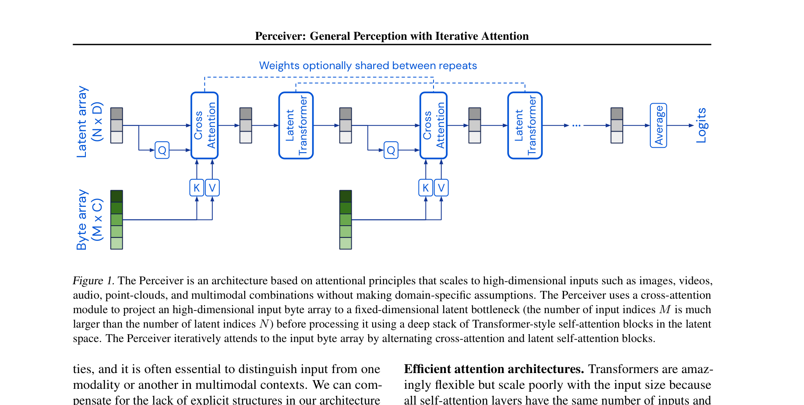
Rif. 1.3 · architettura generale
M×C_tot → N×D → N×D → D → 1000
Segui il pacchetto dati: il restringimento vero avviene subito, da M=50.176 input a N=512 latenti.
Forma attiva50.176×261
Costo pesanteO(MN)
Messaggiocomprimere prima
Il byte array enorme viene letto dai latenti: la profondità successiva lavora su N, non su M.
I tre stadi
- Encoder a cross-attention: legge l'input enorme
X ∈ ℝ^(M×C_tot)e lo comprime nel latent arrayL ∈ ℝ^(N×D). - Latent transformer: raffina L con self-attention profonda, interamente nello spazio compresso (N×D).
- Testa di pooling + classificazione: aggrega gli N latenti finali e produce i logit per le classi.
Il blocco (encoder + latent transformer) viene poi ripetuto T volte: il modello "rilegge" l'input più volte, raffinando progressivamente i latenti. Vedremo questa ricorrenza al capitolo 9.
Le due proprietà che lo definiscono
Da questa scelta architettonica discendono i due tratti distintivi del Perceiver:
- Lo stesso modello gestisce modalità diverse (immagini, audio, point cloud, ...) senza modifiche.
- La profondità della rete è disaccoppiata dalla lunghezza dell'input: puoi impilare layer nel latent transformer senza che il costo cresca con M.
I numeri di ImageNet (da tenere a mente)
Questi sono i valori usati nel paper per la configurazione ImageNet — li incontrerai in tutto il forward pass:
| Simbolo | Valore | Significato |
|---|---|---|
M | 50.176 | pixel di input (224×224) |
C | 3 | canali grezzi (RGB) |
C_tot | 261 | canali per pixel dopo Fourier (3 RGB + 258 Fourier) |
N | 512 | numero di latenti (N ≪ M) |
D | 1024 | dimensione di ogni latente |
d_QKV | 261 | dim. interna cross-attention = min(D, C_tot) |
T | 8 | iterazioni con weight sharing |
ℓ | 6 | self-attention per blocco del latent transformer |
H | 8 | teste self-attention (d_head = 128) |
K | 64 | bande di frequenza Fourier per asse |
Idea chiave
Tre stadi: encoder (cross-att comprime) → latent transformer (self-att raffina nei latenti) → pooling + classificatore. Il blocco encoder+transformer si ripete T=8 volte con weight sharing.
Input: il byte array
Iniziamo il forward pass. Il primo passo è trasformare un input grezzo (un'immagine, un waveform, un point cloud) in un formato che il Perceiver possa digerire uniformemente.
Input→
Fourier→
Latenti→
Cross-Att→
Latent Tr.→
×T→
Pooling
Rappresentazione uniforme: M × C
Qualsiasi input viene "appiattito" in un byte array di forma M × C: M elementi, ciascuno con C canali. È una rappresentazione uniforme: lo stesso formato per ogni modalità — è da qui che nasce la generalità del Perceiver.
- Immagine RGB 224×224: M = 224×224 = 50.176 pixel, C = 3 (R, G, B).
- Audio: M = numero di sample, C = 1 (mono) o 2 (stereo).
- Video: M = frame × pixel/frame, C = canali per pixel.
- Point cloud: M = numero di punti, C = 3 (coordinate x, y, z).
Nessuna delle strutture domain-specific (convoluzioni 2D per immagini, mel-spectrogram per audio, ecc.) viene usata. Tutto è ridotto a una matrice di numeri.
ImageNet: come si arriva al byte array
Per un'immagine RGB 224 × 224:
- Ogni pixel è rappresentato da 3 valori (canali RGB).
- L'immagine può essere vista come matrice
[224 × 224] (M) × [3] (C). - Il numero totale di pixel è
224 × 224 = 50.176. - Il numero totale di valori (byte) è
224 × 224 × 3 = 150.528.
L'immagine viene poi "linearizzata" (semplice reshape della griglia in una sequenza):
Byte Array = [ r₁, g₁, b₁, r₂, g₂, b₂, …, r₅₀₁₇₆, g₅₀₁₇₆, b₅₀₁₇₆ ]
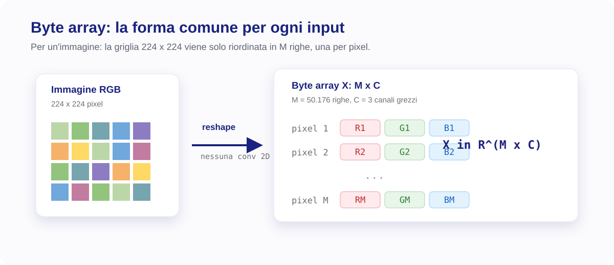
Rif. 1.4.1 · byte array
Sorgenti diverse, stessa matrice M×C
Cambia la modalità a sinistra: immagine, audio e point cloud diventano comunque una sequenza di righe numeriche.
Un'immagine 2D viene linearizzata riga per riga: la struttura griglia non è più nel formato, va aggiunta con Fourier features.
Checkpoint dimensioni — fine §1.4.1
A questo punto abbiamo l'immagine cruda organizzata come matrice:
| Oggetto | Forma simbolica | ImageNet | Contenuto di una riga |
|---|---|---|---|
| Byte array (grezzo) | M × C | 50.176 × 3 | R, G, B del pixel |
È solo il contenuto "cromatico" dei pixel. Manca l'informazione posizionale: questo byte array da solo, dato al Perceiver, non distinguerebbe due immagini che differiscono solo per una permutazione dei pixel. La prossima sezione aggiunge la posizione tramite Fourier features.
Idea chiave
Il byte array M × C è la lingua franca del Perceiver: qualunque sia la modalità di input (immagine, audio, video, point cloud), tutto finisce qui. Da questo formato uniforme nasce la generalità del modello.
Positional encoding: le Fourier features
Il byte array dice cosa contiene ogni elemento, ma non dove si trova. È un problema, perché l'attention è cieca alla posizione. Le Fourier features risolvono il problema in modo elegante.
Input→
Fourier→
Latenti→
Cross-Att→
Latent Tr.→
×T→
Pooling
Il problema: l'attention è cieca alla posizione
Un pixel con valore [R, G, B] contiene solo informazione di colore, ma non contiene informazione di posizione. Senza posizione, il modello non potrebbe distinguere due immagini identiche ma traslate, né accorgersi che permutare i pixel cambia l'immagine.
Per il Transformer su testo, il problema è risolto con sinusoidi sommate agli embedding. Per il Perceiver — che lavora su modalità arbitrarie — serve una soluzione più flessibile.
La soluzione: Fourier features
Le Fourier features sono una tecnica di mappatura che trasforma una posizione scalare (o vettoriale) x in uno spazio ad alta dimensione applicando seno e coseno a K frequenze diverse.
Formalmente, per ogni dimensione spaziale d, dato il valore di coordinata x_d ∈ [-1, 1]:
PE(x_d) = [ sin(f₁·π·x_d), cos(f₁·π·x_d), …, sin(f_K·π·x_d), cos(f_K·π·x_d), x_d ]
cioè: 2K valori sinusoidali (K frequenze, ognuna con sin e cos) + 1 coordinata grezza. Le basse frequenze catturano posizioni globali ("metà sinistra vs destra"), le alte catturano posizioni precise.

Tre scelte di design da memorizzare
1. Frequenze linearly spaced (non esponenziali come NeRF)
Le frequenze f_k sono linearly spaced tra 1 e μ/2, dove μ/2 è la frequenza di Nyquist corrispondente al sampling rate di riferimento. Per ImageNet 224×224: μ = 224, μ/2 = 112.
NeRF (Mildenhall et al., 2020) usa invece frequenze esponenziali: f_k = 2^k. Perché il Perceiver non le usa?
Citazione dal paper (App. D)
"la parametrizzazione NeRF produce frequenze molto alte anche con un numero moderato di bande — ad esempio la 64-esima banda avrebbe frequenza 2⁶⁴ ≈ 1.8×10¹⁹". Con K=64 bande, NeRF darebbe numeri ingestibili. Il paper riporta instabilità di training già oltre k≈15 con la parametrizzazione esponenziale.
2. Si concatena anche la coordinata grezza x_d
Le Fourier features (sin/cos) sono periodiche: frequenze alte possono mappare posizioni diverse nello stesso valore (ambiguità). Concatenando il valore grezzo x_d (che è unico per ogni posizione), il modello ha sempre accesso alla posizione esatta, senza ambiguità.
Le sinusoidi forniscono sensibilità multi-scala; il valore grezzo fornisce l'identità posizionale.
3. Si concatena al colore, non si somma
Perché concatenare e non sommare? Perché la concatenazione preserva l'informazione di colore e posizione separatamente, mentre la somma le mescolerebbe in modo ambiguo. I Transformer per il linguaggio invece sommano il positional encoding agli embedding — il Perceiver fa la scelta opposta.
Il calcolo di C_tot = 261
Esempio concreto: un pixel rosso in posizione (0.3, 0.7)
- Canali RGB:
[255, 0, 0](normalizzati:[1.0, 0, 0]). - Posizione normalizzata:
(x, y) = (0.3, 0.7). - Fourier per x=0.3 con 3 frequenze illustrative (f₁=1, f₂=2, f₃=4):
[0.3, sin(0.3π), cos(0.3π), sin(0.6π), cos(0.6π), sin(1.2π), cos(1.2π)] = [0.3, 0.809, 0.588, 0.951, -0.309, -0.588, 0.809]
- Analogamente per y=0.7.
- Vettore finale:
[1.0, 0, 0, 0.3, 0.809, …, 0.7, …] ∈ ℝ²⁶¹
Checkpoint dimensioni — fine §1.4.2
Dopo l'aggiunta delle Fourier features, ogni pixel è descritto da C_tot=261 numeri invece di C=3:
| Oggetto | Forma | ImageNet | Contenuto |
|---|---|---|---|
| Byte array (grezzo) | M × C | 50.176 × 3 | RGB |
| Byte array X (con Fourier PE) | M × C_tot | 50.176 × 261 | 3 RGB + 258 Fourier |
Idea chiave
Le Fourier features danno al modello la posizione. È questa scelta — non l'architettura in sé — a rendere il Perceiver invariante alle permutazioni dei pixel. Perché? L'attention tratta l'input come un insieme: non ha alcuna nozione dell'ordine delle righe. Se la posizione è codificata dentro ogni riga (Fourier), permutare le righe non distrugge nulla — riga e posizione restano accoppiate. Una CNN invece deduce la posizione dall'indice nella griglia: permutare gli indici la acceca. Lo vedremo concretamente al capitolo 12.
Il latent array
Adesso abbiamo l'input pronto (byte array + Fourier). Manca l'altro protagonista: il latent array, che la cross-attention metterà in comunicazione con l'input.
Input→
Fourier→
Latenti→
Cross-Att→
Latent Tr.→
×T→
Pooling
Una matrice di parametri appresi
Il latent array L ∈ ℝ^(N×D) è una matrice di N vettori latenti. Per ImageNet: 512 × 1024. È interamente appresa: sono parametri del modello, esattamente come i pesi di una conv layer o di un linear layer.
- N = numero di latenti (slot, "unità di memoria"). Per ImageNet: 512.
- D = dimensione del canale/embedding di ogni latente. Per ImageNet: 1024.
Questi vettori non derivano direttamente dall'input e non hanno legame spaziale con token/pixel specifici: sono una base compatta che il modello usa per riassumere l'input.
Attenzione
I latenti sono uguali per ogni esempio del batch e cambiano solo durante il training (mai durante l'inferenza). Pensali come una base compatta condivisa, non come un input.

Rif. 1.4.4 · latent array
Quanto è piccolo N rispetto a M?
Il bottleneck non è un dettaglio: per ImageNet i latenti sono circa l'1% degli elementi di input.
Input M = 50.176
50.176
Latenti N = 512
1,02%
La cross-attention paga
N×M, poi tutto il ragionamento profondo resta nello spazio N×D.Inizializzazione: piccolo è meglio
Ogni elemento di L è campionato da una gaussiana stretta:
L_ij ~ 𝒩(0, 0.02²), troncata a [-2, 2]
I valori partono quasi tutti minuscoli (~±0.02). Perché così piccoli?
- Stabilità dei gradienti: se i latenti partissero con valori grandi, i prodotti
QKᵀsarebbero enormi, la softmax saturerebbe, e i gradienti diventerebbero instabili. - Neutralità: media zero significa che nessun latente ha un "vantaggio" iniziale su un altro.
- Sicurezza numerica: il troncamento a [-2, 2] esiste per sicurezza, ma con σ=0.02 è rarissimo che si producano valori oltre 0.1.
- Specializzazione graduale: partendo con valori piccoli e neutri, i latenti vengono "riempiti" progressivamente dall'informazione dell'input, e col tempo ciascuno tende a specializzarsi (bordi, colori, texture, pattern globali...). È un'osservazione qualitativa, visibile nelle attention maps (vedi App. 4 — I miei esperimenti).
I due array che si incontrano
A questo punto abbiamo gli ingredienti che la cross-attention combinerà:
| Oggetto | Forma | ImageNet | Natura |
|---|---|---|---|
| Byte array X | M × C_tot | 50.176 × 261 | input (3 RGB + 258 Fourier) |
| Latent array L | N × D | 512 × 1024 | parametri appresi, init 𝒩(0, 0.02²) troncata |
Osservazioni chiave:
- Le due matrici hanno dimensione-feature diversa (261 vs 1024). Sarà la cross-attention a farle incontrare in uno spazio comune (
d_QKV = min = 261). - Il numero di righe è molto diverso (50.176 vs 512): è questa asimmetria che dà
O(MN)invece diO(M²). - Il vincolo fondamentale:
N ≪ M. Qui N/M = 512/50.176 ≈ 1%.
Idea chiave
I latenti sono parametri, non dati. Il loro numero N è fisso e piccolo (512). Il loro contenuto è imparato dal training. È questa asimmetria N ≪ M a dare al Perceiver tutta la sua efficienza.
Il blocco di cross-attention
Il cuore del Perceiver. Vediamo passo per passo come gli N latenti "leggono" gli M elementi dell'input. È il capitolo più tecnico della lezione.
Input→
Fourier→
Latenti→
Cross-Att→
Latent Tr.→
×T→
Pooling
Rif. 1.4.5 · Cross-Attention Block
LayerNorm → Q/K/V → scores → softmax → A·V → residual → MLP
Segui il blocco come una catena: ogni step conserva le forme corrette e prepara quello successivo.
LayerNorm pre-attention: normalizza X e L prima delle proiezioni.

Passo 1 — LayerNorm pre-attention
Prima di ogni cosa, entrambi gli array (X e L) attraversano una LayerNorm. La LN normalizza ogni riga (ogni pixel, ogni latente) a media 0 e varianza 1, poi applica due parametri appresi γ e β. Niente di magico: stabilizza i valori che entrano nell'attention.
x̂_j = γ_j · \frac{x_j - μ}{σ + ε} + β_j (ε ≈ 10⁻⁵)
Pre-norm
Il Perceiver usa il pattern pre-norm (paper App. C): la LN è applicata prima del blocco (non dopo). Così il residuo resta un percorso "pulito" su cui il gradiente fluisce senza attraversare la LN ⇒ training stabile su reti profonde. Lo stesso schema di GPT-2.
Passo 2 — dimensione interna d_QKV
Q, K, V devono avere la stessa dimensione-feature per poter fare il prodotto QKᵀ. Si sceglie:
d_QKV = min(D, C_tot) = min(1024, 261) = 261
Perché il minimo? L'input ha già solo 261 canali: una proiezione lineare 261→1024 ha rango ≤ 261, quindi produrrebbe sì 1024 feature ma solo 261 linearmente indipendenti — le altre sono ridondanti. Espandere non può creare informazione che non c'è: sarebbe solo spreco di parametri e FLOPs. Scegliere il minimo tiene Q, K, V in dimensione compatta e usa 1024 solo dove serve davvero (lo spazio dei latenti).
Passo 3 — proiezioni Q, K, V
Tre matrici di pesi apprese, senza bias (paper App. C: "linear layers" senza bias):
Q = L̃ · W_Q, W_Q ∈ ℝ^(D × d_QKV) = ℝ^(1024 × 261) ⇒ Q ∈ ℝ^(512 × 261) (dai latenti)
K = X̃ · W_K, W_K ∈ ℝ^(C_tot × d_QKV) = ℝ^(261 × 261) ⇒ K ∈ ℝ^(50.176 × 261) (dall'input)
V = X̃ · W_V, W_V ∈ ℝ^(C_tot × d_QKV) = ℝ^(261 × 261) ⇒ V ∈ ℝ^(50.176 × 261) (dall'input)
Le matrici W sono apprese: imparano a produrre query, key e value "ottimali" per il matching (riduzione di feature rumorose, ecc.). Inizializzate con Xavier Uniform. Da non confondere: questi sono i pesi delle proiezioni; i latenti L (Cap. 6) usano invece la gaussiana stretta 𝒩(0, 0.02²) — oggetti diversi: matrici di proiezione vs parametri-memoria.
L'asimmetria chiave: Q ha poche righe (N=512), K e V ne hanno tante (M=50.176). Stessa dimensione-feature (261), ma forma molto diversa. È da qui che nascerà la matrice rettangolare N×M.
Passo 4 — scaled dot-product attention
Quattro operazioni combinano Q, K, V:
(a) score: S = Q · Kᵀ ∈ ℝ^(512 × 50.176)
(b) scaling: S' = \frac{S}{√d_QKV} = \frac{S}{√261} ≈ \frac{S}{16}
(c) softmax: A_ij = \frac{e^(S'_ij)}{Σₖ e^(S'_ik)} ∈ ℝ^(512 × 50.176)
(d) aggregazione: F = A · V ∈ ℝ^(512 × 261)
(a) Score: prodotto QKᵀ
Misuriamo la compatibilità tra ogni query e ogni key. Due vettori allineati ⇒ score alto. Due vettori in direzioni diverse ⇒ score basso. La matrice risultante è 512×50.176: ogni riga è un latente, ogni colonna un pixel, e l'entry (i,j) dice "quanto il latente i trova interessante il pixel j".
(b) Perché lo scaling per √d_QKV?
Senza scaling, gli score avrebbero deviazione standard ≈ √d_QKV ≈ 16. Perché proprio √d? Dopo LayerNorm ogni componente di Q e K ha varianza ~1; il prodotto scalare q·k = Σᵢ qᵢkᵢ somma d_QKV = 261 termini indipendenti a varianza ~1, e le varianze di termini indipendenti si sommano ⇒ Var ≈ 261, quindi std ≈ √261 ≈ 16. Senza correzione la softmax saturerebbe (tutta la massa su un solo pixel) e i gradienti si annullerebbero. Si divide per √d_QKV (non per d_QKV!) così la deviazione standard torna a ~1: la scala giusta per una softmax morbida.
(c) Softmax per riga
La softmax (applicata indipendentemente a ciascuna riga) trasforma score reali in probabilità: tutti i valori in [0,1], sommano a 1 su ogni riga. Ogni latente ottiene così un "budget di attenzione" da distribuire sui 50.176 pixel.
(d) Aggregazione: F = A·V
Ogni latente diventa una media pesata dei Value dell'input, secondo i pesi A calcolati nello step (c). Output: F ∈ ℝ^(512 × 261).
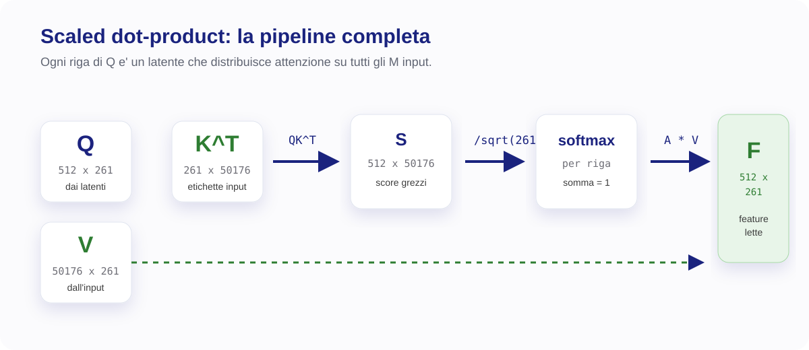
Passo 5 — output projection + residual
F vive in dimensione 261 (la dim di d_QKV). Va riportato a D=1024 per poterlo sommare ai latenti:
Z' = F · W_o + b_o, W_o ∈ ℝ^(261 × 1024) ⇒ Z' ∈ ℝ^(512 × 1024)
L' = L + Z' (residual connection)
Passo 6 — MLP (feed-forward)
Pre-norm, espansione a 4D, attivazione GELU, compressione, residual:
L̃' = LN(L')
H = L̃' · W₁ + b₁, W₁ ∈ ℝ^(1024 × 4096), H ∈ ℝ^(512 × 4096)
H' = GELU(H)
φ = H' · W₂ + b₂, W₂ ∈ ℝ^(4096 × 1024)
L̂ = L' + φ (residual finale)
L'espansione a 4D=4096 e il pattern hidden=4× sono standard GPT-2. Output finale del blocco:
L̂ ∈ ℝ^(512 × 1024) — stessa forma di L
Riepilogo: il blocco completo
| # | Operazione | Formula | Dimensione |
|---|---|---|---|
| Cross-Attention | |||
| 1 | LayerNorm pre-att. | L̃ = LN(L), X̃ = LN(X) | invariate |
| 2 | Q | Q = L̃·W_Q, W_Q ∈ 1024×261 | 512×261 |
| 2 | K | K = X̃·W_K, W_K ∈ 261×261 | 50176×261 |
| 2 | V | V = X̃·W_V, W_V ∈ 261×261 | 50176×261 |
| 3 | Scaled scores | S = QKᵀ√261 | 512×50176 |
| 4 | Softmax | A_ij = e^S_ijΣ e^S_ik | 512×50176 |
| 5 | Aggregazione | F = A·V | 512×261 |
| 6 | Output projection | Z' = F·W_o + b_o | 512×1024 |
| 7 | Residual | L' = L + Z' | 512×1024 |
| MLP (pre-norm, GELU, hidden 4D) | |||
| 8 | LN pre-MLP | L̃' = LN(L') | 512×1024 |
| 9 | Espansione + GELU | H' = GELU(L̃'·W₁ + b₁) | 512×4096 |
| 9 | Compressione | φ = H'·W₂ + b₂ | 512×1024 |
| 10 | Residual post-MLP | L̂ = L' + φ | 512×1024 |
Idea chiave
Output del blocco: stessa forma di L (512×1024). Il blocco non cambia la dimensione del latent array, solo il suo contenuto — ora arricchito dell'informazione letta dall'input. È questa invarianza dimensionale che permette di ripetere il blocco T volte (cap. 9).
Il latent transformer
Dopo la cross-attention, i latenti contengono l'informazione dell'input. Adesso viene la parte "di pensiero" della rete: il latent transformer raffina i latenti facendoli comunicare tra loro.
Input→
Fourier→
Latenti→
Cross-Att→
Latent Tr.→
×T→
Pooling
Self-attention sui soli latenti
Il latent transformer è una pila di ℓ = 6 blocchi di self-attention che operano solo sui latenti (N×D), senza più toccare l'input. Qui i latenti "comunicano tra loro": è il passo che integra l'informazione raccolta dalla cross-attention.
Rif. 1.4.11 · Latent Transformer
Self-attention tra latenti (N×N)
Ogni latente (riga) attende a tutti i latenti (colonne). La riga attiva avanza da sola: è l'all-to-all della self-attention nello spazio latente.
Latente 0 attende a tutti i 6 latenti — matrice N×N (self-attention)

Multi-head self-attention
Qui Q, K, V vengono tutti dai latenti (non dall'input):
Q = L̃ · W_q, K = L̃ · W_k, V = L̃ · W_v (W ∈ ℝ^(1024 × 128) per testa)
A = softmax( \frac{QKᵀ}{√d_head} ) ∈ ℝ^(512 × 512)
La matrice di attenzione è quadrata N×N = 512×512, ma piccola: costo O(N²) trascurabile grazie al bottleneck. Il modello usa H=8 teste in parallelo, ciascuna in dimensione d_head = D/H = 128.
Perché multi-head
Invece di una sola attention in dimensione D=1024, se ne calcolano 8 in parallelo, ciascuna in dimensione 128. Ogni testa può specializzarsi su un tipo di relazione diverso (es. una guarda pattern locali, un'altra globali). I risultati si concatenano: il costo totale resta lo stesso di una singola attention in dimensione D.
Architettura GPT-2
La struttura di ogni blocco del latent transformer è quella standard del decoder GPT-2 (Radford et al. 2019):
- LayerNorm
- Multi-head self-attention
- Residual connection
- LayerNorm
- MLP (hidden 4D, GELU)
- Residual connection
Non causale (niente maschere): ogni latente può vedere tutti gli altri liberamente. Il blocco è ripetuto ℓ=6 volte all'interno del latent transformer.
Cross-attention vs latent transformer: il confronto
| Aspetto | Cross-Attention | Latent Transformer |
|---|---|---|
| Sorgente Q | latenti | latenti |
| Sorgente K, V | input X | latenti |
| Tipo | cross-attention | self-attention |
| Dim. interna | d_QKV = 261 | D = 1024 (8 teste × 128) |
| Matrice attenzione | 512×50.176 (rettangolare) | 512×512 (quadrata) |
| Costo | O(MN) | O(N²) — piccolo |
Idea chiave
La profondità del modello vive qui, nello spazio latente compresso. Impilare molti layer costa O(N²), non O(M²). Ecco perché la profondità della rete è disaccoppiata dalla dimensione dell'input — uno dei punti chiave del paper.
Weight sharing e iterazioni
Una delle idee più importanti del Perceiver: il blocco cross-attention + latent transformer non viene applicato una volta sola, ma ripetuto T volte condividendo i pesi. Questo trasforma il modello in qualcosa di sorprendente.
Input→
Fourier→
Latenti→
Cross-Att→
Latent Tr.→
×T→
Pooling
T iterazioni con pesi condivisi
Il blocco (cross-att + latent transf) viene riapplicato T = 8 volte agli stessi latenti, condividendo i pesi tra le iterazioni — con un'eccezione importante: il primo blocco ha pesi propri.
Rif. 1.4.12 · Weight Sharing e Iterazioni
stesso modulo, stato aggiornato
I latenti cambiano a ogni giro; i pesi del modulo condiviso restano gli stessi da t=2 a t=8.
Modulo attivoCA₁ + LT₁
Stato latenteL⁽¹⁾
Parametripesi propri
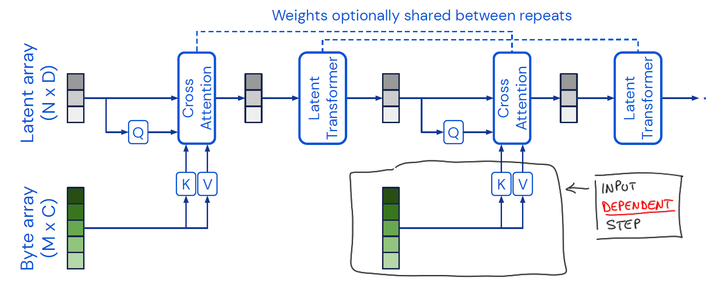
Perché il primo blocco è escluso
Alla prima iterazione i latenti sono "neutri" (init
𝒩(0, 0.02²)); dalla seconda in poi sono già "popolati" di informazione. Due regimi così diversi non possono condividere gli stessi pesi senza causare instabilità di training. Quindi CA₁ e LT₁ hanno pesi unici; CA₂...CA_T e LT₂...LT_T condividono ciascuno un set di pesi.
Formalmente è un RNN
Questa struttura ha una forma matematica precisa: il Perceiver con weight sharing è formalmente un RNN.
| Componente RNN | Nel Perceiver |
|---|---|
| Stato ricorrente | latent array L^(t) (dim fissa 512×1024) |
| Input (costante nel tempo) | byte array X |
| Funzione di transizione | il blocco shared (cross-att + latent transf) |
| Stato iniziale | L^(0) (parametro appreso) |
A differenza di un RNN classico, però, a ogni passo i latenti accedono all'intero input simultaneamente, non a un elemento alla volta. È un RNN che "rilegge tutto" ogni volta.
Precisazione sull'RNN
La ricorrenza "pura" a pesi condivisi vale da t=2 in poi: la prima iterazione (cross-att + latent transformer) usa pesi propri — è un passo di inizializzazione. Da t=2 a t=8 si ripete la stessa cella. Quindi è un RNN srotolato preceduto da un primo layer distinto, non un RNN puro fin dall'inizio.
L'effetto: meno parametri, più accuratezza
Il weight sharing non è solo un'ottimizzazione: è un regolarizzatore potente. Dal Tab. 7 del paper:
| Configurazione | Parametri | Train | Val | Gap |
|---|---|---|---|---|
| Senza weight sharing | ~326M | 87.7% | 72.9% | −14.8% (forte overfitting) |
| Con weight sharing | ~45M | 79.5% | 78.0% | −1.5% (no overfitting) |
⇒ ~7× meno parametri E +5.1% di accuracy. Senza sharing il modello memorizza troppo (gap train/val di 14.8%); con sharing il gap si riduce a 1.5%. Costringendo il modello a usare lo stesso "modulo di raffinamento" in tutte le iterazioni, si forza una generalizzazione migliore.
Cosa succede nel backward pass
Esempio numerico — gradienti di un peso condiviso
Sia w = 2.0 un peso condiviso tra le iterazioni t=2 e t=3. Nel backward ogni istanza produce un contributo:
\frac{∂L}{∂w^(2)} = −0.3, \frac{∂L}{∂w^(3)} = +0.1
I contributi si sommano (come in un RNN srotolato — BPTT, back-propagation through time):
\frac{∂L}{∂w_sh} = −0.3 + 0.1 = −0.2
Con learning rate η = 0.01:
w ← w − η · (−0.2) = 2.0 + 0.002 = 2.002
In PyTorch questo accade automaticamente: quando più nodi del grafo computazionale puntano allo stesso nn.Parameter, i gradienti calcolati in backward() vengono accumulati sul .grad del parametro.
Idea chiave
Il weight sharing trasforma il Perceiver in un RNN che raffina progressivamente i latenti, rileggendo l'input T volte con lo stesso "modulo di raffinamento". Agisce da regolarizzatore: meno parametri, niente overfitting, più accuratezza.
Output: pooling e classificatore
Dopo T iterazioni di raffinamento, dai latenti finali bisogna arrivare a una predizione. Tre passi semplici.
Input→
Fourier→
Latenti→
Cross-Att→
Latent Tr.→
×T→
Pooling
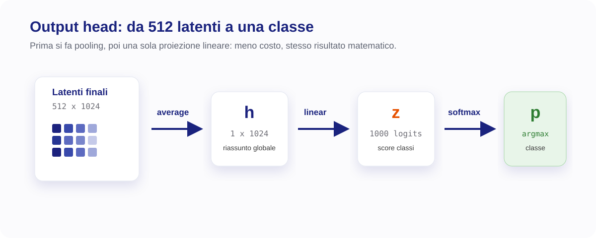
Rif. 1.4.13 · output head
N latenti → un vettore h → logit → probabilità
La media globale comprime le 512 righe latenti in un solo vettore, poi il classificatore produce le classi.
h ∈ R^1024
Pooling: ogni riga contribuisce alla media; poi i logit vengono normalizzati dalla softmax.
I tre passi
1. Global average pooling — media degli N latenti finali, riga per riga:
h = \frac{1}{N} · Σᵢ Lᵢ^(T) ∈ ℝ^D = ℝ^1024
Da N=512 vettori si ottiene un singolo vettore h di dimensione 1024.
2. Classificatore lineare — proietta nello spazio delle classi (1000 per ImageNet):
z = h · W_c + b_c, W_c ∈ ℝ^(1024 × 1000), b_c ∈ ℝ^1000 ⇒ z ∈ ℝ^1000 (logits)
3. Softmax + argmax — logit → probabilità → classe:
p_i = \frac{e^(z_i)}{Σⱼ e^(z_j)}, ŷ = argmax_i p_i
Due dettagli che il paper sottolinea
- Niente token [CLS]: a differenza di BERT/GPT, il Perceiver non usa un token speciale per il pooling. La media è la soluzione più diretta e non introduce nuovi parametri.
- Pooling prima della proiezione (fix del paper, App. F). Le due operazioni (pooling e proiezione lineare) commutano matematicamente, ma fare il pooling prima riduce il costo computazionale (proietti UN vettore invece di N) e stabilizza il training.
Idea chiave
Il pooling medio comprime gli N latenti in un solo vettore h ∈ ℝ^D, di dimensione fissa — qualunque sia N. Questo permette di collegare un classificatore lineare standard, identico per qualsiasi modalità di input. Massima generalità con minimo sforzo.
Dettagli di training (ImageNet)
L'architettura è chiara. Adesso vediamo come si allena. Tre dettagli importanti: ottimizzatore, schedule, e una scelta controintuitiva sul dropout.
L'ottimizzatore: LAMB
Il paper usa LAMB (You et al., 2020), non Adam. Citazione dal paper: il Perceiver è più facile da ottimizzare con LAMB rispetto ad Adam.
LAMB (Layer-wise Adaptive Moments for Batch training) è un ottimizzatore studiato per allenamenti con batch grandi: applica una normalizzazione per-layer del rate di aggiornamento, evitando che alcuni layer "saltino troppo" mentre altri restano fermi.
Schedule del learning rate: step decay
- Epoche totali: 120
- LR iniziale:
4 × 10⁻³ - Step decay: ÷10 alle epoche 84, 102, 114
- Niente cosine annealing, niente warmup
Schema "vecchia scuola": rate alto per la maggior parte del training, poi tre tagli netti verso la fine per fissare i pesi.
Rif. 1.6 · ImageNet training schedule
Learning rate — step decay animato
La testina avanza tra le 120 epoche: il LR parte da 4×10⁻³ e viene tagliato ÷10 alle epoche 84, 102, 114 (asse Y logaritmico).
Epoca 0 / 120 · LR = 4.000e-3
Niente dropout (e perché)
Sorprendentemente, il Perceiver non usa dropout. Citazione dal paper (App. C):
"We used dropout throughout the network in earlier experiments, but we found this led to degraded performance, so no dropout is used."
L'intuizione: il modello ha già forti pressioni regolarizzanti:
- Il latent bottleneck N≪M comprime brutalmente l'informazione.
- Il weight sharing riduce i parametri di ~7×.
- Il weight decay nell'ottimizzatore.
- La data augmentation aggressiva: RandAugment (Cubuk et al., 2020).
Aggiungere dropout sopra tutto questo soffoca la capacità del modello invece di aiutarlo.
Dimensione del modello
~45M parametri, paragonabile a una ResNet usata su ImageNet. Tutto sommato, non un modello enorme — e gran parte di quei parametri sta nella prima cross-attention + latent transformer (gli unici non condivisi).
Idea chiave
Training "essenziale": LAMB, 120 epoche con step decay, niente dropout, ~45M parametri. La regolarizzazione viene dall'architettura (bottleneck + weight sharing), non dai trucchi di training.
I risultati che "vendono" il Perceiver
Abbiamo visto tutta l'architettura e il training. Adesso: funziona? E cosa dimostra di unico rispetto agli altri modelli? Questo è il capitolo cruciale per l'esame.
ImageNet su pixel grezzi: competitivo senza prior 2D
Top-1 accuracy sulla validation set di ImageNet (Tab. 1 del paper):
| Modello | Top-1 | Note |
|---|---|---|
| ResNet-50 | 77.6% | conv 2D |
| ViT-B/16 | 77.9% | patch 2D |
| Transformer puro (64×64, FF) | 57.0% | costretto a downsamplare per O(M²) |
| Perceiver (FF) | 78.0% | 50.176 pixel grezzi, nessuna conv 2D |
Il Perceiver è competitivo con ResNet-50 e ViT-B/16 (entrambi con forte prior 2D) lavorando direttamente sui pixel grezzi. Il Transformer puro fallisce perché la complessità O(M²) lo costringe a comprimere l'input a 64×64, perdendo dettaglio.
Permutation invariance: il colpo di scena
Ed eccoci al risultato che il paper usa per argomentare la vera generalità del Perceiver. L'esperimento: mescolare i pixel di tutte le immagini con la stessa permutazione fissa. Un modello che codifica la posizione "nell'input" (via Fourier features) dovrebbe essere immune.
| Modello | ImageNet raw | ImageNet permuted | Δ |
|---|---|---|---|
| Perceiver (Fourier features) | 78.0 | 78.0 | 0.0 |
| Perceiver (learned position encoding) | 78.0 | 70.9 | −7.1 |
| ViT-B/16 (FF) | 76.7 | 61.7 | −15.0 |
| ResNet-50 (FF) | 73.5 | 39.4 | −34.1 |
Rif. 1.7 · permutation invariance
Pixel mescolati: Perceiver resta, ResNet crolla
Lo shuffle rompe il bias 2D della CNN; il Perceiver conserva la posizione dentro le Fourier features.
ResNet: 73.5 → 39.4 perché la vicinanza sulla griglia non significa più niente. Perceiver: 78.0 → 78.0.

Idea chiave — il risultato che vende il Perceiver
Il Perceiver con Fourier features è invariante alla permutazione: 78.0 → 78.0, zero calo. La ResNet crolla (73.5 → 39.4) perché la conv 2D assume che i vicini nella griglia siano correlati. La versione con learned position encoding scende a 70.9 ⇒ è la scelta delle Fourier features, non l'architettura in sé, a dare l'invarianza. Il paper usa questo per dimostrare che il Perceiver non sfrutta alcun bias 2D nascosto: è davvero general-purpose.
Altri domini, stesso modello
Senza modificare l'architettura, il Perceiver è stato applicato anche ad altre modalità:
| Dominio | Perceiver | Baseline specializzato |
|---|---|---|
| AudioSet (audio raw) | 38.3 mAP | CNN-14: 43.1 mAP |
| AudioSet (audio + video) | 43.5 mAP | — |
| ModelNet-40 (point cloud, solo xyz) | 85.7% | PointNet++: 91.9% |
Su ModelNet il gap è dovuto al fatto che il Perceiver usa solo le coordinate (x, y, z) grezze, senza feature geometriche specializzate. Conferma comunque la generalità.
Effetto del weight sharing (recap)
| Configurazione | Top-1 val | Parametri |
|---|---|---|
| Senza weight sharing | 72.9% | ~326M |
| Con weight sharing | 78.0% | ~45M |
Ablation: cosa conta davvero
Quali componenti del Perceiver sono indispensabili e quali sono dettagli? Gli ablation studies del paper rispondono. Sono il modo migliore per capire l'architettura "smontandola".
Attenzione: ablation su un modello ridotto
Per le ablation su N, D, ℓ, T il paper (App. B) usa un modello base intenzionalmente più piccolo del migliore di Tab. 1: senza weight sharing, 4 self-attention per blocco, 2 cross-attends, D=512, batch 64. Le accuracy stanno tra ~60% e ~76% — i trend qualitativi sono informativi, i numeri NON sono direttamente confrontabili col 78.0% del main model.
Rif. 1.8 · ablation studies
Accendi e spegni i componenti chiave
Non è un quiz: è una lettura visiva dei numeri più importanti del paper.
Senza latent transformer: 78.0 → 45.3. Il bottleneck deve anche far comunicare i latenti.
1. Il latent bottleneck è essenziale
Esperimento estremo: si rimuove completamente il latent transformer e si usano solo cross-attention ripetute. Questo elimina il bottleneck latente.
| Cross-attends (senza self-att.) | Accuracy |
|---|---|
| 4 | 39.4% |
| 8 | 45.3% |
| 12 | OOM (Out of Memory) |
| 8 con self-att. (modello completo) | 78.0% (+32.7%) |
Senza il latent transformer, il modello collassa: la mancanza di comunicazione tra i latenti dopo ogni cross-attention impedisce l'integrazione delle informazioni. Il bottleneck latente non serve solo a ridurre i costi: è il meccanismo che consente l'integrazione globale dell'informazione.
2. Interleaved > at-start (il modo di alternarle)
Si confrontano due strategie per le cross-attention:
- Interleaved: cross → self → cross → self → ... (pesi cross condivisi).
- At-start: tutte le cross applicate in sequenza prima del processo latente.
| Configurazione | Cross-attends T | Accuracy |
|---|---|---|
| Interleaved | 1 | 76.7% |
| Interleaved | 2 | 76.5% |
| Interleaved | 4 | 76.5% |
| Interleaved | 8 | 78.0% |
| At start | 8 | 73.7% |
Con 8 cross-attend tutte all'inizio, il modello deve comprimere l'intera informazione in un'unica lettura prolungata. Con interleaved, alterna fasi di "lettura" e "ragionamento" latente: ogni re-lettura avviene con latenti già parzialmente raffinati. Il modello deve ri-leggere l'input più volte in modo adattivo.
Attenzione ai numeri: il guadagno è non-monotono — da T=1 a T=4 cambia pochissimo (76.7 → 76.5), il vero salto arriva solo a T=8 (78.0). La lezione robusta è qualitativa: alternare lettura e ragionamento (interleaved) batte comunque il comprimere tutto in un colpo — già a una sola rilettura interleaved (76.7%) si fa meglio di 8 cross-attend at-start (73.7%).
3. Weight sharing = regolarizzatore
| Configurazione | Val (%) | Train (%) | Gap |
|---|---|---|---|
| Senza weight sharing (326M) | 72.9% | 87.7% | −14.8% |
| Con weight sharing (45M) | 78.0% | 79.5% | −1.5% |
Già visto al cap. 9, ma qui in numeri completi: il weight sharing è il più potente dei regolarizzatori del Perceiver. 7× meno parametri E +5.1% accuracy.
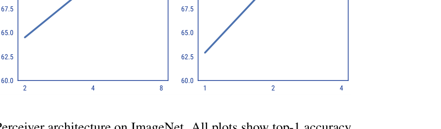
4. Fourier features: numero di bande
Più bande di frequenza catturano dettagli spaziali più fini. I risultati migliorano fino al valore di Nyquist (determinato dalla risoluzione dell'immagine). Oltre la frequenza di Nyquist non si ottiene alcun beneficio: le frequenze in più sono ridondanti.
f_max = \frac{min(H, W)}{2}
K indica quante bande campioniamo; f_max indica la frequenza massima raggiunta. Per ImageNet (224×224) il paper usa K=64 frequenze linearly spaced tra 1 e f_max=112, cioè il limite di Nyquist.
5. Effetti di N, D, ℓ
| Parametro | Effetto |
|---|---|
| N (latenti) | ↑ aiuta monotonamente (256→512→1024 entro l'intervallo testato) |
| D (dim canale) | ↑ aiuta fino a un punto; oltre, overfitting (senza weight sharing) |
| ℓ (self-att per blocco) | ↑ aiuta ma con rendimenti decrescenti (2→4 guadagno grande, 4→8 piccolo) |
Lezioni dagli ablation
- Il latent bottleneck è essenziale: senza, ≤45% accuracy.
- Interleaved > at-start: rileggere l'input più volte, con latenti raffinati progressivamente.
- Weight sharing: 7× meno params, +5.1% accuracy.
- Fourier: più bande fino a Nyquist, oltre non serve.
- Config ottimale ImageNet: N=512, D=1024, T=8 interleaved + weight sharing, ℓ=6, K=64.
Idea chiave
Smontando il Perceiver, tutto torna alle tre intuizioni: bottleneck per integrare globalmente, iterazione per raffinare, weight sharing per generalizzare. Tutto il resto è dettaglio implementativo.
Backward pass: i risultati chiave
Il backward pass del Perceiver è meccanico: chain rule applicata blocco per blocco. Però ci sono tre risultati che vale la pena conoscere a memoria, soprattutto per l'orale.
Ordine del backward
Il backward attraversa l'architettura in ordine inverso rispetto al forward:
Loss → Softmax → Classifier → Pooling → Latent Transformer → Cross-Attention → Input Embedding
Si parte dalla loss ℒ e si propaga indietro fino all'input, calcolando i gradienti per ogni parametro lungo la strada.
Rif. 1.5 · Backward Pass
Loss → Softmax → Classifier: poi si risale tutto
Il forward legge da sinistra a destra; il backward percorre lo stesso grafo al contrario e accumula gradienti.
Si parte da ∂ℒ e dal gradiente pulito p − y sui logit.
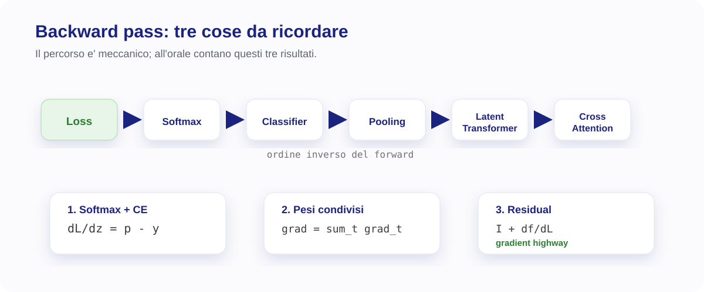
p - y, somma dei gradienti sui pesi condivisi e residual come percorso diretto del gradiente.Risultato 1: il celebre ∂ℒ/∂z = p − y
Il forward finale ha questa struttura:
Logits z → Softmax → p → Cross-Entropy con y_true → ℒ
Combinando softmax + cross-entropy, il gradiente rispetto ai logit è notevolmente pulito:
\frac{∂ℒ}{∂z} = p − y
cioè: la differenza tra la probabilità predetta p e il vettore one-hot della classe vera y. Nessuna derivata complicata, nessuna divisione, nessuna instabilità numerica. Per questo softmax e cross-entropy vanno insieme: derivate separate sarebbero un casino, combinate si semplificano.
Domanda d'esame quasi certa
Saper derivare (o almeno enunciare)
∂ℒ/∂z = p − y è una delle domande più frequenti in qualsiasi corso di deep learning con softmax+CE. Memorizzalo a livello automatico.
Risultato 2: gradienti dei pesi condivisi (BPTT)
Quando un peso W è usato in più blocchi del forward (caso del weight sharing del Perceiver), nel backward ogni istanza produce un contributo. Per il training corretto, questi contributi si sommano:
\frac{∂ℒ}{∂W_sh} = Σ_{t=2}^{T} \frac{∂ℒ}{∂W^(t)}
È lo stesso meccanismo di un RNN srotolato (BPTT, back-propagation through time). In PyTorch è automatico: quando più nodi del grafo computazionale puntano allo stesso nn.Parameter, i gradienti calcolati in backward() vengono accumulati sul .grad del parametro.
Esempio numerico con T=3 iterazioni
Sia w = 2.0 un peso condiviso tra t=2 e t=3. Nel backward:
\frac{∂ℒ}{∂w^(2)} = −0.3, \frac{∂ℒ}{∂w^(3)} = +0.1
Il gradiente effettivo è la somma:
\frac{∂ℒ}{∂w_sh} = −0.3 + 0.1 = −0.2
Con learning rate η = 0.01:
w ← 2.0 − 0.01 · (−0.2) = 2.002
Attenzione: fare l'aggiornamento due volte (una con −0.3 e una con +0.1) darebbe un risultato diverso e sbagliato. L'accumulazione deve avvenire prima del passo dell'ottimizzatore, non dopo.
Pesi del primo blocco: non partecipano alla somma
I pesi di CA₁ e LT₁ sono parametri separati (cap. 9): i loro gradienti stanno in un accumulatore diverso, non si sommano con quelli dei blocchi shared, e vengono aggiornati in modo indipendente.
Risultato 3: residual connection = "gradient highway"
Una residual connection è L' = L + f(L). Nel backward:
\frac{∂ℒ}{∂L} = \frac{∂ℒ}{∂L'} · (I + \frac{∂f}{∂L})
Il termine identità I garantisce che il gradiente trovi sempre un "percorso diretto" indietro, anche se la parte ∂f/∂L si attenua o esplode. Per questo le ResNet (e il Perceiver) riescono ad addestrare reti molto profonde senza vanishing gradient.
Cosa NON memorizzare
Le derivazioni dettagliate dei gradienti di:
- LayerNorm (3 termini: 1σ+ε volte la media e tutto il calcolo della deviazione)
- Scaled dot-product attention rispetto a Q, K, V (tre formule lunghe)
- Output projection W_o, MLP W₁, W₂
Sono chain rule applicata meccanicamente. Sapere che si fanno e capire il flow conta più che ricordare ogni formula. Per memorizzare: forward + i tre risultati sopra bastano.
Le derivazioni complete (per chi le vuole)
Per completezza con il PDF (§1.5), ecco i due passaggi più "chiesti". Sono opzionali: aprili solo se vuoi il dettaglio — non servono per capire il flusso.
Backward della LayerNorm
Con Ĥ = (H − μ)/(σ + ε) e H̃ = γ·Ĥ + β, il gradiente verso l'input H di ogni riga (dimensione D) è:
∂ℒ/∂H_{ij} = \frac{1}{σ_i + ε}(∂ℒ/∂Ĥ_{ij} − \frac{1}{D} Σ_k ∂ℒ/∂Ĥ_{ik} − Ĥ_{ij} · \frac{1}{D} Σ_k ∂ℒ/∂Ĥ_{ik} · Ĥ_{ik})
I due termini sottratti rimuovono la media del gradiente e la sua proiezione su Ĥ: è il "prezzo" dei vincoli media≈0 / varianza≈1 della normalizzazione. I parametri appresi:
∂ℒ/∂γ_j = Σᵢ ∂ℒ/∂H̃_{ij} · Ĥ_{ij} ∂ℒ/∂β_j = Σᵢ ∂ℒ/∂H̃_{ij}
Backward della scaled dot-product attention (softmax)
La softmax è applicata per riga; la sua jacobiana è ∂A_{ij}/∂S_{ik} = A_{ij}(δ_{jk} − A_{ik}). Applicando la chain rule e semplificando con Σⱼ A_{ij} = 1 si ottiene la forma compatta:
∂ℒ/∂S_{ik} = A_{ik}(∂ℒ/∂A_{ik} − Σⱼ A_{ij} · ∂ℒ/∂A_{ij})
Ogni gradiente su S è quello su A "corretto" sottraendo la media pesata dei gradienti della stessa riga — la correzione che tiene il gradiente ortogonale al vincolo Σⱼ A_{ij} = 1. Da ∂ℒ/∂S si risale poi a:
∂ℒ/∂Q = (∂ℒ/∂S) K / √d_{QKV} ∂ℒ/∂K = (∂ℒ/∂S)ᵀ Q / √d_{QKV} ∂ℒ/∂V = Aᵀ (∂ℒ/∂F)
Output projection e MLP
Sono backward lineari standard: per Y = X·W + b si ha ∂ℒ/∂W = Xᵀ(∂ℒ/∂Y), ∂ℒ/∂X = (∂ℒ/∂Y)Wᵀ, ∂ℒ/∂b = somma per righe di ∂ℒ/∂Y. La GELU dell'MLP aggiunge solo la propria derivata elemento-per-elemento. Niente di specifico del Perceiver.
Idea chiave
Del backward del Perceiver, ricorda tre cose: (1) ∂ℒ/∂z = p − y per softmax+CE; (2) i gradienti dei pesi condivisi si sommano (BPTT); (3) le residual creano un "gradient highway" che permette le reti profonde.
Perceiver IO: dal classificatore agli output generici
Il Perceiver originale è forte come encoder generale, ma la testa finale è ancora limitata: pooling sui latenti e classificazione globale. Perceiver IO conserva lo stesso encoder, ma aggiunge un decoder a cross-attention che permette output di forma arbitraria.
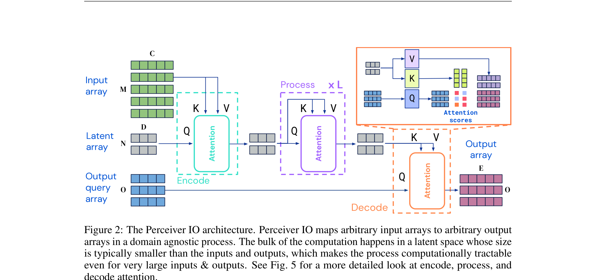
Il limite del Perceiver originale
Nel modello originale l'output è un vettore globale: si fa media dei latenti finali e poi una proiezione lineare. Questo va bene per classificazione, ma è poco naturale per task in cui l'output ha molte posizioni: segmentazione, predizione per pixel, language modeling, optical flow, risposte multiple o output multimodali.
Perceiver originale: input X → latenti Z → average pooling → logits
Il problema non è l'encoder: la compressione in latenti funziona. Il problema è la testa, che butta via la struttura dell'output.
La soluzione: output queries
Perceiver IO introduce un insieme di output queries. Ogni query rappresenta una posizione, un token, un pixel, un punto 3D o una richiesta specifica del task. Il decoder usa queste query per interrogare i latenti finali.
Q = output queries, K,V = latenti finali, output = CrossAttention(Q, K, V)
È la stessa idea della cross-attention del Perceiver, ma girata verso l'output: prima i latenti leggono l'input, poi le query di output leggono i latenti.
Rif. 2.5 · Decode Module e Output Queries
Le query decidono la forma dell'output
Scegli una richiesta: gli stessi latenti vengono letti in modo diverso da query diverse.
Una query globale legge tutti i latenti e produce un vettore di logit.
Encode, process, decode
| Fase | Cosa fa | Forma concettuale |
|---|---|---|
| Encode | Input molto grande → latenti fissi | X(M×C) → Z(N×D) |
| Process | Self-attention profonda nello spazio latente | Z → Z' |
| Decode | Output queries leggono i latenti | Y_queries → Y_outputs |
Encode / Process / Decode: stessa cella attention
Negli appunti il punto sottile è che Perceiver IO non inventa tre reti diverse: cambia chi fa da query e chi fa da memoria. La forma del sottoblocco resta pre-norm, attention, residual, MLP, residual.
| Modulo | Query | Key/Value | Perché serve |
|---|---|---|---|
| Encode | Latenti | Input | Comprime M elementi in N latenti. |
| Process | Latenti | Latenti | Ragiona in profondità nello spazio compatto. |
| Decode | Output queries | Latenti finali | Produce output con forma scelta dal task. |
Y = X_q + CrossAttention(LN(X_q), LN(X_kv))
Y = Y + MLP(LN(Y))
Questa lettura aiuta molto all'orale: il Perceiver separa memoria interna e domande di output. Cambiando le query finali cambia il task, non il backbone.
Idea chiave
Perceiver IO non cambia il cuore del Perceiver: cambia il modo di estrarre informazione dai latenti. Il decoder a cross-attention rende l'output flessibile senza rinunciare al latent bottleneck.
Output queries: come il decoder chiede cosa produrre
Le output queries sono il ponte tra una rappresentazione latente compressa e un output con struttura propria. Non sono una decorazione: definiscono quanti output vogliamo e che significato ha ciascun output.
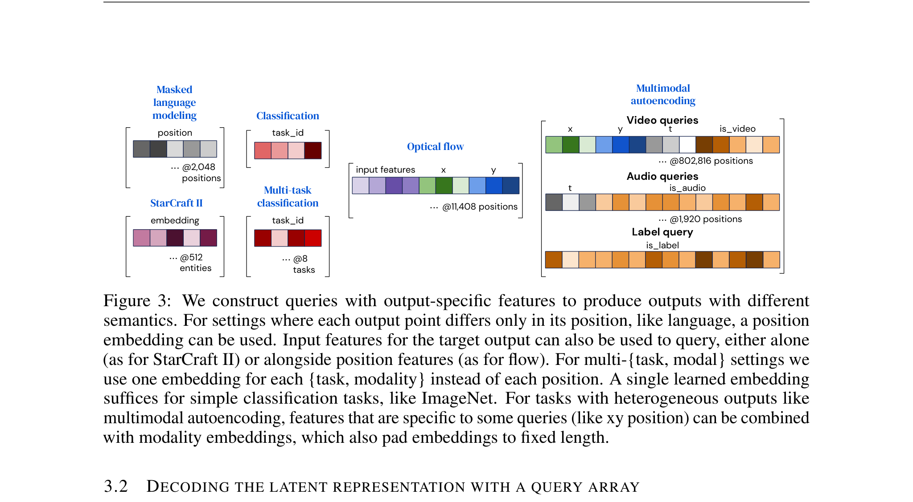
Rif. 2.5 · output queries
Encoder e latenti non cambiano
Seleziona il task: cambia la griglia di query e cambia la forma dell'output, ma la memoria latente resta la stessa.
Latenti finali N×D
cross-attention O×N
Output queries O
O = 1
vettore logit
Una query globale legge la memoria e produce un vettore di classi.
Perché non basta proiettare i latenti?
I latenti finali sono un riassunto compatto dell'input, ma non hanno necessariamente la stessa cardinalità dell'output. Se devo produrre una classe, un vettore basta. Se devo produrre un'etichetta per ogni pixel, ho bisogno di una richiesta per ogni pixel. Se devo produrre token, ho bisogno di richieste per posizioni di token.
Tipi di query
- Query apprese: utili quando l'output ha posizioni fisse ma non direttamente geometriche.
- Query derivate da coordinate: utili per immagini, video, point cloud, optical flow; la query contiene posizione e contesto del punto da predire.
- Query derivate dal task: utili quando l'output dipende da una richiesta esterna, per esempio una posizione temporale o una modalità specifica.
Esempi di task-specific queries negli appunti
Nel Perceiver IO le query non sono tutte uguali: sono costruite in modo da dire al decoder che tipo di risposta deve produrre.
| Task | Query | Output |
|---|---|---|
| Classificazione | Una query globale o un task id | Un vettore di logit |
| Masked language modeling byte-level | Posizioni dei byte mascherati | Distribuzione sui byte |
| Optical flow | Coordinate e feature del punto | Vettore di movimento |
| Autoencoding multimodale | Query con indicatori video, audio o label | Ricostruzione della modalità richiesta |
La frase da ricordare: le task-specific queries definiscono la forma dell'output; i latenti restano la memoria condivisa.
Decoder a cross-attention
Nel decoder a cross-attention, le query di output diventano Q, mentre i latenti finali forniscono K e V. La matrice di attenzione ha dimensione O × N, dove O è il numero di output richiesti e N è il numero di latenti.
Attention decoder: softmax(\frac{Q_out K_latent^T}{sqrt(d)}) V_latent
Esempio intuitivo
Per una classificazione globale puoi usare una sola output query. Per una segmentazione 224×224 puoi usare una query per posizione. Per un modello byte-level puoi usare query di token. L'encoder resta lo stesso: cambia la griglia di domande poste al latent space.
Esempio dimensionale (segmentazione 224×224)
O = 50.176 query (una per pixel), latenti N=512 × D=1024. Le query producono Q_out ∈ ℝ^(50.176 × D_q); K e V vengono dai latenti, quindi la matrice di attenzione del decoder è 50.176 × 512 e l'output è 50.176 × n_classi. Nota l'asimmetria opposta all'encoder: qui sono le query a essere tante (O ≫ N), non l'input.
Come si costruisce una query per ogni task (dal progetto)
La forma della query e il numero O sono specifici del task; i latenti restano identici. Esempi concreti (Jaegle et al. 2022, Fig. 3, e dal mio progetto):
- MLM byte-level (WikiText-103):
O = 2048query, una per posizione byte, learned position-dependent di dimE = 768. Per ogni posizione mascherata il decoder produce un vettore → layer lineare → softmax sul vocabolario byte. - GLUE single-task:
O = 1query apprendibile (E = 768), l'equivalente del token[CLS]di BERT ma esterno ai latenti; una MLP 2-layer ne ricava i logit di classe. - GLUE multi-task (8 task insieme):
O = 8query, ognuna con un embeddingtask_id; una MLP per task. È la configurazione migliore (81.8 avg GLUE nel paper). - Optical flow: la query combina le feature del punto e le sue coordinate
(x, y). - Multimodal autoencoding: un set di query per modalità (video: una per pixel; audio: una per sample; label: una) con indicatori
is_video/is_audio/is_label→O ≈ 804.737totali.
Morale: cambiando solo la costruzione delle query (numero O e dimensione E), lo stesso encoder-processor produce token, pixel, etichette o vettori di flusso.
Idea chiave
Le output queries sono il modo con cui Perceiver IO dice: "voglio questo output qui". I latenti contengono l'informazione; le query decidono come leggerla.
Implementazione pratica: forme, scelte e punti fragili
Questa parte traduce la teoria in controlli pratici. È pensata per evitare gli errori più comuni quando si implementa Perceiver o Perceiver IO in PyTorch.
Checkpoint delle forme
| Oggetto | Forma | Controllo mentale |
|---|---|---|
| Input arricchito | B × M × C_tot | C_tot = RGB + Fourier |
| Latenti | B × N × D | replicati sul batch, appresi come parametri |
| Q cross-att | B × N × d_QKV | proviene dai latenti |
| K,V cross-att | B × M × d_QKV | provengono dall'input |
| Mappa attenzione | B × N × M | rettangolare, non M × M |
Rif. 3 · shape debugging
Tracer parametrico delle forme
Muovi M, N, D e C_tot: la tabella evidenzia subito dove compare M e dove invece il costo resta nello spazio N.
Controllo rapido: se trovi una matrice M×M, stai facendo self-attention sull'input.
La scelta di d_QKV
Nel paper originale, per ImageNet, la dimensione interna della cross-attention è scelta come d_QKV = min(D, C_tot). Con D = 1024 e C_tot = 261, si ottiene d_QKV = 261. Questo evita di espandere inutilmente ogni pixel a 1024 dimensioni prima dell'attention.
d_QKV = min(D, C_tot) = min(1024, 261) = 261
Shape debugging
Quando qualcosa non torna, il debugging più efficace è stampare le forme dopo ogni blocco, non guardare la loss. La loss arriva troppo tardi; gli errori veri spesso sono nella direzione di Q/K/V, in un transpose sbagliato o in un broadcast dei latenti fatto sull'asse errato.
- Se la mappa è
M × M, hai implementato self-attention sull'input, non Perceiver. - Se i latenti dipendono direttamente dal singolo input prima della cross-attention, non sono più parametri appresi condivisi.
- Se il modulo condiviso viene istanziato dentro il loop, non stai facendo weight sharing.
- Se la residual somma tensori con feature diverse, manca la proiezione di output.
Training con risorse limitate
Il paper lavora con batch grandi e molte TPU; nel progetto o in una riproduzione locale conviene dichiarare esplicitamente che il confronto è qualitativo sui trend, non assoluto sui numeri.
- Batch più piccolo: se non entra in memoria, si usa
gradient accumulationper simulare un batch effettivo più grande. - mixed precision:
torch.cuda.ampriduce memoria e tempo, mantenendo stabile il training se loss scaling e clipping sono gestiti bene. - Dataset ridotti: CIFAR-10 o subset ImageNet servono per verificare convergenza, shape e ablation, non per replicare i numeri del paper.
- Confronto corretto: dire "il trend è coerente" è più onesto che confrontare direttamente una GPU con 64 TPU.
effective_batch = batch_gpu · accumulation_steps
Fonte interna
appunti_ml_definitivo.tex: forward pass, appunti sul paper originale, note implementative e confronto con il progetto.
Checklist concettuale finale
Questa non è una sezione di esercizi: è una mappa compatta per controllare di avere in testa tutto il filo logico della lezione.
Rif. 1.4 · Forward pass
Ripasso animato del forward pass
L'highlight scorre da solo lungo gli stadi: a ogni passo, una frase ti ricorda cosa succede.
Tutto diventa una matrice M×C, nessuna struttura domain-specific.
Il filo in una pagina
- Il Transformer standard è generale ma paga
O(M²)sulla self-attention dell'input. - Il Perceiver introduce un latent bottleneck:
Minput grandi,Nlatenti fissi. - La cross-attention fa leggere l'input ai latenti:
Qdai latenti,K,Vdall'input. - Il latent transformer ragiona in profondità solo su
N, quindi il costo della profondità non cresce conM. - Il weight sharing rende il blocco iterativo simile a un RNN e riduce i parametri.
- Perceiver IO aggiunge output queries e un decoder a cross-attention per produrre output arbitrari.
Cosa devi saper spiegare bene
- Perché
O(MN)è il punto centrale e perchéN << M. - Perché le Fourier features si concatenano all'input invece di essere sommate.
- Perché i latenti sono parametri appresi, non token dell'input.
- Perché il decoder di Perceiver IO usa output queries.
- Perché residual connections e pre-norm rendono addestrabile un modello profondo.
Domande d'esame: risposte telegrafiche
| Domanda | Risposta corta |
|---|---|
| Perché il Perceiver riduce il costo? | Sostituisce self-attention su M input con cross-attention N×M, dove N << M. |
| Cosa sono i latenti? | Parametri appresi, condivisi tra esempi, usati come memoria compatta interrogabile dall'input. |
| Da dove vengono Q, K, V nella cross-attention? | Q dai latenti; K,V dall'input arricchito con Fourier features. |
| Perceiver vs Perceiver IO? | Il primo fa pooling e classificazione; IO aggiunge un decoder a cross-attention con output queries. |
| Perché niente dropout? | Bottleneck latente, weight sharing, weight decay e augmentation già regolarizzano molto. |
Idea chiave
La frase più compatta è: il Perceiver separa la dimensione dell'input dalla profondità del calcolo. Tutto il resto — Fourier features, latenti, cross-attention, weight sharing, output queries — serve a rendere concreta questa separazione.
Riferimenti laterali
Softmax, Fourier features, Cross-Entropy, LayerNorm, attivazioni, residual e ottimizzatori non sono più nel percorso principale: li trovi come riferimenti teorici nella barra laterale e nel pannello a destra.
Riferimento: Softmax
La softmax trasforma logit arbitrari in una distribuzione di probabilità. Nel Perceiver compare sia dentro l'attention, dove normalizza i pesi, sia alla fine della classificazione.
p_i = \frac{e^(z_i)}{Σ_j e^(z_j)}
Le proprietà da ricordare sono tre: ogni probabilità è positiva, la somma è 1, e l'ordine dei logit viene preservato. Se un logit è più grande, riceve probabilità maggiore.
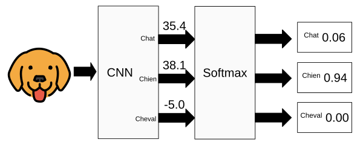
Temperatura
p_i = \frac{e^(\frac{z_i}{T})}{Σ_j e^(\frac{z_j}{T})}
- T alta: distribuzione più piatta, modello meno sicuro.
- T bassa: distribuzione più concentrata, quasi argmax.
- T = 1: softmax standard.
Rif. A · Softmax
Temperatura interattiva
Stessi logit, distribuzione diversa: abbassa T per rendere il modello più sicuro, alzala per appiattire.
T = 1: softmax standard.
Stabilità numerica
Per evitare overflow si sottrae il massimo logit prima degli esponenziali. Il risultato è identico, ma gli esponenti non esplodono.
m = max_j(z_j)
p_i = \frac{e^(z_i - m)}{Σ_j e^(z_j - m)}
Collegamento al Perceiver
Nell'attention la softmax trasforma QKT√d in pesi per riga. Nella testa finale trasforma i logit ImageNet in probabilità sulle classi.
Riferimento: Fourier Features e Positional Encoding
L'attention è cieca alla posizione: senza encoding posizionale, una permutazione degli elementi lascia il contenuto indistinguibile. Le Fourier features risolvono questo problema codificando coordinate continue a molte frequenze.
Il problema
Self-attention e cross-attention operano su insiemi di vettori. Da sole non sanno che un pixel è in alto a sinistra o in basso a destra. Il Perceiver quindi concatena le coordinate codificate all'input.
z = [contenuto || positional encoding]
Rif. B · Fourier feature encoding
Onde a frequenze multiple
Ogni banda è un seno a frequenza doppia della precedente. Aumenta K per vedere come più bande arricchiscono la codifica; passa a "Somma" per il segnale combinato.
Formula pratica nel Perceiver
Per ogni dimensione spaziale si usano seno e coseno a frequenze linearly spaced, più la coordinata grezza. Per immagini 2D con K = 64 bande e C = 3 canali RGB:
C_tot = C + d · (2K + 1)
C_tot = 3 + 2 · (2 · 64 + 1) = 261
Perché concatenare e non sommare?
La somma mescola colore e posizione nello stesso spazio. La concatenazione conserva separatamente contenuto e coordinate, lasciando alla cross-attention il compito di imparare come combinarli.
Collegamento al Perceiver
La permutation invariance del Perceiver su ImageNet permutato dipende proprio da questa scelta: le Fourier features viaggiano insieme al pixel.
Riferimento: Cross-Entropy Loss
La cross-entropy misura quanto la distribuzione predetta si discosta dalla classe corretta. Per classificazione multi-classe è la loss naturale insieme a softmax.
L = - Σ_i y_i log(p_i)
Se y è one-hot, resta solo il termine della classe corretta:
L = -log(p_c)
Quindi la loss è piccola quando il modello assegna probabilità alta alla classe corretta, e cresce rapidamente quando quella probabilità è bassa.
Rif. C · Cross-Entropy Loss
Loss = -log(p_c)
Muovi la probabilità assegnata alla classe corretta: la loss esplode quando il modello è sicuro della cosa sbagliata.
L = -log(0.70) ≈ 0.357
Perché il logaritmo
- Massima verosimiglianza: minimizzare
-log(p_c)equivale a massimizzare la probabilità assegnata alla classe vera. - Penalità asimmetrica: sbagliare con confidenza costa molto:
-log(0.01) ≈ 4.605; essere quasi corretti costa poco:-log(0.99) ≈ 0.010. - Segnale utile anche quando il modello è molto sbagliato: la loss cresce rapidamente quando
p_c → 0, quindi il gradiente non diventa subito inutile.
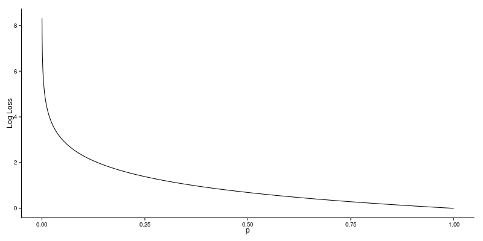
-log(p): vicino a 1 la loss è quasi nulla, vicino a 0 cresce molto rapidamente.Perché softmax + cross-entropy è speciale
La derivata rispetto ai logit si semplifica in modo pulitissimo:
\frac{∂L}{∂z} = p - y
Questa è una delle formule più importanti per capire il backward della classificazione: il gradiente è semplicemente errore predetto meno target vero.
Esempio numerico completo
Classificazione a 3 classi, classe vera = 2. Se p = [0.1, 0.7, 0.2] e y = [0, 1, 0], la somma collassa sul secondo termine.
L = -(0·log(0.1) + 1·log(0.7) + 0·log(0.2)) = -log(0.7) ≈ 0.357
\frac{∂L}{∂z} = p - y = [0.1, -0.3, 0.2]
Il gradiente negativo sulla classe corretta dice all'ottimizzatore di aumentare quel logit; i gradienti positivi sulle altre classi dicono di ridurle.
Perché non usare MSE per classificazione
L'MSE sembra naturale perché confronta predizione e target, ma con softmax o sigmoid può produrre gradienti piccoli proprio quando la predizione è molto sbagliata. La cross-entropy evita questo problema perché lavora sulla log-likelihood della classe vera.
MSE = \frac{1}{K} Σ_k (p_k - y_k)^2
Cross-Entropy = -log(p_c)
Per questo, nelle teste di classificazione del Perceiver, softmax e cross-entropy sono la coppia standard.
Collegamento al Perceiver
Dopo pooling e classificatore lineare, il Perceiver usa cross-entropy standard. Il gradiente p - y si propaga poi attraverso pooling, latent transformer, cross-attention e input embedding: è il primo segnale numerico che attraversa tutta l'architettura al backward.
Riferimento: Layer Normalization
LayerNorm normalizza ogni campione lungo le sue feature. È indipendente dalla batch size, quindi è perfetta per Transformer, sequenze e architetture come Perceiver.
μ = \frac{1}{D} Σ_{j=1}^{D} x_j
σ = \sqrt{\frac{1}{D} Σ_{j=1}^{D} (x_j - μ)^2 + ε}
LN(x)_j = γ_j · \frac{x_j - μ}{σ} + β_j
Cosa fa riga per riga
LayerNorm non guarda altri esempi del batch. Prende una riga alla volta, per esempio un pixel embedded o un latente, e lavora solo sulle sue feature.
- Calcola la media
μdelle feature della riga. - Calcola la deviazione standard
σ, conεper evitare divisioni instabili. - Standardizza ogni feature: sottrae la media e divide per la scala.
- Applica due parametri appresi per feature:
γridà ampiezza,βridà offset.
Rif. D · Layer Normalization
LayerNorm riga per riga
Stesso esempio degli appunti: x=[1,2,3,4]. Guarda media, varianza e valori normalizzati.
muLayerNormμ = 2.5
varianzaσ² = 1.25
output[-1.342, -0.447, 0.447, 1.342]
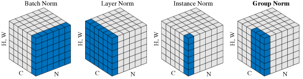
LayerNorm vs BatchNorm
| Metodo | Statistiche | Quando funziona bene |
|---|---|---|
| BatchNorm | lungo il batch | CNN con batch grandi e stabili |
| LayerNorm | lungo le feature del singolo campione | Transformer, batch piccoli, sequenze variabili |
LayerNorm esempio numerico
x = [1, 2, 3, 4], D = 4
Per semplicità prendiamo γ = 1, β = 0 ed ε = 0. La media è 2.5; la varianza è 1.25; la deviazione standard è circa 1.118.
μ = \frac{1 + 2 + 3 + 4}{4} = 2.5
σ^2 = \frac{(1-2.5)^2 + (2-2.5)^2}{4}
+ \frac{(3-2.5)^2 + (4-2.5)^2}{4}
σ^2 = \frac{2.25 + 0.25 + 0.25 + 2.25}{4} = 1.25
σ = sqrt(1.25) ≈ 1.118
LN(x) ≈ [-1.342, -0.447, 0.447, 1.342]
Il risultato ha media circa 0 e varianza circa 1. Poi γ e β permettono alla rete di imparare quanto mantenere o modificare questa normalizzazione.
Dimensioni dei parametri γ e β nel Perceiver
LayerNorm non cambia mai la forma del tensore: riceve N × F e restituisce N × F. Cambia solo la scala interna dei valori.
| LayerNorm | Input | γ, β | Output |
|---|---|---|---|
| Input embedding | 50176 × 261 | 261 valori ciascuno | 50176 × 261 |
| Latent array | 512 × 1024 | 1024 valori ciascuno | 512 × 1024 |
Quindi una LN sui pixel non ha un vettore γ diverso per ogni pixel: ha un solo vettore lungo quanto le feature, riusato su tutte le righe.
Pre-norm nel Perceiver
Post-norm: y = LN(x + f(x))
Pre-norm: y = x + f(LN(x))
Il Perceiver usa il pattern pre-norm: il sottoblocco riceve input normalizzato, ma la residual connection resta un percorso pulito per il gradiente.
Collegamento al Perceiver
Nel Perceiver ci sono molte LayerNorm: prima dell'attention e prima dell'MLP, sia nel cross-attention block sia nel latent transformer. Negli appunti viene stimato un ordine di circa 112 normalizzazioni/residual sui blocchi completi: senza pre-norm il training profondo sarebbe molto più fragile.
Riferimento: Funzioni di Attivazione
Le attivazioni introducono non-linearità. Senza di esse, una rete profonda sarebbe ancora una trasformazione lineare unica.
ReLU
ReLU(x) = max(0, x)
ReLU'(x) = 1 se x > 0, 0 se x ≤ 0
È semplice, veloce e non satura per valori positivi. Il limite è il problema dei neuroni morti: se un neurone resta sempre nella zona negativa, il gradiente è zero e quel neurone non si aggiorna più.
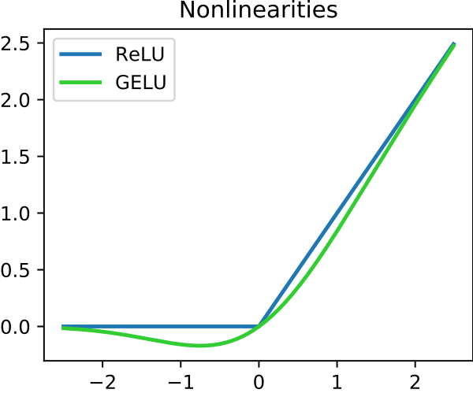
Rif. E · Funzioni di Attivazione
Punto mobile sulle attivazioni
Muovi x e confronta cosa lasciano passare ReLU, GELU, sigmoid e tanh.
GELU
GELU(x) = x · Φ(x)
Φ(x) = 0.5 · (1 + erf(\frac{x}{sqrt(2)}))
GELU(x) ≈ 0.5x · (1 + tanh(sqrt(\frac{2}{π}) · (x + 0.044715x^3)))
GELU è usata in GPT-2 e quindi nel latent transformer del Perceiver. Rispetto a ReLU è più liscia: invece di azzerare tutto ciò che è negativo, attenua gradualmente. L'interpretazione utile è: x viene mantenuto con probabilità legata alla gaussiana standard.
Sigmoid e Tanh: perché compaiono meno qui
Sigmoid e tanh sono fondamentali nelle RNN e nelle gate, ma nei Transformer moderni saturano troppo facilmente per essere la scelta principale negli MLP interni.
sigmoid(x) = \frac{1}{1 + e^{-x}}
tanh'(x) = 1 - tanh(x)^2
| Funzione | Range | Derivata/gradiente | Uso tipico |
|---|---|---|---|
| ReLU | [0, +∞) | 0 o 1 | CNN, MLP classici |
| GELU | ≈(-0.17, +∞) | smooth | GPT, BERT, Perceiver |
| Sigmoid | (0, 1) | satura agli estremi | gate, output binario |
| Tanh | (-1, 1) | satura agli estremi | RNN/LSTM classiche |
Perché conta nei Transformer
L'MLP interno ai blocchi attention espande la dimensione, applica una non-linearità e poi proietta indietro. Nel Perceiver, questo MLP serve a dare capacità espressiva ai latenti dopo l'attention.
MLP(x) = W2 · GELU(W1 x + b1) + b2
Perché GELU invece di ReLU nel Perceiver
- Gradienti più fluidi: non c'è il punto angoloso di ReLU in
x = 0. - Meno neuroni morti: valori leggermente negativi non vengono tagliati brutalmente a zero.
- Standard dei Transformer: GPT-2 e BERT hanno reso GELU la scelta pratica per blocchi attention + MLP.
- MLP 4D: nel Perceiver l'MLP espande da
Da4D, applica GELU e torna aD.
Collegamento al Perceiver
La parte attention sposta informazione; l'MLP con GELU la rielabora localmente su ogni latente. Entrambe servono.
Riferimento: Residual Connections
Le residual connections permettono di addestrare reti molto profonde facendo imparare a ogni blocco una correzione rispetto all'identità, non l'intera trasformazione da zero.
Residual learning
Invece di chiedere al blocco di imparare direttamente la trasformazione desiderata H(x), gli facciamo imparare il residuo F(x) = H(x) - x. Se il blocco non serve, può imparare quasi zero e lasciare passare l'identità.
H(x) = F(x) + x
F(x) = H(x) - x
se F(x) ≈ 0, allora y ≈ x

y = F(x) + x.
Rif. F · residual connections
gradiente con skip ON
Confronta il percorso all'indietro: senza skip il segnale si attenua; con skip resta una strada identità.
F(x)
+ x
Con residual: ∂L/∂x contiene il termine identità I, quindi il gradiente non dipende solo dalla catena di Jacobiane.
Il problema: degradazione nelle reti profonde
In teoria aggiungere strati non dovrebbe peggiorare una rete: i nuovi strati potrebbero imparare l'identità. In pratica, senza residual, imparare l'identità attraverso molti layer non lineari è difficile e il training degrada.
Perché funziona: flusso del gradiente
Senza residual: \frac{∂L}{∂x} = \frac{∂L}{∂y} · \frac{∂F}{∂x}
Con residual: \frac{∂L}{∂x} = \frac{∂L}{∂y} · (\frac{∂F}{∂x} + I)
Il termine I è il percorso diretto del gradiente. Anche se la trasformazione F attenua il gradiente, la skip connection mantiene aperta una strada.
Esempio numerico: confronto flusso del gradiente
Supponiamo tre blocchi, ciascuno con Jacobiana equivalente a 0.5I. Senza residual, il gradiente viene moltiplicato ripetutamente; con residual, ogni blocco aggiunge il percorso identità.
Senza residual: (0.5)^3 · g = 0.125g
Con residual: (0.5 + 1)^3 · g = 3.375g
Con 56 strati senza residual: (0.5)^56 ≈ 1.4 · 10^{-17}
Questo non significa che il gradiente debba esplodere: nella rete reale i termini si bilanciano. Il punto da ricordare è che la skip connection evita che il prodotto di molte Jacobiane azzeri il segnale.
Pattern pre-norm nel Perceiver
y = x + f(LN(x))
La LayerNorm stabilizza l'input del sottoblocco, mentre la residual preserva informazione e gradiente. È il pattern ripetuto in cross-attention, latent transformer e decoder IO.
Dove sono le residual nel Perceiver
Ogni modulo attention segue lo stesso schema: LayerNorm prima del sottoblocco, attention o MLP, poi somma residua. Questo accade nel cross-attention iniziale, nei blocchi self-attention latenti e nel decoder di Perceiver IO.
Attention block: y = x + Attention(LN(x))
MLP block: y = x + MLP(LN(x))
Negli appunti il conto porta a un ordine di circa 112 residual connection nei blocchi completi. È uno dei motivi per cui il latent array può essere raffinato molte volte senza perdere il segnale iniziale.
Collegamento al Perceiver
Il Perceiver è profondo e iterativo: senza residual, i gradienti non raggiungerebbero stabilmente i blocchi iniziali e il latent array sarebbe molto più difficile da addestrare.
Riferimento: Ottimizzatori
Gli ottimizzatori trasformano i gradienti in aggiornamenti dei pesi. Per il Perceiver questa parte è importante perché il paper usa LAMB, non un semplice SGD.
SGD (Stochastic Gradient Descent)
W_{t+1} = W_t - η ∇W L(W_t)
È l'aggiornamento più semplice: si va nella direzione opposta al gradiente con learning rate globale η. È robusto ma sensibile alla scelta del learning rate e può oscillare nelle valli strette.
- η troppo alto: il training può divergere o saltare oltre il minimo.
- η troppo basso: converge lentamente e può restare bloccato in zone piatte.
- Stesso η per tutti i parametri: non distingue pesi con gradienti frequenti da pesi aggiornati raramente.
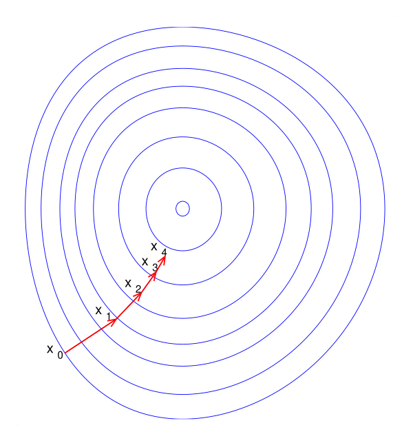
SGD con Momentum
v_t = β v_{t-1} + ∇W L(W_t)
W_{t+1} = W_t - η v_t
Il momentum accumula una velocità nelle direzioni coerenti e riduce le oscillazioni. Con β = 0.9, la direzione precedente pesa molto e rende il percorso più liscio.
Intuizione
Nelle valli strette SGD rimbalza da una parete all'altra. Il momentum somma direzioni ripetute e cancella parte delle oscillazioni laterali. Con
β = 0.9, l'influenza di un gradiente passato decresce come β^k.
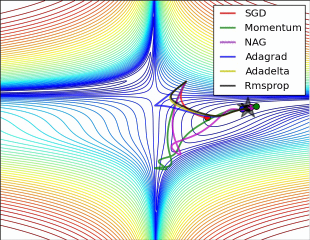
Rif. G · Ottimizzatori
Optimizer paths
Confronta il comportamento qualitativo: SGD oscilla, Momentum liscia, Adam adatta, LAMB scala per layer.
SGD segue il gradiente locale con un learning rate globale.
Adam e AdamW
Adam mantiene due medie mobili: il primo momento m_t (media dei gradienti) e il secondo momento v_t (varianza non centrata). Così adatta il learning rate per parametro.
m_t = β_1 m_{t-1} + (1-β_1) g_t
v_t = β_2 v_{t-1} + (1-β_2) g_t^2
m_hat_t = \frac{m_t}{1 - β_1^t}
v_hat_t = \frac{v_t}{1 - β_2^t}
W_{t+1} = W_t - η · \frac{m_hat_t}{sqrt(v_hat_t) + ε}
La bias correction è importante nei primi passi: m_t e v_t partono da zero, quindi senza correzione sottostimerebbero i momenti reali.
Adam passo t=1
Setup scalare: W0 = 0.5, η = 0.1, β1 = 0.9, β2 = 0.999, g1 = 0.3.
m_1 = 0.9·0 + 0.1·0.3 = 0.03
v_1 = 0.999·0 + 0.001·0.3^2 = 0.00009
m_hat_1 = \frac{0.03}{1 - 0.9^1} = 0.3
v_hat_1 = \frac{0.00009}{1 - 0.999^1} = 0.09
W_1 = 0.5 - \frac{0.1 · 0.3}{sqrt(0.09) + 10^{-8}} = 0.4
Il primo passo diventa quasi un aggiornamento normalizzato dal modulo del gradiente: per questo Adam parte spesso in modo rapido.
AdamW separa il weight decay dall'update adattivo. Questo evita che la regolarizzazione venga distorta dal denominatore adattivo di Adam.
Adam con L2: g_{t,reg} = g_t + λW_t
AdamW: W_{t+1} = W_t - η · (\frac{m_hat_t}{sqrt(v_hat_t) + ε} + λW_t)
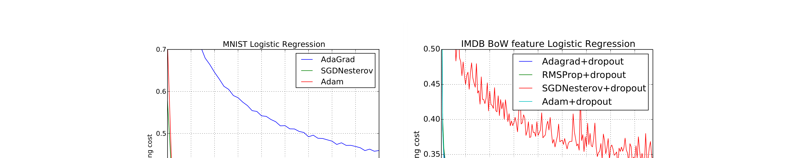
LAMB (Layer-wise Adaptive Moments for Batch training)
LAMB estende AdamW con un trust ratio per layer. È pensato per large batch training: bilancia l'ampiezza dello step rispetto alla norma dei pesi di ciascun layer.
ΔW_t = \frac{m_hat}{sqrt(v_hat) + ε} + λW_t
r_t(layer) = \frac{||W_t(layer)||}{||ΔW_t(layer)||}
W_{t+1}(layer) = W_t(layer) - η · r_t(layer) · ΔW_t(layer)
Perché il trust ratio per layer aiuta con batch grandi
Con batch molto grandi il gradiente è meno rumoroso, ma layer diversi possono avere norme dei pesi molto diverse. Un learning rate globale può essere troppo aggressivo per un layer e troppo debole per un altro.
- Se
||ΔW||è piccolo rispetto a||W||, il trust ratio aumenta lo step. - Se
||ΔW||è grande rispetto a||W||, il trust ratio riduce lo step. - Se
r_t = 1, LAMB si comporta come AdamW.
LAMB nel Perceiver IO
Negli appunti questa configurazione è riferita al setting ImageNet di Perceiver IO: batch grande su TPU, learning rate base circa
2e-3, weight decay 0.1, gradient clipping con norma globale massima 10 e schedule con 55 epoche piatte seguite da 55 epoche di cosine decay. Da distinguere dal Perceiver originale del cap. 11, dove la fonte riporta 120 epoche con LR 4 × 10⁻³ e step decay alle epoche 84, 102, 114.
Gradient clipping
Il clipping limita gli exploding gradient: se la norma globale del gradiente supera una soglia τ, il gradiente viene riscalato senza cambiarne la direzione. Negli appunti è collegato sia alle reti ricorrenti sia al training stabile di modelli grandi.
g_clipped = g · min(1, \frac{τ}{||g||})
Per il Perceiver il messaggio pratico è semplice: LAMB controlla l'ampiezza dello step per layer, mentre il Gradient clipping evita aggiornamenti anomali quando un batch produce gradienti troppo grandi.
Learning Rate Scheduling
Lo schedule modifica il learning rate durante il training. Le strategie più comuni sono warmup, step decay e cosine decay.
Warmup: η_t = η_max · \frac{t}{T_w}
Step decay: η_t = η_0 · γ^{\left\lfloor\frac{t}{T_s}\right\rfloor}
Cosine: η_t = η_min + 0.5(η_max - η_min)(1 + cos(\frac{πt}{T_c}))
La distinzione da ricordare è questa: nel Perceiver originale degli appunti principali si usa step decay; nel riferimento sugli ottimizzatori e nel setting Perceiver IO compare invece la schedule piatta per 55 epoche seguita da cosine decay per altre 55.
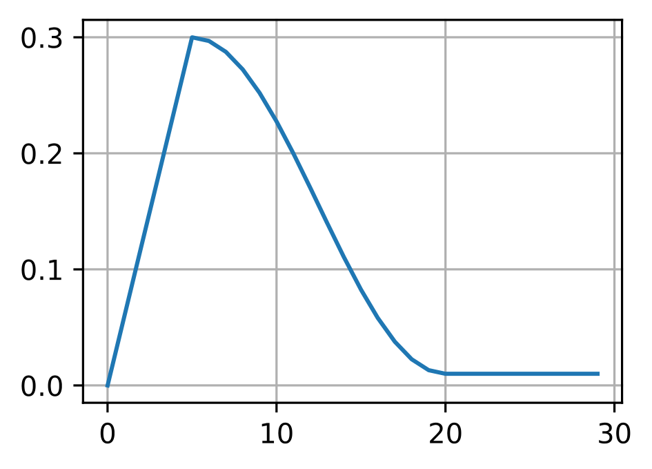
Tabella comparativa degli ottimizzatori
| Ottimizzatore | Idea chiave | LR adattivo | Uso tipico |
|---|---|---|---|
| SGD | Gradiente scalato da η | No | CNN classiche |
| SGD + Momentum | Inerzia accumulata | No | ResNet / fine-tuning |
| Adam | Momento + varianza | Sì, per parametro | Transformer, NLP |
| AdamW | Adam + weight decay disaccoppiato | Sì, per parametro | BERT, GPT, ViT |
| LAMB | AdamW + trust ratio per layer | Sì, per layer/parametro | Large batch, TPU, Perceiver |
Idea chiave
Per Perceiver e Perceiver IO l'ottimizzatore non è un dettaglio: LAMB aiuta a stabilizzare training grandi, profondi e con batch elevati.
📄 Dal paper originale
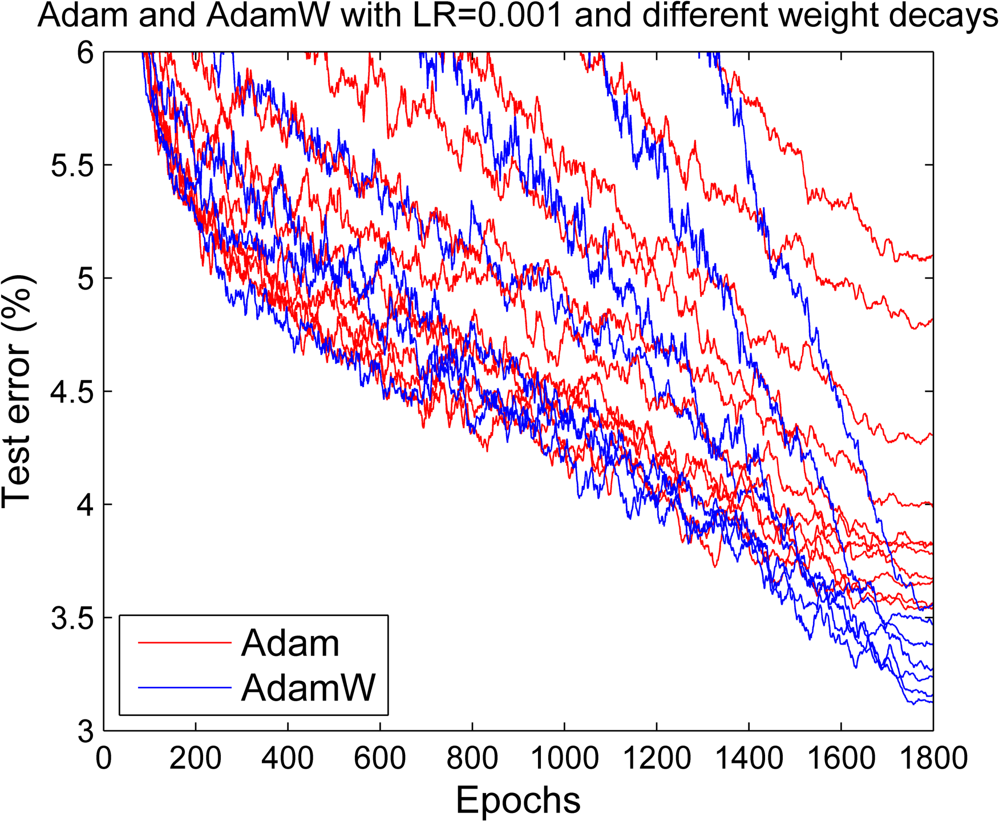
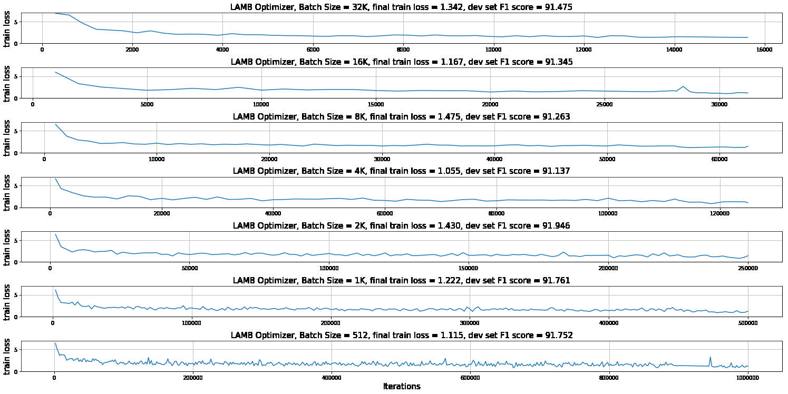
CNN
Le reti neurali convoluzionali sono architetture per dati strutturati a griglia, soprattutto immagini e video. La loro forza è combinare filtri locali, condivisione dei pesi e gerarchia di feature: efficienti e molto efficaci sulle immagini, ma meno generali del Perceiver perché dipendono da località e invarianza alla traslazione.
Fonte negli appunti
PDF pp. 170-177 · Sezione M
Apri PDF
Idea di partenza
Mentre le RNN eccellono con dati sequenziali, per dati strutturati in forma di griglia — come le immagini — servono architetture in grado di sfruttare la struttura spaziale locale. Le reti neurali convoluzionali sono state progettate esattamente per questo scopo.
Le CNN elaborano dati strutturati a griglia, soprattutto immagini e video. Invece di connettere ogni neurone a tutti gli input, usano filtri locali, detti kernel, che scorrono sull'immagine per estrarre feature. Sono il predecessore diretto del ViT e, indirettamente, del Perceiver.
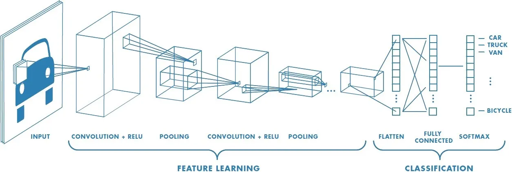
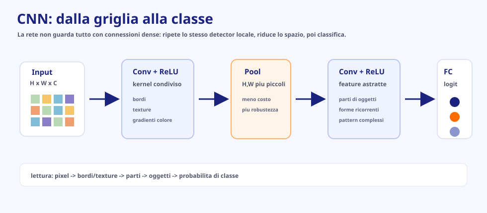
Architettura overview
Una CNN tipica alterna tre tipi di layer: Convolution Layer, Pooling Layer e Fully Connected Layer. I layer iniziali catturano feature di basso livello, come bordi e texture; quelli profondi catturano feature più complesse, come parti di oggetti o oggetti interi.
1Convolution Layer
Estrae feature locali tramite filtri o kernel.
2Pooling Layer
Riduce la dimensione spaziale mantenendo le attivazioni importanti.
3Fully Connected Layer
Appiattisce le feature e produce la classificazione finale.
Griglia
Input come griglia
L'immagine entra come tensore H×W×C. La CNN assume che vicini spaziali contengano informazione correlata.
- Cosa cambia
- Da pixel grezzi a mappe di attivazione.
- Perché conta
- Questa ipotesi rende la CNN efficiente, ma legata alla griglia.
Convolution Layer
Un filtro o kernel è una piccola matrice di pesi che scorre sistematicamente sull'immagine. In ogni posizione compie tre operazioni in sequenza: moltiplica ogni peso per il pixel corrispondente, somma tutti i prodotti e scrive il risultato in una cella della feature map. Poi si sposta e ricomincia.
La cosa da visualizzare è questa: il kernel è un rilevatore riutilizzato. Non impara un peso diverso per ogni pixel dell'immagine; impara un piccolo pattern e lo prova in tutte le posizioni. È qui che nascono insieme efficienza e località.
Rif. M.2 · pp. 171-172
Visualizzazione dello scorrimento
Immagine 5×5 in scala di grigi: 200 è chiaro, 0 è nero. Il kernel 3×3 scorre con stride 1 e padding 0: visita 9 posizioni e produce una feature map 3×3.
Input image 5×5
La finestra evidenziata è la zona 3×3 guardata in questo istante.
Kernel 3×3
Pesi +1 a sinistra e -1 a destra: misura una transizione verticale.
Feature map 3×3
Ogni cella dice quanto il bordo verticale è presente in quella posizione.
Posizione A
Il kernel è su una zona uniforme: i contributi positivi e negativi si annullano.
out = 0
Lettura rapida: A è zona uniforme e scrive out = 0; quando la finestra intercetta il bordo verticale, la risposta diventa out = 600.
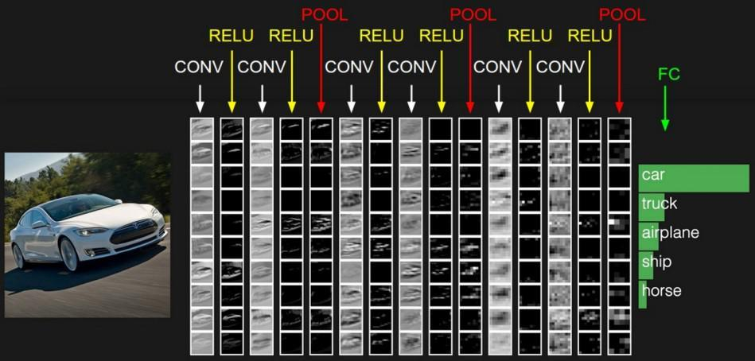
Convoluzione vs cross-correlation
In matematica la convoluzione ruoterebbe il kernel di 180 gradi prima di applicarlo. Nelle CNN reali, PyTorch, TensorFlow e Keras non ruotano il kernel: fanno tecnicamente una cross-correlation. Poiché i pesi sono appresi, la differenza non cambia il risultato pratico, ma è una precisione teorica importante.
feature map(i,j) = \sum_{m,n} K_{mn} · X_{i+m,j+n}
i, j = posizione corrente del kernel nell'output; m, n = coordinate interne al kernel (da 0 a k−1).
K è il kernel, cioè la piccola matrice di pesi del filtro; K_{mn} è il peso nella riga m e colonna n del kernel. X è l'immagine o feature map in input; X_{i+m,j+n} è il pixel/valore dell'input che si trova sotto quel peso mentre il kernel è centrato sulla posizione (i,j).
Ogni cella della feature map dice quanto il pattern cercato dal filtro è presente in quella posizione: valore alto significa pattern trovato, valore basso o zero dopo ReLU significa pattern assente.
Che cosa sono stride e padding
Quando diciamo che il kernel "scorre", dobbiamo specificare quanto avanza e cosa succede ai bordi. Questi due dettagli sono stride e padding: non cambiano i pesi del filtro, cambiano quante posizioni il filtro può visitare.
Stride = passo del kernelÈ il numero di pixel di cui la finestra si sposta tra una posizione e la successiva. Con
s=1 il kernel visita tutte le posizioni vicine; con s=2 salta una posizione alla volta. Quindi uno stride più grande salta posizioni, produce mappe più piccole e riduce i calcoli.Padding = bordo aggiuntoÈ il numero di pixel fittizi, di solito zeri, aggiunti attorno all'immagine prima della convoluzione. Serve perché un kernel
3×3 centrato su un pixel di bordo uscirebbe fuori dall'immagine.Valid vs same convolutionvalid convolution significa
p=0: il kernel resta sempre dentro l'immagine e l'output si restringe. same convolution usa padding, per esempio p=1 con kernel 3×3 e stride 1, per mantenere altezza e larghezza uguali.
H_out = \left\lfloor\frac{H - k + 2p}{s}\right\rfloor + 1
W_out = \left\lfloor\frac{W - k + 2p}{s}\right\rfloor + 1
Nella formula: H, W sono altezza e larghezza dell'input, k è il lato del kernel, p è il padding e s è lo stride. Il termine +2p allarga virtualmente l'immagine; la divisione per s conta quante posizioni restano quando il kernel avanza a salti.
Bias, ReLU, RGB e pipeline completa
Bias. Al risultato della convoluzione si aggiunge un bias apprendibile: output = (K * X) + b. Il bias sposta la soglia di attivazione del filtro indipendentemente dall'input.
Perché ReLU? Dopo la convoluzione si applica una non-linearità, tipicamente ReLU(x) = max(0, x). Senza attivazioni non lineari, una pila di layer lineari sarebbe equivalente a una sola trasformazione lineare.
ReLU example: [-5, 2, 7, -1] \rightarrow [0, 2, 7, 0]
Immagini RGB. Su un'immagine a colori il kernel non è solo k×k, ma kernel k×k×3: opera sui tre canali R, G e B insieme. Con F filtri si ottengono F feature map, una per ogni pattern cercato.
Pipeline completa
Input → Conv + bias → Feature map → ReLU → Pooling → Conv ... → Flatten → FC → Softmax → Output
Pooling
Il pooling riduce la dimensione spaziale delle feature map mantenendo l'informazione più rilevante. Serve a tre scopi: diminuire il costo computazionale, ridurre l'overfitting e rendere la rete meno sensibile alla posizione esatta dei pattern.
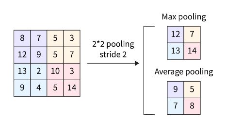
Rif. M.3 · Pooling
Max-pooling e average-pooling
La stessa finestra 2×2 può conservare il picco o la media. Cambia il modo in cui la CNN riassume il pattern.
MaxPool 2×2 stride 2: ogni finestra conserva il valore più alto.
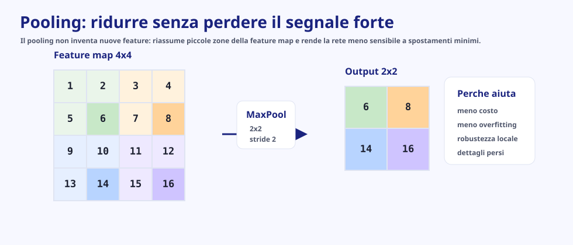
Max-Pool 2×2Prende il massimo in ogni finestra: conserva il picco di attivazione, quindi risponde alla domanda "il pattern è presente qui?".
Average-poolingPrende la media: conserva informazione diffusa. È utile anche come Global Average Pooling negli strati finali.
Effetto praticoRiduce H e W, aumenta robustezza a piccole traslazioni, ma scarta dettagli spaziali fini.
\begin{bmatrix}1&2&3&4\\5&6&7&8\\9&10&11&12\\13&14&15&16\end{bmatrix}
\xrightarrow{MaxPool\ 2×2}
\begin{bmatrix}6&8\\14&16\end{bmatrix}
Dimensione dopo pooling
Con finestra p×p e stride s, la dimensione spaziale segue la stessa logica della convoluzione senza padding.
H_out = \left\lfloor\frac{H - p}{s}\right\rfloor + 1
Esempio: feature map 28×28 con Max-Pool 2×2 e stride 2 produce 14×14.
Attenzione
Il pooling è utile perché riduce costo e dimensioni, ma è anche irreversibile: una volta tenuto solo il massimo o la media, i dettagli scartati non sono più recuperabili.
Fully Connected e Output
Dopo gli ultimi blocchi convoluzionali, le feature map vengono appiattite in un vettore 1D e passate a layer fully connected. Esempio numerico: 32 feature map di dimensione 7×7 diventano 32 × 7 × 7 = 1.568 valori, cioè un vettore che riassume tutto ciò che la CNN ha rilevato.
z = W x + b
Il layer fully connected collega ogni neurone di output a tutti i valori del vettore appiattito. L'ultimo strato produce i logit di classe.
\mathrm{softmax}(z_i) = \frac{e^{z_i}}{\sum_j e^{z_j}}
\sigma(z) = \frac{1}{1 + e^{-z}}
Classificazione multiclasseSi applica la softmax (formula sopra): i logit diventano probabilità che sommano a 1, e la classe predetta è quella con probabilità più alta. Esempio:
[2.1, 0.5, 1.8] → [0.57, 0.12, 0.41].Classificazione binariaSi applica la sigmoid
σ(z) (formula sopra), che mappa il logit in [0,1].Perché contaLa parte convoluzionale estrae feature; la parte FC usa quelle feature per decidere la classe.
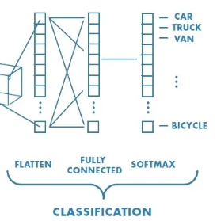
Parametri C1 in LeNet-5
Lo strato C1 ha 6 filtri 5×5×1, ciascuno con un bias.
Parametri C1 = 6 × (5 × 5 × 1 + 1) = 156
Un MLP fully connected equivalente richiederebbe circa 4.8M parametri, cioè circa 30.000 volte di più: il vantaggio della località e della condivisione dei pesi è enorme.
Training e inductive bias
Il training segue lo stesso ciclo del feed-forward: forward pass, calcolo della loss, backpropagation e aggiornamento dei pesi. La differenza è che i gradienti vengono propagati anche attraverso i filtri convoluzionali, quindi i kernel non sono scritti a mano: vengono imparati.
Cosa si aggiorna durante il training
| Parte della CNN | Parametri aggiornati | Gradiente |
|---|---|---|
| Layer convoluzionale | Pesi del kernel K_ij e bias | ∂L/∂K_ij |
| Layer fully connected | Matrice W e bias b | ∂L/∂W, ∂L/∂b |
Nel tempo la rete impara da sola quali pattern cercare: primi layer per bordi e texture, layer intermedi per forme ricorrenti, layer profondi per parti di oggetti e strutture complesse.
LocalitàI pixel vicini sono correlati. Ha senso usare filtri piccoli invece di collegare ogni pixel a ogni neurone.
Invarianza alla traslazioneLo stesso kernel si applica ovunque: un pattern può essere riconosciuto anche se si sposta nell'immagine.
LimiteQuesti bias rendono le CNN efficienti sulle immagini, ma le imprigionano su domini senza griglia naturale.
ResNet e Residual Connections
Aumentando la profondità di una CNN si incontrano vanishing gradient e degradazione delle prestazioni. ResNet introduce le skip connections: invece di imparare direttamente una trasformazione complessa H(x), il blocco impara solo il residuo.
y = F(x, W) + x
Degradazione vs vanishing gradientLa degradazione è più specifica: reti più profonde peggioravano anche sul training set. Il caso tipico è una rete a 56 layer peggiore di una a 20, pur potendo teoricamente copiarla. Non era solo gradiente nullo; era difficile far imparare a molti layer la semplice identità.
Perché la skip aiutaSe la trasformazione utile è vicina all'identità, il blocco deve imparare
F(x) ≈ 0. Il percorso + x mantiene informazione e gradiente disponibili.Collegamento al PerceiverLa stessa logica torna nei blocchi attention e FFN: il modello profondo impara correzioni progressive, non deve riscrivere ogni volta tutta la rappresentazione latente.

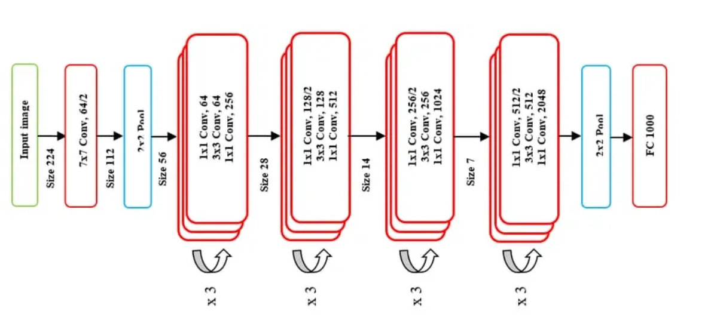
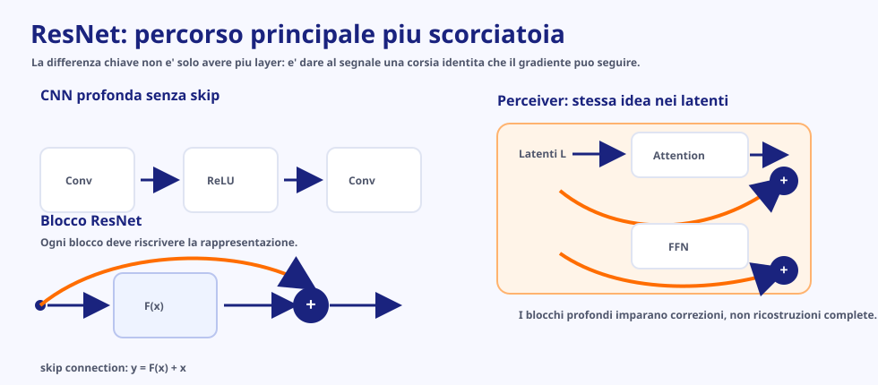
Bottleneck block (ResNet-50+)
Conv 1×1 (riduzione) comprime i canali, per esempio da
256 a 64; Conv 3×3 lavora nello spazio ridotto; Conv 1×1 (espansione) riporta da 64 a 256 canali. Riduce i FLOP di circa 3× rispetto a usare molte convoluzioni 3×3 larghe. È una mini-versione dell'idea che rivedi nel Perceiver: comprimere prima, ragionare nello spazio compatto, poi riespandere o leggere l'output.
CNN tradizionale vs ResNet-50
| Aspetto | CNN tradizionale | ResNet-50 |
|---|---|---|
| Architettura | Sequenziale: Conv → ReLU → Pool → FC. | 5 stadi con residual blocks e skip connections. |
| Flusso informativo | Solo sequenziale. | Doppio: percorso principale più scorciatoia identità. |
| Profondità | 5-19 layer prima che diventi instabile. | 50+ layer addestrabili in modo stabile. |
| Residual learning | Assente. | y = F(x,W) + x. |
| Vanishing/degradazione | Problema forte nelle reti profonde. | Mitigato dalle skip connections. |
| ImageNet top-5 error | AlexNet 15.3%, VGG 7.3%. | ResNet-50: 3.57%. |
Collegamento al Perceiver
Anche con ResNet, una CNN cattura pattern locali tramite filtri di dimensione fissa. Per mettere in relazione tutti gli elementi in un singolo passo serve il meccanismo globale dei Transformer; il problema è che la self-attention diretta sull'input costa O(M²).
Le CNN sono efficienti perché pagano un costo locale e lineare, ma assumono una griglia. Il Perceiver vuole tenere la scalabilità, rinunciando al bias 2D: tratta l'input come una sequenza generica, usa Fourier features per la posizione e comprime tutto in un latent bottleneck.
Negli appunti il collegamento è esplicito: il Perceiver usa circa 112 residual connections, una per ogni sottoblocco di attention e FFN. Senza questi percorsi additivi, un modello così profondo e iterativo perderebbe segnale o diventerebbe molto difficile da ottimizzare.
Riferimento: ConvNet
Una ConvNet è una CNN vista come pipeline completa: non solo il singolo kernel, ma l'intero percorso da immagine a classe. La sequenza mentale da tenere è Conv → ReLU → Pooling → Flatten → FC.
Fonte negli appunti
PDF pp. 170-176 · Sezione M.1-M.5
Apri PDF
ConvNet pipeline interattiva
La ConvNet mantiene la griglia nei primi stadi e costruisce feature sempre più astratte. Un kernel locale produce mappe di attivazione; ReLU elimina risposte negative; il pooling riassume; il flatten trasforma le mappe in vettore; il fully connected produce logit.
Rif. M.1-M.5 · ConvNet
Da immagine a classe
Avanza negli stadi e osserva forma, costo e significato della rappresentazione.
input H×W×C
→
feature map
→
classe
Input: tensore H×W×C. La ConvNet parte dalla griglia, non da una sequenza astratta.

Perché è efficiente
Local receptive fieldOgni neurone guarda una finestra piccola
k×k, quindi non collega ogni pixel a tutti gli altri. Il costo resta locale.Weight sharingLo stesso filtro scorre su tutte le posizioni: pochi pesi vengono riutilizzati molte volte.
CanaliSu RGB il kernel ha forma
k×k×3; con F filtri ottieni F feature map, cioè risposte a pattern diversi.
H_{out} = \left\lfloor\frac{H - k + 2p}{s}\right\rfloor + 1
W_{out} = \left\lfloor\frac{W - k + 2p}{s}\right\rfloor + 1
k è il kernel, s lo stride, p il padding. La formula serve per controllare quando e quanto si restringe la griglia.
Forza e limite
La ConvNet è forte perché incorpora bias corretti per immagini: località, peso condiviso e robustezza a piccole traslazioni. È meno generale perché questi bias non sono automaticamente adatti ad audio lungo, point cloud o input multimodali.
| Dominio | Adattamento tipico | Limite |
|---|---|---|
| Immagini | Conv 2D | Griglia naturale: ottimo caso. |
| Audio | Conv 1D | Cambia la struttura locale. |
| Video | Conv 3D | Più costo e nuovo bias temporale. |
| Point cloud | Architetture dedicate | La griglia regolare non esiste. |
Collegamento al Perceiver
La ConvNet è il riferimento per la scalabilità. Il Perceiver prova a conservarne il vantaggio computazionale, ma rinuncia al vincolo della griglia: usa Fourier features per la posizione e latenti fissi per comprimere l'input.
Riferimento: ResNet
ResNet nasce per addestrare CNN molto profonde. Il blocco non deve imparare direttamente una trasformazione completa: impara una correzione residua e somma l'identità.
Fonte negli appunti
PDF pp. 177-178 · Sezione M.6
Apri PDF
Residual learning
In una rete sequenziale un blocco prova a imparare H(x). In ResNet si riscrive H(x) come F(x)+x: se la trasformazione utile è vicina all'identità, basta imparare F(x)≈0.
H(x) = F(x) + x
F(x) = H(x) - x
Vanishing gradientIl percorso identità crea una strada più diretta per il gradiente.
Degradation problemLe reti più profonde peggioravano anche sul training set: non riuscivano nemmeno a imparare bene l'identità.
Residual blockIl blocco impara una correzione, non riscrive tutta la rappresentazione.
Bottleneck residuale interattivo
Nei modelli ResNet-50+ il blocco bottleneck segue la logica 1×1 riduce, 3×3 lavora, 1×1 riespande. La 3×3 è la parte costosa; farla su meno canali riduce i FLOP.
Rif. M.6 · Bottleneck block
1×1 → 3×3 → 1×1 + skip
Seleziona lo stadio per vedere canali, operazione e motivo.
skip identity x
1×1256 → 64
3×364 → 64
1×164 → 256
+
256
64 canali nel corpo
Conv 1×1 di riduzione: cambia i canali senza mischiare lo spazio, preparando una 3×3 più economica.
CNN tradizionale vs ResNet
| Aspetto | CNN tradizionale | ResNet-50 |
|---|---|---|
| Flusso | Solo sequenziale | Percorso principale più scorciatoia |
| Obiettivo | Imparare H(x) | Imparare F(x)=H(x)-x |
| Profondità | Diventa instabile | 50+ layer addestrabili |
| ImageNet top-5 error | AlexNet 15.3%, VGG 7.3% | ResNet-50: 3.57% |
Collegamento al Perceiver
Il Perceiver usa la stessa filosofia: ogni blocco attention o MLP è circondato da residual connections. I latenti vengono raffinati per correzioni successive, non riscritti da zero.
Perceptrone
Il perceptrone è il mattone fondamentale di ogni rete neurale: un classificatore lineare binario. Ogni neurone delle architetture successive — fino al Perceiver — ne ricalca la struttura base: somma ponderata + attivazione.
Struttura
Riceve n input x₁…xₙ, ciascuno moltiplicato per un peso wᵢ, somma il tutto con un bias b e applica una funzione di attivazione a gradino.
y = f(\sum_{i=1}^{n} w_i x_i + b)
dove f è la funzione a gradino: vale 1 se l'argomento è ≥ 0, altrimenti 0.
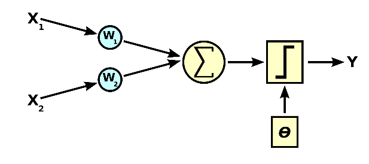
Rif. H · Perceptrone
Decisione lineare interattiva
Il perceptrone traccia una sola frontiera lineare: cambia input e osserva come somma pesata, bias e gradino decidono la classe.
somma ponderata
z = -0.25
(-0.7)(0.5) + (1.0)(0) + 0.1
y = 0
Senza pioggia il valore netto è negativo: il gradino produce 0. La retta separa solo casi linearmente separabili.
Esempio: indossare la giacca?
Input: temperatura x₁ = 0.5, pioggia x₂ = 0. Pesi: w₁ = −0.7, w₂ = 1.0, b = 0.1.
z = (-0.7)(0.5) + (1.0)(0) + 0.1 = -0.25
Poiché z è negativo, il gradino restituisce y = 0 → "non indossare la giacca". Se invece piovesse (x₂ = 1): z = 0.75 (> 0) ⇒ y = 1, indossa la giacca.
Training
Addestrare il perceptrone significa aggiustare i pesi per ridurre l'errore di classificazione.
w_j^{new} = w_j + \lambda (y_i - \hat{y}_i) x_{ij}
b^{new} = b + \lambda (y_i - \hat{y}_i)
Il learning rate λ ∈ (0,1] controlla l'ampiezza degli aggiustamenti.
Teorema di convergenza (Rosenblatt, 1962)
Se i dati sono linearmente separabili, la regola di aggiornamento converge in un numero finito di passi, qualunque sia l'inizializzazione — ma solo quando una soluzione esiste.
Un passo di training
Con x₁ = 1, x₂ = 0, target = 1, output = 0, λ = 0.1: errore = 1 − 0 = 1, quindi w₁ ← w₁ + 0.1 mentre w₂ resta invariato (perché x₂ = 0: non ha responsabilità nell'errore).
Limiti: il problema XOR
Il perceptrone converge solo su problemi linearmente separabili. La funzione XOR non lo è: nessuna retta separa le classi.
| x₁ | x₂ | XOR |
|---|---|---|
| 0 | 0 | 0 |
| 0 | 1 | 1 |
| 1 | 0 | 1 |
| 1 | 1 | 0 |
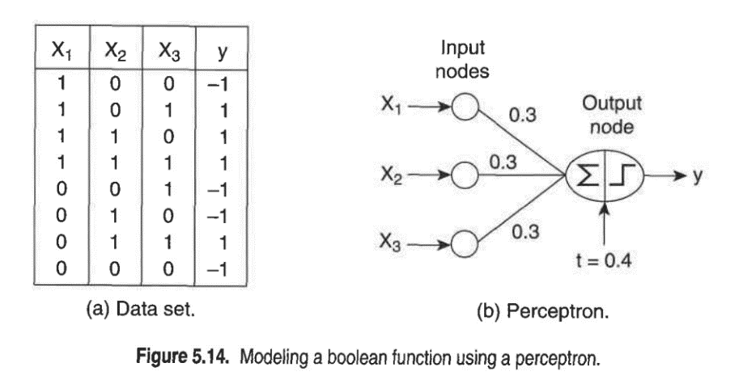
Idea chiave
Un singolo perceptrone traccia un solo confine lineare. Lo XOR dimostra che serve la profondità: impilando neuroni (hidden layer) si ottengono le reti feed-forward, capaci di confini non lineari.
Reti Neurali Feed-Forward
Le reti feed-forward (multi-layer perceptron, MLP) estendono il perceptrone con strati nascosti. Il loro ciclo di training — forward, loss, backpropagation — è lo stesso usato in CNN, Transformer e Perceiver.
Teorema dell'approssimatore universale (Cybenko, 1989)
Una rete con un solo hidden layer e abbastanza neuroni non lineari può approssimare qualsiasi funzione continua su un compatto. Non dice però quanti neuroni servano: in pratica reti profonde sono molto più efficienti di reti larghe.
Architettura
- Input layer: accetta i dati, nessun parametro apprendibile.
- Hidden layer: trasformazioni non lineari (ReLU, sigmoid…), apprendono rappresentazioni intermedie.
- Output layer: produce la previsione (softmax per classificazione, lineare per regressione).
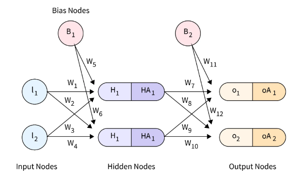
Rif. I · Forward, loss, backpropagation
Forward e backprop interattivi
La rete prima produce una previsione, poi la loss misura l'errore, infine la chain rule riporta la responsabilità ai pesi.
inputx = 2
→
hidden ReLUa₁ = 1.0
→
outputŷ = -0.3
lossL = 1.69
gradiente∂L/∂w₂ = -2.6
updatew₂ ← -0.274
Forward: con x=2, w₁=0.5 e w₂=-0.3 la rete produce ŷ=-0.3. Il target è 1, quindi l'errore è alto.
Forward propagation
Per ogni neurone si calcola l'input netto z e poi l'output tramite l'attivazione f:
z = \sum_i w_i x_i + b \qquad \hat{y} = f(z)
Loss function
Per la regressione si usa la Mean Squared Error; per la classificazione la cross-entropy (standard in Transformer, ViT e Perceiver):
E = \frac{1}{2} \sum_i (y_i - \hat{y}_i)^2
\mathcal{L}_{CE} = -\sum_{k=1}^{K} y_k \log \hat{y}_k
Backpropagation
Calcola i gradienti della loss rispetto a ogni peso propagando l'errore dall'output all'input con la regola della catena.
\frac{\partial E}{\partial \hat{y}} = \hat{y} - y
\frac{\partial E}{\partial z} = \frac{\partial E}{\partial \hat{y}} \cdot f'(z)
\frac{\partial E}{\partial w} = \frac{\partial E}{\partial z} \cdot x
w_{new} = w - \eta \frac{\partial E}{\partial w}
In parole semplici: la catena di montaggio
Se il prodotto finale è difettoso (loss alta), il controllo qualità (backprop) risale la catena chiedendo a ogni operaio (neurone): "quanto sei responsabile?". Chi ha contribuito di più riceve la correzione più grande (gradiente maggiore). La chain rule scompone la responsabilità strato per strato.
Esempio numerico
1 input x = 2, 1 hidden con ReLU, 1 output lineare. Pesi w₁ = 0.5, w₂ = −0.3, target = 1. Forward: z₁ = 1.0, a₁ = 1.0, ŷ = −0.3, loss MSE = 1.69. Backward: ∂L/∂ŷ = −2.6 → ∂L/∂w₂ = −2.6, ∂L/∂w₁ = 1.56. Update (η=0.01): w₂ ← −0.274, w₁ ← 0.4844.
Idea chiave
Le feed-forward trattano ogni input in modo indipendente, senza nozione di ordine o tempo. Per dati sequenziali (testo, audio, serie temporali) servono architetture con memoria: le RNN.
Reti Neurali Ricorrenti (RNN)
Le RNN aggiungono un loop nello stato nascosto: l'output di h₍ₜ₋₁₎ rientra come input al passo successivo, creando una forma di memoria. Adatte a dati sequenziali.
Il loop nello stato nascosto
I parametri sono tre matrici condivise a ogni passo: W (sullo stato precedente), U (sull'input corrente), V (dallo stato all'output).
h_t = \tanh(W h_{t-1} + U x_t + b_h)
y_t = V h_t + b_y
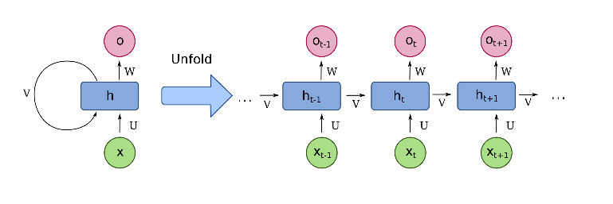
Rif. J · Srotolamento nel tempo
RNN srotolata interattiva
Ogni passo usa gli stessi pesi, ma lo stato cambia. Il problema nasce quando il gradiente deve attraversare molti passi.
h₀(0, 0)
x₁ = 1.0h₁
x₂ = 0.5h₂
x₃ = -0.3h₃
Al passo t=1 lo stato nasce da h₀ e x₁: h₁=(0.537, 0.291). I pesi W e U sono gli stessi che verranno riusati dopo.
Collegamento al Perceiver
I pesi
W, U, V sono condivisi in tutti i passi temporali: è la stessa idea di weight sharing che il Perceiver porta all'estremo, riusando gli stessi blocchi di attention a ogni iterazione di raffinamento dei latenti.
Srotolamento nel tempo
Una RNN può essere "srotolata" (unrolled) in una catena di copie identiche, una per passo temporale — di fatto una rete feed-forward molto profonda che condivide i pesi.
Forward pass (condensato)
Con sequenza x₁=1.0, x₂=0.5, x₃=−0.3 e h₀=(0,0): h₁=(0.537, 0.291) → h₂=(0.535, 0.158) → h₃=(0.104, −0.133). h₃ dipende da tutti gli input, ma l'influenza di x₁ è già molto attenuata: il vanishing gradient in azione dopo soli 3 passi.
Vanishing e Exploding Gradient
Nella backpropagation through time (BPTT) il gradiente attraversa molte moltiplicazioni matriciali. Se gli autovalori di W sono minori di 1 il gradiente svanisce; se maggiori di 1, esplode.
\frac{\partial h_T}{\partial h_1} = \prod_{t=2}^{T} \frac{\partial h_t}{\partial h_{t-1}}
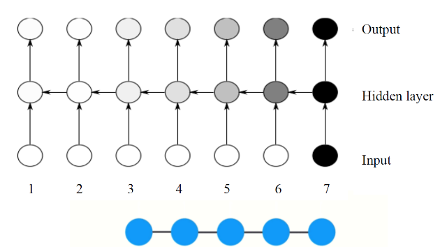
L'exploding gradient si mitiga con il gradient clipping: se la norma supera una soglia τ, si riscala.
g \leftarrow \frac{\tau}{||g||} \cdot g
Idea chiave
Il vanishing gradient limita la memoria delle RNN a sequenze brevi. Per dipendenze lunghe servono gate espliciti che proteggano l'informazione: LSTM e GRU.
LSTM (Long Short-Term Memory)
Le LSTM (Hochreiter & Schmidhuber, 1997) risolvono il vanishing gradient con una cella di memoria C₍ₜ₎ protetta da tre porte (gate) che controllano il flusso di informazione.
Le 4 equazioni
f_t = \sigma(W_f [h_{t-1}, x_t] + b_f)
i_t = \sigma(W_i [h_{t-1}, x_t] + b_i)
C_t = f_t \odot C_{t-1} + i_t \odot \tanh(W_C [h_{t-1}, x_t] + b_C)
h_t = o_t \odot \tanh(C_t)
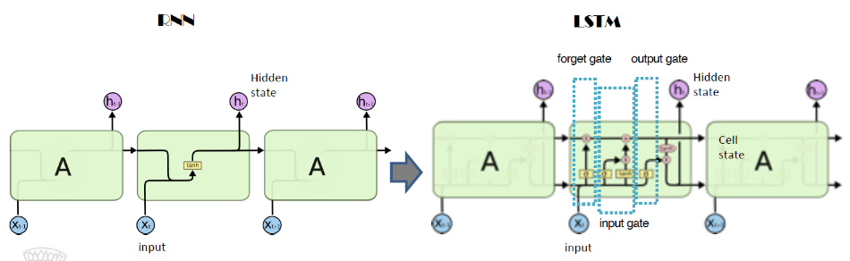
In parole semplici: le tre porte
Forget gate (
fₜ): cosa dimenticare dalla memoria (σ≈0 dimentica, σ≈1 mantiene). Input gate (iₜ): cosa aggiungere di nuovo. Output gate (oₜ): quale parte della memoria esporre come hₜ.
Rif. K · Gate LSTM
Gate LSTM interattivi
La cella Cₜ è una memoria protetta: forget, input e output gate decidono cosa conservare, scrivere ed esporre.
C₍ₜ₋₁₎ = (0.5, 0.3)
Cₜ = (0.583, 0.097)
fₜmantieni / dimentica
(0.666, 0.601)iₜscrivi nuovo contenuto
(0.570, 0.557)Cₜsomma vecchio + candidato
(0.583, 0.097)hₜesponi memoria filtrata
(0.296, 0.048)Forget gate: fₜ vicino a 1 conserva molta memoria precedente. Qui la prima componente resta forte, la seconda viene attenuata.
In parole semplici: leggere un testo
"Il gatto, che era nero e aveva gli occhi verdi, corse via". La cella deve ricordare "il gatto" (soggetto singolare) per tutta la subordinata: il forget gate non lo dimentica, l'input gate aggiunge gli aggettivi senza sovrascriverlo, l'output gate al verbo produce lo stato che codifica "soggetto singolare".
Collegamento al Perceiver
La cella
C₍ₜ₎ è un "nastro trasportatore" che porta informazione lungo la sequenza senza degradarla — la stessa intuizione delle residual connections, presenti in ogni blocco del Perceiver (112 in totale).
Idea chiave
Le LSTM funzionano bene ma hanno molti parametri (4 trasformazioni lineari per cella). Una versione semplificata con prestazioni comparabili è la GRU.
GRU (Gated Recurrent Unit)
La GRU (Cho et al., 2014) semplifica la LSTM: fonde cella e stato nascosto e usa solo 2 porte invece di 3.
Le equazioni
r_t = \sigma(W_r [h_{t-1}, x_t] + b_r)
z_t = \sigma(W_z [h_{t-1}, x_t] + b_z)
\tilde{h}_t = \tanh(W [r_t \odot h_{t-1}, x_t] + b)
h_t = (1 - z_t) \odot h_{t-1} + z_t \odot \tilde{h}_t
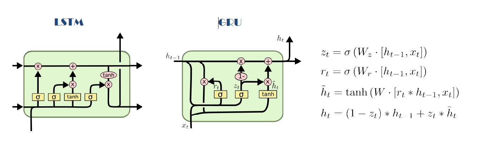
Rif. L · Gate GRU
Gate GRU interattivi
La GRU usa meno porte della LSTM: reset prepara il candidato, update decide quanto vecchio stato mantenere.
stato precedenteh₍ₜ₋₁₎
(0.5, -0.3)reset gaterₜ
(0.601, 0.582)candidatoh̃ₜ
(0.541, -0.289)stato aggiornatohₜ
(0.523, -0.295)
vecchio stato
candidato
Reset gate: decide quanta memoria precedente entra nel candidato. Se rₜ è basso, il candidato ignora il passato.
Forward pass (condensato)
Con h₍ₜ₋₁₎=(0.5, −0.3), xₜ=0.8: reset rₜ=(0.601, 0.582), update zₜ=(0.552, 0.463), candidato h̃ₜ=(0.541, −0.289), stato hₜ=(0.523, −0.295). Con zₜ≈0.5 la GRU mescola circa metà vecchio stato e metà candidato: aggiornamento graduale.
GRU vs LSTM
| Aspetto | LSTM | GRU |
|---|---|---|
| Porte | 3 (forget, input, output) | 2 (reset, update) |
| Stato interno | C₍ₜ₎ e h₍ₜ₎ separati | Solo h₍ₜ₎ |
| Parametri | Più numerosi | ~25% in meno |
| Sequenze molto lunghe | Leggermente migliore | Comparabile |
| Velocità di training | Più lenta | Più veloce |
Idea chiave
RNN, LSTM e GRU eccellono sui dati sequenziali, ma restano legate alla nozione di ordine temporale. Per dati a griglia (immagini) servono le CNN; per relazioni globali a costo accettabile, l'attention dei Transformer.
📄 Dal paper originale
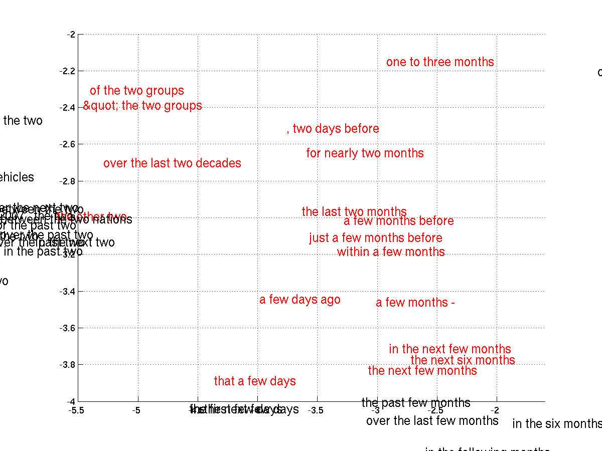
Riferimento: Transformer
Le CNN hanno visione locale, le RNN soffrono di vanishing gradient. Il Transformer (Vaswani et al., 2017, "Attention Is All You Need") supera entrambi con la self-attention: Transformer: ogni token parla con tutti, a costo O(M²).
Fonte negli appunti
PDF pp. 178-188 · Sezioni N-O
Apri PDF
Famiglia dei Transformer
Meglio non pensare al Transformer come a un solo modello fisso. È una famiglia: cambia quali blocchi usi, dove metti la maschera, che cosa consideri token e come produci l'output.
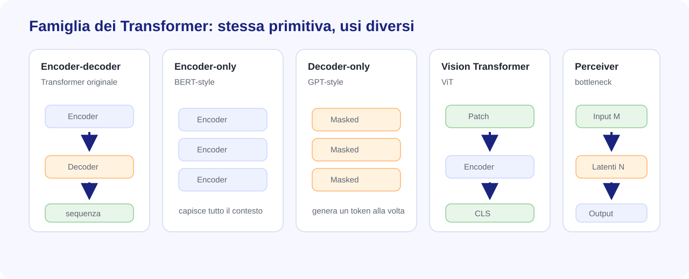
Rif. N-O · varianti Transformer
Quale Transformer sto guardando?
Seleziona una variante: cambiano maschera, input, output e motivo architetturale.
Encoder-decoder originale
Forma mentaleinput seq → memoria encoder → output seq
Uso tipico
Traduzione e sequence-to-sequence.
Encoder-decoder originale: utile quando input e output sono due sequenze diverse. Il decoder usa masked self-attention e cross-attention verso l'encoder.
Architettura: encoder-decoder
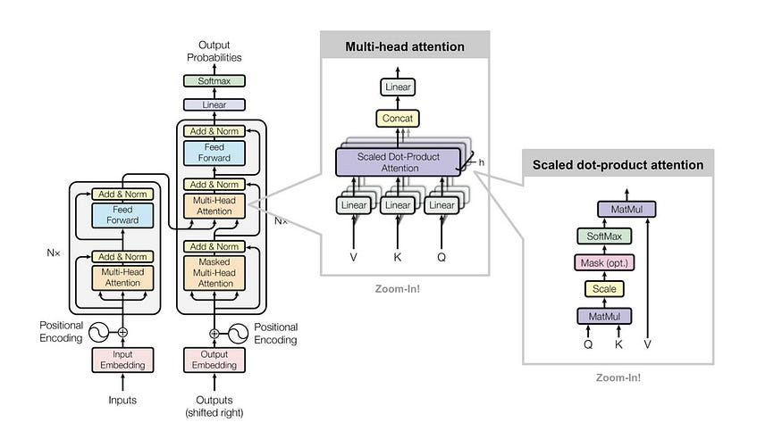
- Encoder: ogni token "vede" tutti gli altri via self-attention e produce una rappresentazione contestualizzata.
- Decoder: genera l'output token per token, con masked self-attention (non vede il futuro) e cross-attention verso l'encoder.
Rif. N.1-N.7 · encoder-decoder
Anatomia encoder-decoder animata
La figura originale diventa una sequenza di pezzi leggibili: embedding, encoder N×, decoder autoregressivo, cross-attention e testa finale.
Encoder N×
Input embeddingtoken → vettore d
+ Positional encodingz = embed + PE
Multi-Head Self-AttentionQ, K, V dall'input
Add & NormLN(x + attention)
Feed Forward512 → 2048 → 512
Add & Normmemoria H
token + PE
Decoder N×
Output embeddingDecoder shifted right
+ Positional encodingordine del prefisso
Masked multi-head attentionniente token futuri
Add & NormLN(x + masked)
Cross-attention encoder-decoderQ decoder, K/V encoder
Add & NormLN(x + cross)
Feed Forwardstesso MLP per token
Add & Normstato decoder
Linear + Softmaxprobabilità output
Caso reale: traduzione
Il gatto dorme → The cat sleeps
Frase sorgente
Il
gatto
dorme
Decoder durante training
<BOS>
The
cat
sleeps
Cosa vede
I token reali vengono trasformati in vettori; la posizione dice al modello che "gatto" è il secondo token.
Cosa produce
Una sequenza di vettori numerici, ancora non una traduzione: è solo il formato che il Transformer può elaborare.
Esempio semplice
Embedding: "Il", "gatto", "dorme" diventano tre vettori; il positional encoding evita che "gatto dorme Il" sembri equivalente.
Input embedding + positional encoding: i token diventano vettori e ricevono una posizione. Senza PE, l'attention non saprebbe l'ordine.
Esempi animati leggeri
Ogni riquadro prende un pezzo del Transformer e lo traduce in un caso semplice. Le animazioni sono volutamente piccole: servono a far vedere il verso del calcolo, non a distrarre.
Embedding: token reale
Le parole non entrano come stringhe: diventano vettori. Il positional encoding aggiunge l'ordine, quindi il secondo vettore sa di essere "gatto" in posizione 2.
Encoder: contesto
Nel layer encoder, "gatto" legge anche "Il" e "dorme". La forma resta 3×512, ma ogni riga contiene più contesto.
Scaled dot: pesi
QKᵀ/√d_k produce score, la softmax li trasforma in pesi per riga, poi A·V fa una media pesata dei value.
Multi-head: più viste
Ogni testa guarda con una prospettiva diversa. Concatenare non basta: Wᴼ rimescola le teste e riporta tutto nello spazio d.
FFN: espandi e comprimi
L'attention mescola token; la FFN trasforma ogni token separatamente. Nel Transformer originale espande 512 → 2048 e poi comprime.
Decoder: passato soltanto
La masked self-attention impedisce di guardare il futuro. Per predire "sleeps", il decoder può usare <BOS>, The, cat.
Perceiver: matrice rettangolare
La scaled dot è la stessa, ma non è più M×M. Nel Perceiver le query vengono dai latenti e key/value dall'input: la matrice è N×M, molto più gestibile.
Encoder block dettagliato
L'encoder è una pila di layer identici. Nel Transformer originale sono N = 6; ogni layer mantiene la forma M×d, cioè stessa lunghezza di sequenza e stessa dimensione del modello. Cambia il contenuto dei vettori: diventano sempre più contestualizzati.
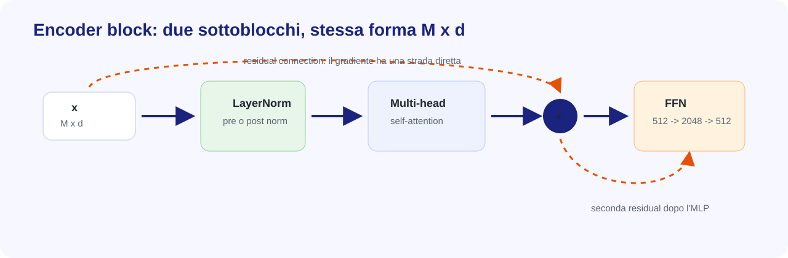
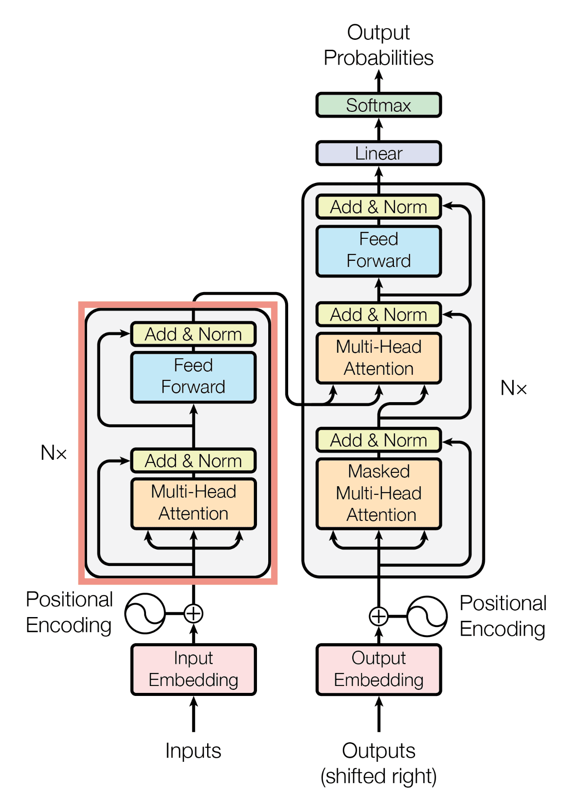
Self-attentionMescola informazione tra token: ogni posizione può leggere tutte le altre in un solo layer.
Residual + LayerNormStabilizza training e gradiente: il Transformer originale usa post-norm, GPT-2 e Perceiver usano pre-norm.
FFN token-wiseLo stesso MLP a due layer viene applicato indipendentemente a ogni token, con espansione interna
512 → 2048 → 512.Encoder layer: cosa cambia davvero
Prendiamo la frase sorgente dell'esempio, già trasformata in embedding + positional encoding: ["Il", "gatto", "dorme"]. Qui M = 3 token e, nel Transformer originale, d = 512. Quindi l'input del primo encoder layer è una matrice H ∈ R^{3×512}: 3 righe, una per token, 512 colonne di feature.
| Passo | Forma | Cosa significa |
|---|---|---|
| Input encoder | X ∈ R^{3×512} | ogni riga è un token con contenuto + posizione |
| Self-attention | Z_attn ∈ R^{3×512} | ogni token legge gli altri token e riceve contesto |
| Add & Norm | H1 = LN(X + Z_attn) | somma residua + LayerNorm, forma invariata |
| FFN | 3×512 → 3×2048 → 3×512 | MLP identico applicato riga per riga |
| Add & Norm finale | H_out ∈ R^{3×512} | stessa forma, ma vettori più contestualizzati |
La parte importante è questa: l'encoder non cambia il numero di token e non cambia la dimensione d. Cambia il contenuto delle righe. Dopo un layer, il vettore di gatto non rappresenta più solo la parola "gatto": contiene informazione da Il e dorme. Dopo N = 6 layer, l'output dell'encoder è la memoria H che il decoder userà nella cross-attention.
\text{Post-norm originale:}\quad y = \mathrm{LN}(x + \mathrm{Sublayer}(x))
\text{Pre-norm moderno:}\quad y = x + \mathrm{Sublayer}(\mathrm{LN}(x))
Post-norm vs pre-norm, perché ti interessa: il Transformer originale applica LayerNorm dopo la somma residua; GPT-2 e Perceiver applicano LayerNorm prima della sottofunzione. Il risultato pratico è che nei modelli profondi il percorso residuo resta più pulito e il gradiente scorre meglio. È lo stesso motivo per cui il latent transformer del Perceiver usa il pattern pre-norm.
Il collegamento con il Perceiver è diretto: i blocchi attention del Perceiver ereditano multi-head attention, MLP, residual e LayerNorm, ma li applicano soprattutto nello spazio latente N×D, non sull'input enorme M×C. Nel Perceiver ImageNet il latent transformer lavora su 512×1024, usa H = 8 teste, d_head = 128 e una MLP con hidden 4D = 4096: è lo stesso schema, solo spostato nello spazio latente.
Tokenizzazione ed embedding
Il testo grezzo viene diviso in token (word-level, subword come BPE/SentencePiece, o byte-level), poi mappato in vettori densi tramite una tabella appresa E di dimensione |vocab| × d (nel paper d = 512), a cui si somma il positional encoding:
z_i = \mathrm{Embed}(token_i) + \mathrm{PE}(i)
Scaled Dot-Product Attention
L'input è proiettato in Query, Key, Value. Il cuore del Transformer:
\mathrm{Attention}(Q, K, V) = \mathrm{softmax}(\frac{Q K^T}{\sqrt{d_k}}) V
- MatMul
QKᵀ: somiglianza tra ogni coppia di token. - Scale per
√d_k: stabilizza i gradienti. - Mask (solo decoder): pone
−∞sulle posizioni future. - Softmax: pesi di attenzione normalizzati per riga.
- MatMul con
V: rappresentazione contestualizzata.
Self-attention è una matrice di comunicazione globale: la riga i dice quanto il token i ascolta ciascun token j. Per questo è potentissima su testo e relazioni lunghe, ma produce una matrice M×M: se M raddoppia, le celle della matrice quadruplicano.
S = \frac{QK^T}{\sqrt{d_k}}
A = \mathrm{softmax}(S)
Z = AV
Esempio numerico completo: QKᵀ, scaling, softmax, A·V
Usiamo 3 token e vettori piccolissimi con d_k = 2. L'obiettivo è vedere cosa significa "il token t1 guarda gli altri".
Q = \begin{bmatrix}1 & 0\\0 & 1\\1 & 1\end{bmatrix}
\quad
K = \begin{bmatrix}1 & 0\\0 & 1\\0.5 & 0.5\end{bmatrix}
\quad
V = \begin{bmatrix}1 & 0\\0 & 1\\0.5 & 0.5\end{bmatrix}
| Passo | Calcolo | Risultato |
|---|---|---|
| 1. Score grezzi | QKᵀ | [[1, 0, 0.5], [0, 1, 0.5], [1, 1, 1]] |
| 2. Scaling | QKᵀ / √2 | [[0.71, 0, 0.35], [0, 0.71, 0.35], [0.71, 0.71, 0.71]] |
| 3. Softmax riga 1 | softmax([0.71, 0, 0.35]) | [0.43, 0.21, 0.30] |
| 4. Aggregazione | A·V = 0.43·V1 + 0.21·V2 + 0.30·V3 | [0.58, 0.36] |
Token t1 numericot1 ha peso massimo su sé stesso (
0.43), ma prende anche un po' da t2 e t3.Riga = distribuzioneOgni riga della softmax somma a 1: è un budget di attenzione da spartire.
Output = media pesata
A·V non sceglie un token solo: crea una combinazione continua dei value.Collegamento con il Perceiver: stessa attention, sorgenti diverse
La matematica è identica: QKᵀ, divisione per √d_k, softmax per riga, prodotto con V. Cambia solo da dove arrivano Q, K e V.
| Modello | Q viene da | K/V vengono da | Matrice score | Effetto |
|---|---|---|---|---|
| Transformer encoder | sequenza input | stessa sequenza input | M×M | ogni token parla con tutti i token |
| Perceiver cross-attention | latenti N×D | input M×C_tot | N×M | pochi latenti leggono molti input |
Nel caso ImageNet degli appunti: N = 512, M = 50.176, d_QKV = 261. Quindi il Perceiver calcola Q ∈ R^{512×261}, K,V ∈ R^{50.176×261} e una matrice score 512 × 50.176. Lo scaling diventa √d_QKV = √261 ≈ 16. Dopo la softmax, ogni riga dice quali pixel vengono letti da un latente; poi A·V produce feature 512×261, proiettate con W_o a 512×1024 per la residual connection.
Quindi quando negli appunti del Perceiver trovi A = softmax(QKᵀ / √d_QKV), stai vedendo la stessa scaled dot-product attention del Transformer. La differenza decisiva è geometrica: il Transformer fa self-attention quadrata; il Perceiver fa cross-attention rettangolare.
Rif. N.4-N.5 · Scaled dot-product + multi-head
Scaled dot-product attention interattiva
Token → Q/K/V → M×M → softmax → A·V: cambia token interrogante e guarda la riga della matrice.
Il token t1 distribuisce la sua attenzione su tutti gli altri token: la riga della matrice somma a 1.
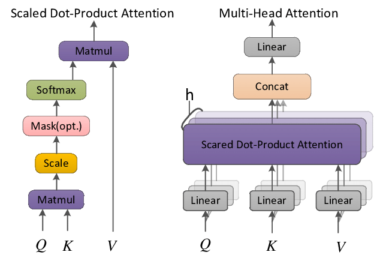
Perché dividere per √d_k?
Con
Q, K a media 0 e varianza 1, il prodotto scalare ha varianza d_k. Per d_k grande (64, 128) gli score esplodono e spingono la softmax in saturazione (gradienti ~0). Dividere per √d_k riporta la varianza a ~1.
Multi-Head Attention
Invece di una sola attention, si calcolano h teste in parallelo su sotto-spazi di dimensione d_head, poi si concatenano e proiettano con Wᴼ:
\mathrm{MultiHead}(Q, K, V) = \mathrm{Concat}(\mathrm{head}_1, \ldots, \mathrm{head}_h) W^O
\mathrm{head}_i = \mathrm{Attention}(Q W_i^Q, K W_i^K, V W_i^V)
Esempio dimensionale: d = 512, h = 8
Nel paper originale il modello usa d = 512 e h = 8 teste. Ogni testa lavora su d_k = d_v = 64: non perché il modello diventi più piccolo, ma perché la dimensione totale viene spartita tra le teste. Ogni testa produce un output M×64; concatenandone 8 si torna a M×512, poi Wᴼ fonde le prospettive.
| Oggetto | Forma | Significato |
|---|---|---|
| Input encoder | M×512 | M token, embedding da 512 dimensioni |
| Q, K, V per testa | M×64 | una prospettiva di attenzione |
| Score attention | M×M | tutti i token contro tutti i token |
| Output concatenato | M×512 | 8 teste ricomposte nella dimensione del modello |
Ogni testa impara a guardare un aspetto diverso: sintassi, semantica, prossimità, riferimenti lontani. Il costo resta dominato dalla matrice M×M, non dal numero di teste preso isolatamente.
Feed-Forward Network (FFN)
Dopo l'attention, ogni token passa per un MLP a due layer (identico per tutti), che introduce la non-linearità mancante:
\mathrm{FFN}(x) = \mathrm{ReLU}(x W_1 + b_1) W_2 + b_2
Nel paper d = 512 → d_ff = 2048 → 512 (espansione 4×).
Decoder e generazione
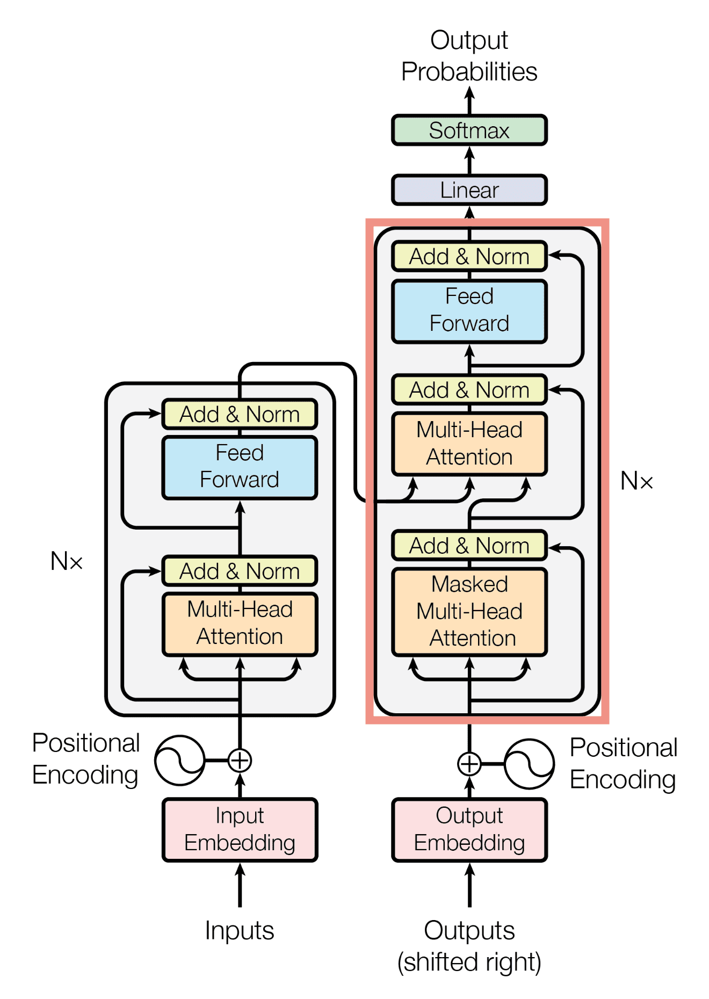
Il decoder ha tre sottoblocchi: masked self-attention, cross-attention verso l'encoder e FFN. Questa differenza è importante: l'encoder capisce tutta la frase sorgente, il decoder genera la frase target in modo autoregressivo.
Masked self-attentionOgni posizione del decoder può guardare solo i token già generati, non quelli futuri.
Cross-attentionLe query vengono dal decoder, key e value dalla memoria dell'encoder: è il punto in cui la traduzione legge l'input.
FFN + proiezioneL'MLP elabora ogni posizione, poi una proiezione lineare produce i logit sul vocabolario.
La maschera causale mette −∞ nelle celle sopra la diagonale della matrice QKᵀ. Dopo la softmax quelle posizioni diventano peso 0: il modello non può "barare" leggendo parole target future.

i usa solo posizioni j≤i: il futuro è mascherato prima della softmax.
S_{ij}^{masked} =
\begin{cases}
S_{ij} & j \le i \\
-\infty & j > i
\end{cases}
"Il gatto dorme" → "The cat sleeps"
Il decoder genera autoregressivamente: [BOS] → "The" → "cat" → "sleeps" → [EOS], ad ogni passo leggendo l'encoder via cross-attention. In training si usa teacher forcing: si fornisce l'output corretto come input, non la predizione precedente.
Positional Encoding sinusoidale
L'attention è invariante per permutazione: senza posizione non distingue "il gatto mangia il topo" da "il topo mangia il gatto". Il PE sinusoidale risolve:
\mathrm{PE}(pos, 2i) = \sin(\frac{pos}{10000^{\frac{2i}{d}}})
\mathrm{PE}(pos, 2i+1) = \cos(\frac{pos}{10000^{\frac{2i}{d}}})
Differenza con il Perceiver
Il Transformer somma il PE all'embedding (
z = embed + PE), mescolando contenuto e posizione. Il Perceiver concatena le Fourier features (z = [contenuto ‖ PE]), tenendole separate. Le frequenze sono linearly spaced (non esponenziali come NeRF — vedi Cap. 5 / Rif. 2), proprio per evitare l'instabilità di training delle frequenze esponenziali.
Transformer vs Perceiver
| Aspetto | Transformer | Perceiver |
|---|---|---|
| Attention | Self (Q,K,V da X) | Cross (Q da latenti, K/V da input) |
| Complessità | O(M²d) | O(MNd) + O(N²d) |
| Positional encoding | Somma (sinusoidale) | Concatenazione (Fourier) |
| Profondità | N layer (6–12) | T iterazioni (8) con weight sharing |
| Attivazione FFN | ReLU | GELU |
| Normalizzazione | Post-norm (originale) | Pre-norm |
Idea chiave
Il Perceiver sostituisce la self-attention O(M²) con la cross-attention O(MN) (N≪M), ma eredita dal Transformer tutto il resto: multi-head, FFN, residual, LayerNorm.
📄 Dal paper originale
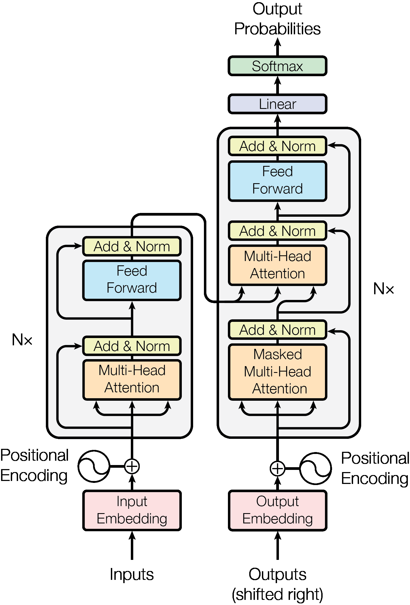
Riferimento: Vision Transformer (ViT)
Il ViT (Dosovitskiy et al., 2021) applica il Transformer alle immagini trattandole come sequenze di patch: niente convoluzioni, ma attention globale fin dal primo layer.
Fonte negli appunti
PDF pp. 185-188 · Sezione O
Apri PDF
Perché il Transformer sulle immagini?
Le CNN catturano dipendenze globali solo dopo molti strati. Il ViT le crea fin dal primo layer (ogni patch parla con tutte le altre). Il prezzo: servono dataset enormi o pretraining + fine-tuning.

Rif. O · Vision Transformer
Vision Transformer: patchify
Patch 16×16 → 196 patch + CLS: il patch size decide la lunghezza della sequenza e il costo della self-attention.
197 token ⇒ matrice attention 197×197
Con patch 16×16: 14×14 = 196 patch, più token CLS. Il Transformer vede una sequenza, non pixel singoli.
Pipeline in 7 passi (ViT-Base)
- Patch splitting: l'immagine
224×224×3è divisa in patch16×16→N = 196patch. - Flattening: ogni patch (
16×16×3 = 768valori) diventa un vettorepᵢ ∈ ℝ⁷⁶⁸. - Patch embedding: proiezione lineare appresa
xᵢ = pᵢ W_E + b_E, conD = 768. - CLS token: si prepone un token speciale che raccoglie l'informazione globale → sequenza
197 × 768. - Positional encoding: si sommano positional embedding appresi (non sinusoidali).
- Encoder:
L = 12layer (LayerNorm → MHAh=12, d_k=64→ residual; LayerNorm → FFN GELU768→3072→768→ residual). - MLP head: si estrae il CLS finale e si classifica.
\hat{y} = \mathrm{softmax}(W_{cls} z_{CLS} + b), \quad W_{cls} \in \mathbb{R}^{K \times 768}
ViT vs CNN
Local vs globalCNN: filtri locali, contesto globale solo nei layer profondi. ViT: self-attention globale fin dal primo layer.
Inductive biasCNN: bias forti (località, traslazione) → efficiente con pochi dati. ViT: pochi bias → flessibile ma assetato di dati.
DatiCNN: bene anche su CIFAR/MNIST. ViT: richiede pretraining su dataset enormi (ImageNet-21k, JFT-300M).
Collegamento al Perceiver
Il ViT riduce
M = 50.176 pixel a 196 patch, ma la tokenizzazione resta domain-specific (solo immagini). Il Perceiver la elimina del tutto: accetta qualsiasi input grezzo e usa la cross-attention per proiettarlo in un latent array fisso N ≪ M.
Idea chiave
ViT = "tokenizzare l'immagine in patch, poi Transformer standard". È il ponte concettuale tra Transformer testuale e Perceiver: stesso motore di attention, ma il ViT resta legato alla griglia 2D, il Perceiver no.
📄 Dal paper originale (ritagliata dal PDF)
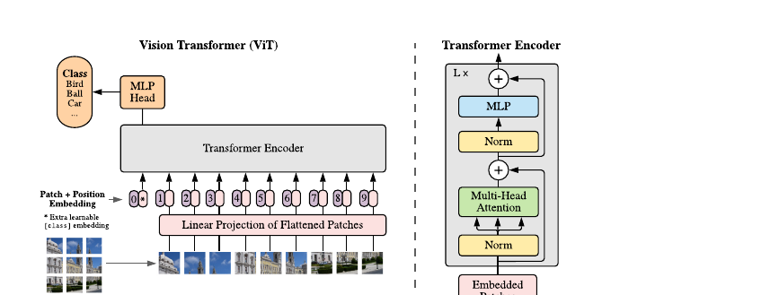
Riferimento: Dropout
Il dropout azzera casualmente una frazione di attivazioni durante il training. L'effetto è quello di addestrare implicitamente un ensemble esponenziale di sottoreti, rendendo la rete più robusta.
\tilde{x}_i = \frac{m_i \cdot x_i}{1-p}, \quad m_i \sim \text{Bernoulli}(1-p)
La divisione per (1-p) (inverted dropout) mantiene il valore atteso dell'output uguale all'input: E[x̃] = x. A inference si usa l'identità.
Train vs. inference
Rif. Q · Dropout
Griglia neuroni — un campione a ogni forward pass
In Training la maschera si ricampiona da sola: a ogni forward pass una frazione p diversa di neuroni si spegne (rosso, rimpicciolito), gli altri restano attivi (blu, scalati ×1/(1−p)). Sposta lo slider per cambiare p; passa a Inference per fissarli tutti accesi.
Training (p=0.5): 16 neuroni azzerati su 32. Scala: ×2.00.
Interpretazione ensemble
Con N neuroni esistono 2^N sottoreti possibili. Ogni forward pass ne campiona una diversa. A inference il modello completo è la media geometrica di tutte.
Dove si applica
| Posizione | Dropout? | Motivo |
|---|---|---|
| Dopo Linear / MLP | ✓ sì | classico punto di applicazione |
| Subito dopo LayerNorm | ✗ no | destabilizza la normalizzazione appena calcolata |
| Dopo Attention scores | ✓ opzionale | attention dropout usato in BERT, non nel Perceiver |
| Inference | ✗ mai | identità: il modello usa tutti i neuroni |
Collegamento al Perceiver
Il Perceiver non usa dropout: il weight sharing tra le T iterazioni agisce già da regolarizzatore implicito. Gli autori mostrano che aggiungere dropout non migliora l'accuracy su ImageNet in questa configurazione.
📄 Dal paper originale
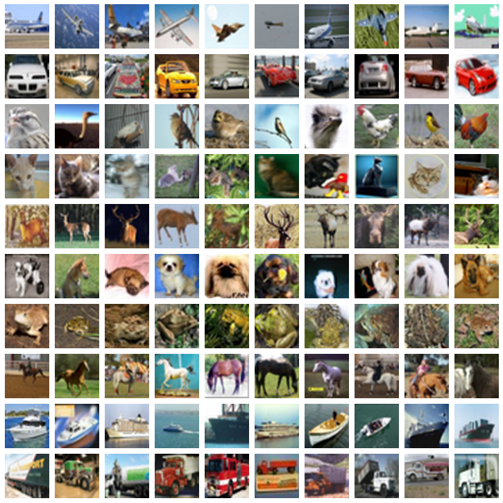
Riferimento: Inizializzazione dei Pesi (Xavier / He)
L'inizializzazione dei pesi determina la varianza delle attivazioni al primo forward pass. Se la varianza cresce strato per strato esplode; se decresce svanisce. In entrambi i casi il training non converge.
Il problema: propagazione della varianza
Per un layer lineare z = Wx con n ingressi e pesi i.i.d. a media zero:
\text{Var}(z_j) = n \cdot \text{Var}(W) \cdot \text{Var}(x)
Per mantenere Var(z) = Var(x) occorre Var(W) = 1/n.
Xavier vs. He: il confronto interattivo
Rif. R · Weight Initialization
Varianza strato per strato
Sposta il cursore per cambiare la profondità. Ogni linea mostra come evolve la varianza delle attivazioni con un'init diversa.
10 layer, Xavier: varianza finale ≈ 1.000 → stabile ✓
| Metodo | Formula Var(W) | Attivazione | Effetto |
|---|---|---|---|
| Random piccolo | 0.0001 | qualsiasi | vanishing 💀 |
| Xavier/Glorot | 2/(n_in + n_out) | tanh, sigmoid | stabile ✓ |
| He/Kaiming | 2/n_in | ReLU, GELU | stabile ✓ |
| Random grande | 1 | qualsiasi | exploding 💥 |
Collegamento al Perceiver
Il latent array usa N(0, 0.02) troncata — piccolo per non dominare il primo forward. Le proiezioni Q/K/V usano He (GELU nell'MLP). Le proiezioni tra dimensioni diverse (C_tot=261 → D_QKV) usano Xavier.
📄 Dal paper originale
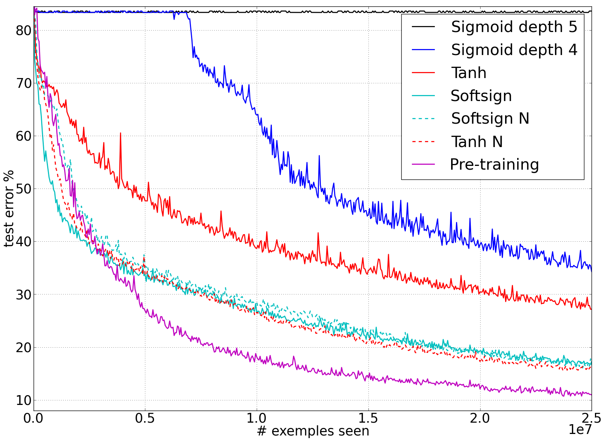
Riferimento: Regolarizzazione L1 e L2
La regolarizzazione aggiunge una penalità alla loss per scoraggiare pesi grandi, riducendo l'overfitting a scapito di un leggero aumento del bias.
L2 (Ridge / Weight Decay)
\mathcal{L}_{\text{reg}} = \mathcal{L} + \frac{\lambda}{2}\|\mathbf{w}\|_2^2
L'aggiornamento SGD diventa w ← w(1 − ηλ) − η∇L: ogni passo scala i pesi verso zero di un fattore ηλ. Prior bayesiano: gaussiano.
L1 (Lasso)
\mathcal{L}_{\text{reg}} = \mathcal{L} + \lambda\|\mathbf{w}\|_1
Penalità uniforme su ogni peso non-zero → sparsità (molti pesi esattamente zero). Prior bayesiano: Laplace.
Distribuzione dei pesi: L1 vs L2 interattivo
Rif. S · Regolarizzazione
Istogramma dei pesi simulati
Sposta λ e cambia il tipo: L1 spinge i pesi a zero (picco centrale), L2 comprime la distribuzione ma non azzera.
Nessuna regolarizzazione: distribuzione gaussiana centrata.
L2 nella loss vs. Weight Decay in Adam
Attenzione
In Adam standard, aggiungere L2 alla loss ≠ weight decay: il gradiente di L2 viene scalato dai momenti adattivi, rendendo la penalità non uniforme. AdamW e LAMB applicano il decay dopo la scalatura:
w ← w − η·Adam_step − ηλw.
| Metodo | Effetto | Sparsità | Usato nel Perceiver |
|---|---|---|---|
| L1 | prior Laplace, penalità uniforme | ✓ sì | ✗ no |
| L2 nella loss | prior gaussiano, scalato dai momenti in Adam | ✗ no | ✗ no |
| LAMB weight decay | decay separato dal passo adattivo | ✗ no | ✓ sì (λ=0.1) |
Collegamento al Perceiver
Il Perceiver usa weight decay λ=0.1 via LAMB. Il decay è separato dal trust ratio per layer, evitando che la scalatura LAMB lo annulli nelle run con large batch.
Riferimento: Data Augmentation
La data augmentation genera varianti trasformate degli esempi di training per aumentare artificialmente la diversità del dataset, riducendo l'overfitting senza raccogliere nuovi dati.
Pipeline standard ImageNet
- Random Resized Crop: scala in [0.08, 1.0], aspect ratio [0.75, 1.33] → resize 224×224
- Horizontal Flip: p = 0.5
- Color Jitter: luminosità ±0.4, contrasto ±0.4, saturazione ±0.4, tinta ±0.1
- Normalization: μ=(0.485, 0.456, 0.406), σ=(0.229, 0.224, 0.225)
Trasformazioni — prova le augmentation
Rif. T · Data Augmentation
Effetto visivo delle augmentation
Seleziona una tecnica per vedere l'effetto sulla griglia-campione. In produzione queste si combinano casualmente.
Originale — nessuna trasformazione
Tecniche avanzate
| Tecnica | Idea | Formula label |
|---|---|---|
| MixUp | interpola 2 immagini e label | ỹ = λy_i + (1−λ)y_j, λ~Beta(α,α) |
| CutMix | patch di x_j incollata su x_i | ỹ proporzionale all'area patch |
| RandAugment | N trasf. casuali a magnitudine M | — |
Collegamento al Perceiver
Il Perceiver usa crop + flip + normalization (nessun MixUp). È più dipendente dall'augmentation rispetto alle CNN perché non ha inductive bias spaziale: senza crop e flip potrebbe memorizzare le posizioni assolute degli oggetti nel training set. Le Fourier features forniscono la posizione esplicita, ma non l'invarianza a scala e composizione.
📄 Dal paper originale
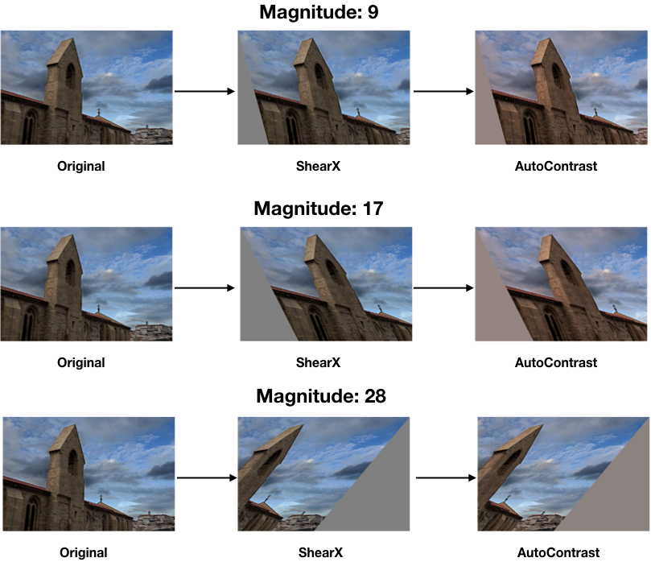
Riferimento: Perceiver IO — Risultati Sperimentali
Stessa architettura, output query diverse, task radicalmente diversi. Questi numeri dimostrano la generalità del Perceiver IO.
Rif. U · Perceiver IO Results
Risultati per task
Seleziona un task per vedere i numeri del paper a confronto con i modelli specializzati.
Optical flow: il Perceiver IO supera modelli specializzati su Sintel Final pur essendo un modello generale.
Messaggio chiave
Lo stesso modello — stessa architettura encoder-process-decode, stessi pesi — adattato solo tramite le output query e le proiezioni di ingresso/uscita:
- Optical flow: query = coordinate pixel + feature immagine → AEE 1.81 Sintel Clean
- Language MLM: query = posizioni byte mascherati → BPC 1.74
- Multimodal autoencoding: query = indicatori modalità → video/audio/label simultaneamente
Idea chiave
Nessun componente domain-specific aggiunto. L'adattamento avviene interamente attraverso le output query. Questo è il contributo centrale del paper: one architecture, many outputs.
📄 Dal paper originale
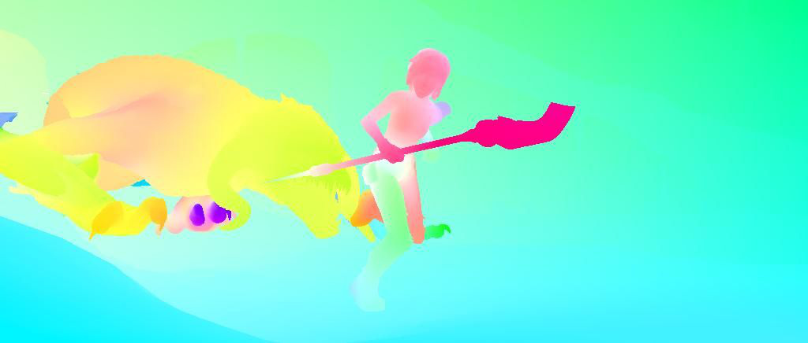
Formulario ragionato
Non è un formulario da imparare a memoria in blocco: è una mappa. Ogni formula va collegata a dove entra nel Perceiver e a quale problema risolve.
Rif. Formulario
Formule a rotazione
Le formule chiave scorrono da sole con lo stadio dove compaiono. Clicca un puntino per saltare a una formula.
C_tot = C + d(2K + 1)
A = Softmax(\frac{QK^T}{√d_QKV})
F = A V
LN(x)_j = γ_j · \frac{x_j - μ}{σ + ε} + β_j
\frac{∂ℒ}{∂z} = p - y
r_t = \frac{||W_t||}{||ΔW_t||}
W_{t+1} = W_t - η · r_t · ΔW_t
Come usarlo
Per l'orale parti sempre da: problema risolto → punto del forward/backward → significato dei simboli. La formula da sola vale poco; il collegamento architetturale è quello che fa capire davvero.
Mappa forward interattiva
Questa è la vista compatta del viaggio dei dati: Input → Fourier → Latenti → Cross-Attention → Latent Transformer → ×T → Pooling/Decoder. Clicca un blocco per vedere cosa cambia davvero.
Input grezzo
Il dato viene portato in una matrice uniforme: per ImageNet, 50.176 pixel e 3 canali RGB.
FormaM×C
Operazionereshape
ControlloM domina il costo
Lettura rapida
| Stadio | Domanda da farsi | Risposta secca |
|---|---|---|
| Input | Che cosa entra? | Una sequenza di elementi, non una struttura domain-specific. |
| Fourier | Dove sta la posizione? | Dentro le feature concatenate a ogni elemento. |
| Latenti | Chi comprime? | N vettori appresi, fissi e molto meno numerosi dell'input. |
| Cross-attention | Dove si rompe la quadraticità? | Q ha N righe, K e V hanno M righe: attenzione N×M. |
| Latent transformer | Dove avviene il calcolo profondo? | Nello spazio latente, costo O(N²) controllato. |
Confronti e specifiche
Qui trovi i confronti da ripetere bene all'esame: non definizioni isolate, ma differenze operative tra scelte architetturali. Leggili come una mappa: prima capisci che cosa cambia nella struttura, poi che costo computazionale produce, infine perché quella scelta aiuta il Perceiver.
Rif. Confronti · complessità
O(M²) vs O(MN): la gara al crescere di M
M cresce da solo: guarda la barra quadratica del Transformer esplodere, mentre quella del Perceiver (N=512 fisso) resta bassa.
Transformer — self-attention O(M²)
Perceiver — cross-attention O(M·N) + O(N²), N=512
M = —
Confronti rapidi
| Confronto | Primo termine | Secondo termine | Frase da ricordare |
|---|---|---|---|
| Transformer vs Perceiver | Self-attention sull'input: costo O(M²). | Cross-attention verso latenti: costo O(MN)+O(N²). | Il Perceiver sposta il calcolo pesante nello spazio latente. |
| Perceiver vs Perceiver IO | Pooling globale e output da classificazione. | Decoder con output queries per output arbitrari. | Perceiver IO separa encode, process e decode. |
| Self-attention vs Cross-attention | Q, K, V dalla stessa sorgente. | Q da una sorgente, K/V da un'altra. | La cross-attention è una lettura guidata: le query decidono cosa chiedere. |
| AdamW vs LAMB | Adam con weight decay disaccoppiato. | AdamW più trust ratio per layer. | LAMB è pensato per large batch e layer con scale diverse. |
| LayerNorm vs BatchNorm | Statistiche sulle feature del singolo esempio. | Statistiche sul batch. | LayerNorm è più adatta a Transformer, sequenze e batch variabili. |
CNN / Transformer / Perceiver
Questo è il confronto architetturale principale. La domanda non è solo "quale modello è più potente?", ma quale ipotesi mette dentro il modello e dove paga il costo computazionale. La CNN assume che la struttura locale dell'immagine sia centrale; il Transformer assume che ogni elemento possa interagire globalmente; il Perceiver cerca la generalità del Transformer, ma sposta il calcolo costoso in un numero fisso di latenti.
CNN classica
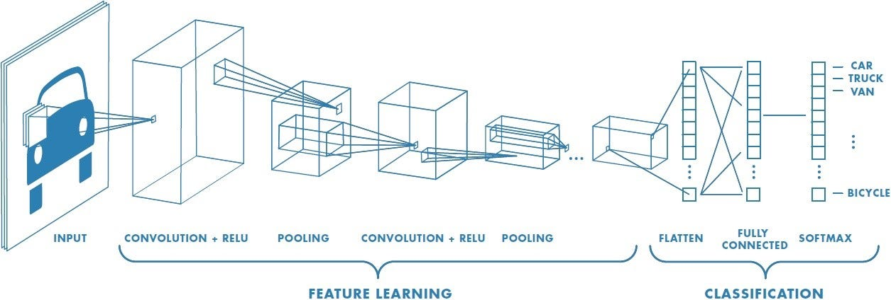
CNN profonda: ResNet50
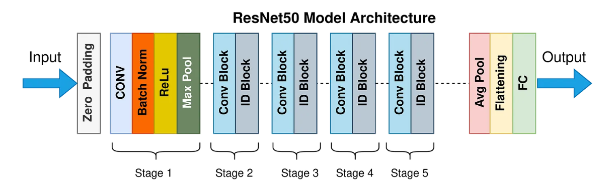
Transformer Encoder

Vision Transformer
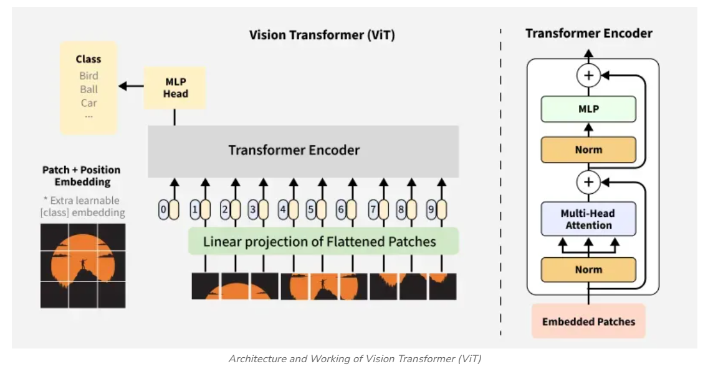
Feature hierarchy CNN
Perceiver bottleneck
inductive bias
receptive field
token mixing
costo computazionale
generalità multimodale
| Aspetto | CNN | Transformer / ViT | Perceiver |
|---|---|---|---|
| Rappresentazione | Griglia spaziale H×W×C; l'immagine resta una mappa 2D. | Sequenza di token o patch con positional encoding. | Byte array generico più Fourier features; poi N latenti appresi. |
| Operazione base | Convoluzione locale: lo stesso kernel scorre sull'immagine. | Self-attention: ogni token confronta query e key con tutti gli altri token. | Cross-attention: i latenti leggono l'input; poi self-attention solo sui latenti. |
| Inductive bias | Località, traslazione, vicinanza dei pixel. | Bias più debole: struttura appresa tramite dati e posizioni. | Bias minimo sull'input, ma forte vincolo di compressione nei latenti. |
| Receptive field | Cresce con profondità, pooling e stride. | Globale già nel primo blocco di attention. | Globale dopo la lettura cross-attentive: ogni latente può raccogliere parti diverse dell'input. |
| Scalabilità | Molto efficiente sulle immagini, ma specializzata. | Flessibile, ma M×M diventa pesante se M è grande. | Costo principale O(MN)+O(N²), con N fisso e molto più piccolo di M. |
| Limite concettuale | Funziona benissimo se il dominio assomiglia a una griglia. | Funziona su sequenze generiche, ma soffre input enormi. | Se la compressione iniziale perde informazione, i latenti non possono recuperarla dopo. |
Cosa dire se chiedono perché non basta una CNN
La CNN è eccellente per immagini perché sfrutta località e peso condiviso, ma questi stessi bias diventano meno naturali su audio lungo, video, point cloud o input multimodali.
Cosa dire se chiedono perché non basta un Transformer
Il Transformer è generale, però la self-attention sull'intero input scala quadraticamente: con migliaia o milioni di elementi il costo esplode.
Cosa dire se chiedono perché il Perceiver non è solo un Transformer piccolo
Non riduce semplicemente i token: introduce una memoria latente appresa che interroga l'input e separa lettura, ragionamento e output.
Frase da orale: CNN = bias locale efficiente; Transformer = interazione globale costosa; Perceiver = lettura globale compressa in latenti fissi, poi ragionamento profondo nello spazio piccolo.
Perceiver originale / Perceiver IO
Il Perceiver originale nasce soprattutto per classificazione: comprime, processa, poi usa pooling e proiezione. Perceiver IO generalizza l'uscita: i latenti finali diventano una memoria letta da query di output.
- Perceiver originale
- Output compatto: media sui latenti finali e classificatore. È naturale per ImageNet, dove basta una distribuzione sulle classi.
- Perceiver IO
- Output flessibile: ogni query chiede una posizione, un token o una previsione. Serve quando l'output non è un solo vettore globale.
- Collegamento architetturale
- L'encoder non deve cambiare ogni volta: cambia il decoder, cioè il modo in cui interroghi i latenti.
Frase da orale: Perceiver IO non cambia l'idea del bottleneck; aggiunge un modo generale di leggere i latenti.
Self-attention / Cross-attention
La differenza non è la formula dell'attention, ma la provenienza di Q, K e V. Nella self-attention la sorgente è una sola; nella cross-attention le query vengono da una memoria e chiavi/valori da un'altra.
| Aspetto | Self-attention | Cross-attention nel Perceiver |
|---|---|---|
| Sorgenti | Q, K, V dallo stesso array. | Q dai latenti; K e V dall'input. |
| Matrice | Quadrata, M×M se applicata all'input. | Rettangolare, N×M. |
| Ruolo | Mescola elementi dello stesso spazio. | Fa leggere l'input ai latenti. |
Frase da orale: la cross-attention è una lettura guidata: i latenti chiedono informazioni, l'input risponde con key e value.
LayerNorm / BatchNorm
Nei Transformer profondi è importante che la normalizzazione non dipenda dalla composizione del batch. Per questo il Perceiver usa LayerNorm in stile pre-norm prima di attention e MLP.
- BatchNorm
- Statistiche calcolate sul batch: molto utile nelle CNN, ma più fragile con sequenze, batch piccoli o lunghezze variabili.
- LayerNorm
- Statistiche calcolate sulle feature dello stesso esempio: più stabile per Transformer, Perceiver e architetture sequence-like.
- Nel Perceiver
- La pre-norm stabilizza i blocchi ripetuti: normalizzi prima del sottoblocco, poi residual aggiunge il percorso diretto.
Frase da orale: LayerNorm rende ogni esempio autosufficiente, quindi si adatta meglio a latenti, sequenze e batch variabili.
Dal primo ottimizzatore a LAMB
La traiettoria da ricordare è SGD → Momentum → Adam → AdamW → LAMB: a ogni passo aggiungi un meccanismo per rendere l'update più stabile o più adatto a reti profonde e batch grandi.
SGD
Update base: vai nella direzione opposta al gradiente. Formula mentale: W nuovo = W - η gradiente.
Pro: semplice e robusto. Contro: stesso passo per tutti i parametri, può oscillare nelle valli strette.
Momentum
Aggiunge una velocità: non guarda solo il gradiente attuale, ma una media delle direzioni precedenti.
Effetto: riduce zig-zag e mantiene inerzia nella direzione buona.
Adam
Combina momentum e adattività: primo momento per la direzione, secondo momento per scalare il passo parametro per parametro.
È spesso rapido all'inizio, soprattutto con gradienti rumorosi o scale diverse.
AdamW
Corregge Adam separando weight decay e update adattivo. La regolarizzazione non viene distorta dal denominatore adattivo.
È lo standard moderno quando si vuole Adam con decadimento dei pesi pulito.
LAMB
Estende AdamW con un trust ratio per layer: confronta norma dei pesi e norma dell'update, poi scala il passo del layer.
Nel Perceiver è utile perché il training ImageNet usa batch grandi e molti blocchi profondi con scale diverse.
| Ottimizzatore | Cosa aggiunge | Quando è utile | Punto debole da ricordare |
|---|---|---|---|
| SGD | Solo gradiente e learning rate. | Baseline chiara, stabile, facile da spiegare. | Non adatta il passo e può procedere lentamente. |
| Momentum | Media delle direzioni precedenti. | Valli strette, gradienti rumorosi, oscillazioni laterali. | Introduce inerzia: se il learning rate è alto può superare il minimo. |
| Adam | Momento di primo ordine, momento di secondo ordine e bias correction. | Reti profonde con parametri su scale diverse. | Il weight decay classico viene mescolato al denominatore adattivo. |
| AdamW | Decoupled weight decay: regolarizzazione separata dall'update adattivo. | Training moderno di Transformer e reti grandi. | Resta parametrico per singolo peso, non ragiona sulla scala dell'intero layer. |
| LAMB | Layer-wise trust ratio: scala l'update in base alla norma del layer. | Large batch, modelli profondi, training ImageNet del Perceiver. | Più complesso da tarare: warmup, batch size e weight decay contano molto. |
Frase da orale: LAMB è AdamW reso layer-wise: non cambia solo il singolo parametro, controlla anche quanto grande deve essere il passo di ciascun layer.
Specifiche ImageNet da ricordare
InputM = 50.176 pixel
Canali FourierC_tot = 261
LatentiN = 512
Dimensione latenteD = 1024
IterazioniT = 8
Self-attention/blockℓ = 6
Teste attentionH = 8
Parametri~45M
Accuratezza78.0%
OttimizzatoreLAMB
Riferimento rapido
Glossario dettagliato
Qui trovi le schede dei termini che compaiono nella lezione. Nel testo puoi cliccare i termini evidenziati per aprire una spiegazione breve; da lì puoi saltare alla scheda completa.
Chiusura
Se devi sintetizzare tutto in una frase: il Perceiver rende generale il Transformer comprimendo input enormi in latenti fissi, poi usa attention profonda nello spazio piccolo e un decoder/pooling adatto al task.
I miei esperimenti — panoramica
Il progetto d'esame: implementazione from-scratch in PyTorch di Perceiver e Perceiver IO (corso B031278, Prof. Frasconi, UniFi), riprodotta su tre modalità — immagini (CIFAR-10), point cloud 3D (ModelNet40), testo (MLM WikiText-103 → GLUE). Qui i risultati reali e come confermano la teoria della lezione.
Setup sperimentale
Framework PyTorch + mixed-precision (AMP) + TensorBoard. Ottimizzatore LAMB, early stopping (patience 10), checkpoint best/last. CIFAR-10: 120 epoche, batch 64, 50k train / 10k val, permutation seed=42. Sette esperimenti CIFAR-10 completati (durate 2.93h–7.52h ciascuno).
progetto · pipeline unica
Una rete, tre modalità: come gira il progetto
La stessa architettura elabora immagini, point cloud e testo. Cosa cambia e cosa resta uguale.
1Dato grezzo
2Byte array M×C
3Fourier PE
4Perceiver encoder
5Pooling / decoder
Cosa sono i dataset
Le tre modalità del progetto usano quattro dataset standard. In breve: cosa sono e cosa contengono.
CIFAR-10 immagini
60.000 immagini a colori 32×32 px, in 10 classi mutuamente esclusive (aereo, automobile, uccello, gatto, cervo, cane, rana, cavallo, nave, camion). Split: 50.000 train / 10.000 test, classi bilanciate.
Nel progetto: input principale dell'ablation study (Fourier vs learned PE, permutazione pixel, weight sharing) e della classificazione con Perceiver IO.
ModelNet40 point cloud 3D
12.311 modelli CAD 3D in 40 categorie di oggetti (sedia, tavolo, aereo, letto, lampada…). Ogni oggetto è campionato come nuvola di 2.048 punti con coordinate (x, y, z). Split: 9.843 train / 2.468 test.
Nel progetto: classificazione 3D e studio dell'effetto delle augmentation (scale / translation / rotation) — modalità non-immagine con la stessa architettura.
WikiText-103 testo
~103 milioni di token estratti da articoli Wikipedia di alta qualità (categoria "Good/Featured"), con punteggiatura e numeri reali (non normalizzati). Qui usato a livello di byte (vocabolario 256), sequenze da 1024.
Nel progetto: pre-training del Perceiver IO con masked language modeling (15% di byte mascherati) — il checkpoint da cui parte il fine-tuning GLUE.
GLUE 8 task NLU
Suite di benchmark per la comprensione del linguaggio (General Language Understanding Evaluation). Gli 8 task usati:
- CoLA — la frase è grammaticalmente accettabile? (2 classi)
- SST-2 — sentiment di recensioni di film (positivo/negativo)
- MRPC — due frasi sono parafrasi? (2 classi)
- STS-B — quanto sono simili due frasi? (regressione 0–5)
- QQP — due domande Quora sono duplicate? (2 classi)
- MNLI — entailment / contraddizione / neutro (3 classi)
- QNLI — la frase risponde alla domanda? (entailment, 2 classi)
- RTE — textual entailment su poco dato (2 classi)
Nel progetto: fine-tuning del checkpoint MLM su ciascun task, per misurare il transfer learning del Perceiver IO sul testo.
Come è fatto il progetto
Struttura del codice
src/perceiver/perceiver.py— classe Perceiver (pooling + linear)src/perceiver/attention.py— CrossAttention, SelfAttention, MultiHeadAttentionsrc/perceiver/encoder.py— PerceiverEncoder con iterazioni + weight sharingsrc/perceiver_io/perceiver_io.py— PerceiverIO con output query + decodersrc/data/{cifar10, modelnet40, wikitext103, glue_tasks}.py— i DataModule per modalitàsrc/utils/positional_encoding.py— Fourier PE (linearly spaced);learned_pe.pyper l'ablationtrain.py— loop di training unico;reproduce.py— launcher interattivo
Librerie: PyTorch 2.x, einops, torchvision, huggingface/datasets, TensorBoard, LAMB (custom).
Come riprodurre
python reproduce.py --list # elenca gli esperimenti
python reproduce.py --run 1 # exp1_baseline_fourier
python reproduce.py --run 6 # modelnet40_baseline
python reproduce.py --run 7 # mlm_wikitext103
# oppure manuale:
python train.py --dataset cifar10 --num_latents 96 --latent_dim 384 \
--num_cross_attend_stages 4 --num_transformer_blocks 4 --num_heads 3 \
--optimizer lamb --lr 0.004 --epochs 120 --batch_size_cifar10 64
Dove andiamo
Qui la panoramica e i dati. I due capitoli successivi sono separati: prima Perceiver originale vs paper (CIFAR-10, ablation, permutation invariance, ModelNet40), poi Perceiver IO vs paper (decoder, output queries, MLM e GLUE).
Perceiver originale vs paper
Questa sezione confronta solo il Perceiver originale del paper con i nostri esperimenti: architettura ridotta, ablation CIFAR-10, permutation invariance, weight sharing e ModelNet40. Perceiver IO è separato nel capitolo dopo.
Architettura: nostra config vs paper
Paper (ImageNet) Jaegle 2021
N=512 latenti · D=1024 · T=8 iterazioni (weight sharing) · cross-attention single-head (d_QKV=261) · self-attention 8 teste (d_head=128) · batch 1024 su 64 TPU · ~45M parametri.
Input: 50.176 pixel grezzi (224×224).
Nostro (CIFAR-10) RTX 3060
N=96 latenti · D=384 · 4 cross-attend stages + 4 transformer blocks · cross/self-attention 3 teste (CIFAR) · batch 64 su 1 GPU · ~3.35M parametri · dropout 0.1–0.2.
Input: 1.024 pixel (32×32). Stesso schema, capacità ridotta.
Risultati Perceiver vs paper
CIFAR-10 ablation
Noi: Fourier 72.02%, RGB-only 61.34%, learned PE permutato 77.60%, Fourier permutato 78.12%.
Conferma il punto del paper: la posizione deve viaggiare insieme all'input. Senza positional encoding il modello perde 10.68 punti.
Permutation invariance
Paper: Fourier 78.0 -> 78.0; learned PE 78.0 -> 70.9.
Noi: Fourier permutato 78.12%, learned PE permutato 77.60%.
Il nostro risultato riproduce qualitativamente la proprietà: Fourier è più robusto del learned PE quando l'ordine dei pixel cambia.
Weight sharing
Paper: sharing = +5.1 punti e 7x meno parametri.
Noi: no sharing = 73.85% vs 68.49%, ma 8.67M vs 3.35M parametri.
Qui la lettura è onesta: nel nostro setup piccolo il weight sharing resta efficiente, ma non migliora l'accuracy.
ModelNet40
Paper: 85.7%.
Noi: 84.24% con scale-only, 83.67% con translation, 83.14% con rotation.
Gap piccolo: stessa architettura su point cloud 3D, senza componenti geometriche specializzate.
Quanto è più piccolo il nostro Perceiver?
Perceiver · ImageNet vs CIFAR
Scala: paper vs noi
Le barre si animano: a parità di architettura, la nostra config è molto più piccola (vincolo della singola GPU).
Paper
Noi
Divergenze dal paper (solo Perceiver)
- Teste cross-attention: paper 1 (single-head) → noi 8 (ModelNet/MLM), 3 (CIFAR)
- Latent array (CIFAR): paper N=512, D=1024 → noi N=96, D=384 (ridotto per la GPU)
- Iterazioni: paper T=8 con weight sharing → noi 4 cross-attend stages (CIFAR)
- Batch: paper 1024 (64 TPU) → noi 64 (1 GPU)
- Dropout: paper nessuno → noi 0.1–0.2 (compensa l'overfitting del modello più piccolo)
- Coerenti col paper: ottimizzatore LAMB, 120 epoche (CIFAR), Fourier features linearly spaced
Implicazione
Le accuracy non vanno lette come replica identica del paper: dataset, scala e hardware sono diversi. Il punto scientifico è che le relazioni ablative - importanza del PE, robustezza alle permutazioni con Fourier, trade-off del weight sharing - sono isolate e leggibili.
Perceiver IO vs paper
Questa sezione è dedicata solo a Perceiver IO: decoder con output queries, classificazione CIFAR-10, pre-training MLM byte-level e fine-tuning GLUE. I risultati del Perceiver originale sono nel capitolo precedente.
Architettura Perceiver IO: nostra config vs paper
Paper Perceiver IO Jaegle 2022
Encoder-process-decode con output queries. Per il linguaggio: 26-40 layer di latent transformer, 201-425M parametri, decoder a cross-attention con query per posizione/token/modalità. Pre-training su Wikipedia+C4.
Obiettivo: output strutturati e GLUE byte-level competitivo con BERT a parità di FLOPs.
Nostro Perceiver IO RTX 3060
N=128 latenti · D=512 · 8 teste · 1 cross-attend stage + 4 transformer blocks · ~9.5-10M parametri · decoder a output query (1 per classificazione, 1 per posizione byte nel MLM).
Stessa idea encode-process-decode, ma scala molto più piccola e pre-training solo su WikiText-103.
I nostri risultati Perceiver IO
Progetto · analysis_results/
Risultati reali IO
Seleziona il ramo Perceiver IO: classificazione con decoder oppure testo byte-level con MLM e GLUE.
Paper vs noi - confronto diretto IO
Classificazione con output query
Paper: Perceiver IO usa query di output per produrre risposte strutturate o globali dallo stesso latent bottleneck.
Noi: CIFAR-10 con 1 output query, 78.20%, pari al miglior Perceiver originale (78.12%).
Conferma locale: aggiungere il decoder non degrada la classificazione globale.
Testo byte-level e GLUE
Paper: GLUE byte-level 81.2 a parità di FLOPs con BERT (81.0); IO++ 81.8 (425M, 40 layer); BERT-UTF8 crolla a 71.5.
Noi: pre-training MLM su WikiText-103 82.20% byte-accuracy; fine-tuning GLUE single-task (QQP 75.65 ... MNLI 46.47).
Il gap su GLUE è grande perché il nostro pre-training è minuscolo (solo WikiText-103 vs Wikipedia+C4) e usiamo 1 query single-task, non la config multitask del paper.
Grafici del progetto
analysis_results/.Verifiche & attention maps
Le attention maps dei latenti, salvate durante il training, sono la verifica visiva della teoria: con le Fourier features l'attenzione si localizza e resta strutturata anche sotto permutazione; senza positional encoding (RGB-only) resta diffusa.
attention_analysis/ · evoluzione
Evoluzione nel training (per esperimento)
Scegli un esperimento: come si specializzano le mappe di attenzione dei latenti epoca dopo epoca.
perceiver_visualizations/ · stile-Perceiver
Mappe in stile Perceiver (singola epoca)
Le stesse attenzioni rese nello stile delle figure del paper. Confronta com'è strutturata l'attenzione tra le configurazioni.
ModelNet40 · cross-attention 3D
Attention sul point cloud 3D
Il point cloud dell'oggetto colorato per attenzione ricevuta dai latenti (renderizzato dai tensori reali del training). Mostra dove il Perceiver "guarda" in 3D.
logs/ · confusion matrix per epoca
Confusion matrix: il modello impara nel tempo
Segui la progressione del training (exp6, Fourier permutato): da matrice diffusa a diagonale dominante. La diagonale = classi corrette; fuori diagonale = confusioni.
- Permutation invariance: 78.12% permutato vs 69.69% non-permutato — verifica empirica della teoria Fourier (Cap. 5/12).
- Early stopping + confusion matrix per epoca: controllo dell'overfitting sul validation set da 10k.
- Gruppi di controllo: ogni research question ha il suo confronto a parità di iperparametri.
Idea chiave
I numeri assoluti sono più bassi del paper — è il prezzo di 1 GPU contro 64 TPU. Ma ogni proprietà architetturale si conferma: PE essenziale, Fourier robusto alle permutazioni (e migliore del learned), bottleneck efficiente, stessa rete su immagini/3D/testo. All'orale, il punto di forza è proprio questo: ho verificato di persona la teoria, e ho documentato onestamente dove i miei risultati divergono (il weight sharing).
Lezione completata
Hai la versione completa: Perceiver, Perceiver IO, riferimenti teorici, formulario, mappa del forward, confronti e la parte esperimenti (panoramica, architettura nostra vs paper, risultati a confronto).
Fonti: appunti_ml_definitivo.tex e analysis_results/.
Esame: come funziona e cosa studiare
Tutto ciò che serve per sostenere l'esame di Deep Learning (corso B031278, Prof. Paolo Frasconi, UniFi — autunno 2025): le modalità ufficiali, come il tuo progetto Perceiver / Perceiver IO soddisfa già i requisiti, cosa studiare in ordine di priorità, i materiali del corso e un piano di ripasso con le domande probabili. Fonte: pagina ufficiale del corso.
Procedura d'esame (ufficiale)
- Un solo orale finale + progetto — non c'è prova scritta.
- Presentazione di 30 minuti (domande incluse): motiva il problema → spiega la derivazione tecnica → descrivi esperimenti e risultati. Strumenti multimediali ammessi ma non obbligatori.
- Gruppi fino a 2 persone (3 solo in casi eccezionali, da giustificare); contributi personali chiaramente identificabili; interrogazione individuale.
- Si consegna solo il codice con brevi istruzioni di riproduzione (dei dati basta un link, niente report scritto): email per zip piccoli, 0x0.st per file > 1 MB, oppure repo privato su Codeberg invitando l'utente
dl.unifi. - Argomento da concordare in ricevimento: venerdì 11:15–13:15 e lunedì 10:45–12:45 (sede S. Marta); variazioni su ing-iam.unifi.it.
- Risorse di calcolo limitate disponibili su richiesta (form Google).
- ⚠️ Nessuna data d'esame né link di prenotazione è pubblicata sulla pagina del corso: concordala con il docente.
A colpo d'occhio
Tipo d'esameOrale + progetto
Prova scrittaNessuna
Presentazione30 min (Q&A incl.)
Gruppomax 2 (3 ecc.)
ConsegnaCodice + istruzioni
Report scrittoNon richiesto
CorsoB031278
DocenteP. Frasconi
Le regole in dettaglio
L'argomento del progetto si sceglie e si concorda col docente in ricevimento. Tipicamente vengono assegnati uno o più paper da leggere, con la richiesta di riprodurre a casa qualche risultato sperimentale in forma semplificata, oppure di applicare lo stesso metodo a dati o setting diversi. È lo studente a essere responsabile di studiare da sé i prerequisiti metodologici e teorici: all'orale ci si aspetta che tu li padroneggi.
Alla consegna non si presenta una relazione scritta: va condiviso il codice con brevi istruzioni per riprodurre i risultati (dei dati basta un link a dove reperirli). Tre vie per la condivisione: zip piccoli via email, 0x0.st per file oltre 1 MB, oppure un repository privato su Codeberg invitando come membro l'utente dl.unifi.
La presentazione dura 30 minuti comprese le domande e deve seguire tre momenti: prima introdurre e motivare il problema, poi spiegare la derivazione tecnica, infine descrivere il lavoro sperimentale e i risultati. Bisogna essere pronti a rispondere sia sulla letteratura di background sia sui dettagli sperimentali. Il progetto può essere di gruppo, ma l'interrogazione è individuale: ciascuno risponde in prima persona di ciò che sa.
Il mio progetto Perceiver IO ✓ — già conforme ai requisiti
Ogni regola d'esame è già coperta dal progetto. All'orale, mappa esplicitamente ciò che hai fatto su ciò che il docente chiede:
- Paper assegnato → letto e implementato: Perceiver e Perceiver IO (Jaegle et al. 2021) from-scratch in PyTorch.
- Riprodurre risultati in forma semplificata → fatto: stessa architettura su tre modalità — CIFAR-10 (immagini), ModelNet40 (point cloud 3D), testo (MLM su WikiText-103 → fine-tuning GLUE).
- Applicare il metodo a dati/setting diversi → fatto: tre modalità con un'unica rete sono esattamente il "setting diverso", coerente con l'idea generale del Perceiver.
- Versione coerente con risorse limitate → fatto: tutto su 1 sola GPU RTX 3060 (il paper usa 64 TPU); numeri assoluti più bassi ma proprietà architetturali confermate.
- Risultati concreti da mostrare → pronti: CIFAR-10 best 78.12% (exp6, Fourier PE permutato), learned PE permutato 77.60%, peggiore solo-RGB senza PE 61.34%; permutation invariance 78.12% permutato vs 69.69% non-permutato; ModelNet40 ≈ 83.14% (scale+rotation).
- Lavoro sperimentale serio: 7 esperimenti CIFAR-10 (120 epoche, batch 64), optimizer LAMB, mixed-precision AMP, TensorBoard, early stopping (patience 10), confusion matrix per epoca.
- Derivazione tecnica → padroneggiata: latent bottleneck (costo lineare), cross-attention O(M·N), self-attention sui latenti O(N²), Fourier PE → permutation invariance, weight sharing (Perceiver come RNN), Perceiver IO con decoder e output queries.
- Consegna conforme → pronta: codice + brevi istruzioni e link ai dati (non i dataset), via repo privato Codeberg con invito a
dl.unifioppure email/0x0.st.
Frase da orale: «Ho verificato di persona la teoria su tre modalità con una sola GPU, e ho documentato onestamente dove i miei risultati divergono dal paper — soprattutto sul weight sharing.»
Da rifinire prima dell'orale
- Cronometrare la scaletta dei 30' nei tre momenti (motivazione → derivazione → esperimenti/risultati), Q&A incluse: con 3 modalità e 7 esperimenti il rischio è sforare.
- Saper spiegare con sicurezza il gap col paper (1 GPU vs 64 TPU): perché i numeri assoluti calano ma permutation invariance e scalabilità lineare restano confermate.
- Essere pronto sulle domande facili da incalzare: weight sharing (Perceiver come RNN) e perché il Fourier PE dà permutation invariance.
Cosa studiare: priorità
Il corso è ampio e l'orale può toccare qualsiasi lezione: la priorità qui serve a distribuire il tempo, non a escludere argomenti. Le voci Alta coincidono con ciò che hai già implementato e dimostrato nel progetto — quindi sia probabili all'orale, sia facili da raccontare con i tuoi dati; le voci Bassa restano da ripassare almeno come idea.
Alta cuore del progetto / molto probabile ·
Media fondamenti importanti ·
Bassa nel programma, ripassa l'idea
Attention e Transformer
AltaMeccanismo di attenzione, soft dictionaries, self-attention, parametrizzazione Q/K/V, multi-head, masking, Transformer.
Perché: è letteralmente il cuore del progetto. Self-attention O(N²) e cross-attention O(M·N) sono ciò che hai implementato; il latent bottleneck che rende il costo lineare è il tuo contributo dimostrato. Padroneggialo a memoria, formule incluse.
Ripassa qui: Percorso → Complessità quadratica (cap.1), Self→Cross-attention (cap.2), Cross-attention (cap.7), Latent transformer (cap.8); Riferimenti → Transformer (cap.34), Softmax (cap.19); Formulario (cap.41). Libri [P24]/[BB24].
Positional encoding, ViT, transfer & self-supervised
AltaPositional encoding, Vision Transformer, transfer learning, pretraining/fine-tuning, self-supervised.
Perché: le Fourier PE dimostrano la permutation invariance (exp6: 78.12% vs 69.69%; senza PE crolla a 61.34%). Il ViT è il diretto concorrente del Perceiver sulle immagini; pretraining→fine-tuning è il tuo MLM→GLUE. Hai dati sperimentali tuoi a supporto.
Ripassa qui: Percorso → Fourier features (cap.5), Input byte array (cap.4), Ablation (cap.13), Permutazione (cap.12); Riferimenti → Fourier/PE (cap.20), ViT (cap.35); Esperimenti (cap.44-46).
Perceiver IO e output flessibile
AltaDecoder a cross-attention, output queries, schema encode/process/decode, output di forma arbitraria.
Perché: è la seconda metà del titolo del progetto. Le output queries interrogano i latenti finali via cross-attention per produrre output di forma arbitraria con lo stesso encoder — ciò che permette di usare la stessa rete su immagini, 3D e testo. Quasi certa la domanda "differenza Perceiver vs Perceiver IO".
Ripassa qui: Percorso → Perceiver IO (cap.15), Output queries (cap.16), Implementazione (cap.17); Riferimenti → Perceiver IO risultati (cap.40); Confronti (cap.43).
Ottimizzazione: SGD, momentum, Adam
AltaGD/SGD, convergenza, minibatch, momentum, metodi adattivi (Adagrad/RMSProp/Adam), AdamW e weight decay.
Perché: nel progetto usi LAMB (variante layer-wise di Adam, parente di AdamW) con batch 64 e AMP. Devi spiegare Adam (momenti, bias correction), Adam vs AdamW (decoupled weight decay) e perché LAMB aiuta coi batch grandi. Quasi certo all'orale.
Ripassa qui: Riferimenti → Ottimizzatori (cap.25); Esperimenti (cap.44-46) per LAMB/AMP. Libro [GBC16].
Autodiff, backprop e init pesi
AltaGrafi computazionali, forward/reverse-mode autodiff, inizializzazione LeCun/Glorot/He.
Perché: hai un'intera sezione "backward pass" nel progetto. Spiega il reverse-mode (efficiente con molti input/poche uscite), il gradiente p−y di softmax+CE e l'init He/Glorot nei layer lineari. Tocca teoria e la tua implementazione PyTorch.
Ripassa qui: Percorso → Backward pass (cap.14); Riferimenti → Inizializzazione pesi (cap.37); Mappa forward (cap.42).
Loss, GLM, softmax e cross-entropy
AltaLoss L2/L1/Huber/hinge/log, GLM, Bernoulli, regressione logistica/softmax, log-sum-exp, geometria softmax.
Perché: softmax e cross-entropy sono il cuore numerico dell'attention (softmax su QKᵀ) e della testa di classificazione. Il log-sum-exp e la stabilità numerica sono ciò che usi con l'AMP. Domanda probabile: "perché softmax nell'attention e come la stabilizzi".
Ripassa qui: Riferimenti → Softmax (cap.19) e Cross-Entropy (cap.21). Libro [P24].
Regolarizzazione e weight sharing
AltaBias-variance, double descent, vista bayesiana, L1/L2/elastic net, weight decay, dropout, early stopping, weight sharing.
Perché: usi early stopping (patience 10), weight decay (AdamW/LAMB) e soprattutto weight sharing (il Perceiver come RNN srotolato — punto distintivo che il docente può approfondire). Double descent è un bonus teorico apprezzato.
Ripassa qui: Riferimenti → Regolarizzazione L1/L2 (cap.38), Dropout (cap.36); Percorso → Weight sharing (cap.9).
Normalizzazione e data augmentation
AltaBatch/layer/instance/group normalization, gate; data augmentation.
Perché: il Perceiver usa LayerNorm in pattern pre-norm (residuo pulito per il gradiente) in ogni sottoblocco. Devi distinguere BatchNorm vs LayerNorm e perché nei Transformer si preferisce LayerNorm. La data augmentation (scale+rotation) è decisiva nel tuo ModelNet40 (~83%).
Ripassa qui: Riferimenti → Layer Normalization (cap.22), Data Augmentation (cap.39); Esperimenti (cap.44-46).
Feature learning, MLP e attivazioni
AltaFeature learning, composizionalità, denoising autoencoder, MLP, rectifier/RBF, GELU, espressività.
Perché: il blocco MLP con GELU è parte esplicita di ogni layer del Perceiver (pre-norm → attention → residual → MLP → residual). Motiva GELU vs ReLU e l'universal approximation; la composizionalità è il razionale del deep stacking.
Ripassa qui: Riferimenti → Funzioni di Attivazione (cap.23); Appendici → Feed-Forward (cap.27), Perceptrone (cap.26); Percorso → Latent transformer (cap.8).
Reti convoluzionali (CNN, ResNet, U-Net)
AltaEquivarianza traslazionale, convoluzione multidim, canali/stride/pooling, conv 1×1/dilatate/transposte, skip connection, ResNet, U-Net, DenseNet.
Perché: il Perceiver nasce come alternativa general-purpose alle CNN: il confronto CNN vs Perceiver (bias di equivarianza vs permutation invariance appresa) è un classico. Le skip/residual delle ResNet sono lo stesso meccanismo dei tuoi blocchi attention. Argomenta "perché non una CNN" sul tuo CIFAR-10.
Ripassa qui: Appendici → CNN (cap.31); Riferimenti → ConvNet (cap.32), ResNet (cap.33), Residual Connections (cap.24); Approfondimenti → Sequenze & visione (X4) per U-Net/segmentazione.
Sequenze, RNN, LSTM/GRU
MediaElaborazione di sequenze, embedding, RNN, vanishing/exploding gradient, RNN bidirezionali, LSTM/GRU, seq2seq, decoding.
Perché: due ponti col progetto — (1) il weight sharing rende il Perceiver analogo a una RNN srotolata (analogia da saper difendere); (2) il vanishing gradient motiva residual+LayerNorm. L'NLP/embedding inquadra il tuo MLM su WikiText.
Ripassa qui: Appendici → RNN (cap.28), LSTM (cap.29), GRU (cap.30); Approfondimenti → Sequenze & visione (X4) per seq2seq/decoding; Percorso → Weight sharing (cap.9).
BERT, contrastive, domain adaptation
MediaBERT pretraining/fine-tuning, triplet loss, contrastive learning (SimCLR), domain adaptation.
Perché: il tuo MLM su WikiText-103 è esattamente il pretraining stile BERT, e il fine-tuning GLUE è il downstream. Devi spiegare il masked language modeling e perché è self-supervised. Contrastive/SimCLR e domain adaptation sono più lontani ma il legame BERT-MLM rende questo blocco facilmente interrogabile.
Ripassa qui: Approfondimenti corso → Self-supervised & BERT (X1); Percorso → Perceiver IO e output queries (cap.15-16); Esperimenti per MLM/GLUE.
Fondamenti e teoria statistica
MediaForme di apprendimento (supervised/unsupervised/RL), storia, empirical risk minimization, classificatori ottimi, generativo vs discriminativo, LDA.
Perché: cornice teorica per inquadrare qualsiasi modello (anche il Perceiver è un classificatore supervisionato addestrato per ERM). Classico apri-orale: collocare il tuo lavoro nel quadro supervised/self-supervised (il tuo MLM è self-supervised).
Ripassa qui: Approfondimenti corso → Fondamenti statistici (X3); intro del Percorso Perceiver per l'inquadramento del task. Libro [BB24].
Iperparametri e meta-learning
BassaGaussian process, expected improvement, multi-fidelity, successive halving, Hyperband, ASHA, meta-learning, domain adaptation.
Perché: nel programma ma lontani dal progetto (1 GPU, ricerca iperparametri manuale, non Bayesian/ASHA). Ripassali a livello di idea (GP come surrogato, expected improvement come acquisition, successive halving = stop precoce dei run scadenti). Bastano i concetti.
Ripassa qui: Approfondimenti corso → Iperparametri & HPO (X2); collega il successive halving al tuo early stopping. Libro [RW06] per i GP.
Programma del corso (lezione per lezione)
Dal sito ufficiale: argomenti e letture consigliate per ogni lezione. Le sigle sono i libri (vedi Materiali qui sotto); i nomi tipo (Vaswani et al. 2017) sono paper. = video-lezione su Moodle.
Sigle:
BB24 Bishop & Bishop · GBC16 Goodfellow · P24 Prince · ZLLS23 d2l.ai · JM24 Jurafsky & Martin · B06 PRML · RW06 Gaussian Processes · Rich = lettura richiesta, Opz = opzionale.
| Data | Argomenti | Letture consigliate |
|---|---|---|
| 17/09 | Forme di apprendimento (supervised/unsupervised/RL), outline del corso, cenni storici | BB24 cap. 1, GBC16 5.1 · Opz: Schmidhuber 2015 |
| 19/09 | Supervised learning ed empirical risk minimization; classificatore binario ottimo | BB24 4.1-4.2, 5.2-5.3, GBC16 5.5 · Opz: Ng & Jordan 2001 |
| 24/09 | Direzione generativa, LDA, MLE, ottimalità degli iperpiani; direzione discriminativa, reti a singolo strato, ruolo della logistica, MLE↔ERM | BB24 3.2, 5.1, GBC16 5.5, 5.7 · Opz: Li et al. 2023; Clark & Jaini 2023 |
| 26/09 | Loss per regressione (L2/L1/Huber), least squares; loss per classificazione (0-1/hinge/log); GLM, Bernoulli in famiglia esponenziale, link canonici | BB24 4.1, 5.4 · Opz: Girshick 2015; Huber 1963 |
| 01/10 | GLM: regressione logistica, log-loss e conditional likelihood; cenni Gaussian/Poisson; classificazione multiclasse e softmax regression | BB24 5.4, 5.1, ZLLS23 4 |
| 03/10 | Interpretazione geometrica della softmax, log-sum-exp; gradient descent e SGD | BB24 7.1-7.2, ZLLS23 4, 12 · Rich: Bottou & Bousquet 2007 · Opz: Shalev-Shwartz & Ben-David 2014; Bottou et al. 2018 |
| 08/10 | GD vs SGD, convergenza, large-scale learning, errori ottim/stima/approx; minibatch e batch size; momentum; metodi adattivi (Adagrad/RMSProp/Adam) | BB24 7.2-7.3 · Rich: Bottou & Bousquet 2007; Hinton 2012; Kingma & Ba 2014 · Opz: Shallue et al. 2019; Duchi et al. 2011 |
| 15/10 | Feature biologicamente ispirate, feature/end-to-end learning, composizionalità, training layerwise, denoising autoencoder, MLP, rectifier | BB24 6, GBC16 6, 6.1, 6.3, 6.4, 14.2 · Rich: Bengio et al. 2013 · Opz: Lee et al. 2009; Ringach 2002; Hinton & Salakhutdinov 2006; Serre et al. 2005; Hinton et al. 2006; Vincent et al. 2008; Glorot et al. 2011; Nair & Hinton 2010 |
| 16/10 | 📹 Video — framework di DL, ambiente di sviluppo, tensori, lavoro remoto | ZLLS23 2.1-2.3 · Rich: Video lecture 1 |
| 17/10 | Espressività delle feedforward, basis function, RBF, Leaky/Parametric ReLU, MLP come funzioni lineari a tratti, grafi computazionali e autodiff | BB24 8, 9.1 · Rich: Baydin et al. 2017 · Opz: Poggio & Girosi 1990; Maas et al. 2013; He et al. 2015; Montúfar et al. 2014 |
| 22/10 | Autodiff forward/reverse-mode, inizializzazione (LeCun/Glorot/He), regolarizzazione per penalità, ridge | BB24 8, 7.2.5, 9.1; GBC16 6.5, 7.1, 8.4; ZLLS23 2.5, 5.4.2, 5.5 · Rich: Gebremedhin & Walther 2020 · Opz: Rumelhart et al. 1986; Belkin et al. 2019 |
| 23/10 | 📹 Video — regressione logistica in TensorFlow puro, TensorBoard, logistica in PyTorch | ZLLS23 4 · Rich: Video lecture 2 (+ src) |
| 24/10 | Interpretazioni del ridge (L2), bias-variance e double descent, MAP bayesiano, L1/lasso/elastic net | BB24 9.1, 9.2, 9.3.2; GBC16 7.1, 7.2, 7.8, 7.9 · Opz: BB24 11 |
| 25/10 | Weight decay, AdamW, weight sharing, early stopping, dropout, GELU e relazione col dropout | BB24 7.2.5, 7.4, 9.1.3; GBC16 7.4, 8.4, 8.7.1 · Rich: Srivastava et al. 2014 · Opz: Loshchilov & Hutter 2018; Baldi & Sadowski 2014; Wager et al. 2013; Hendrycks & Gimpel 2020 |
| 31/10 | Data augmentation, batch/layer normalization, reti convoluzionali Nd e loro inductive bias | BB24 9.1.3, 7.4, 10.1; GBC16 9.1, 9.2 · Rich: Ioffe & Szegedy 2015 · Opz: Ba et al. 2016; Salimans et al. 2016; Ioffe 2017 |
| 04/11 | 📹 Video — autodiff in TensorFlow e PyTorch, MLP in TF/Keras | ZLLS23 2.5, 5 · Rich: Video lecture 3 (+ src) |
| 05/11 | Equivarianza traslazionale, convoluzione Nd, canali, stacking conv, testa di classificazione, stride e pooling, conv dilatate/transposte | BB24 10.1-10.2; GBC16 9.3-9.5; ZLLS23 7.2-7.6 · Rich: Dumoulin & Visin 2016 · Opz: Ngiam et al. 2010; Yu & Koltun 2015; Radford et al. 2015 |
| 07/11 | Bottleneck (conv 1×1), normalizzazione CNN (batch/layer/instance/group), gate, mixture of experts, skip (highway/residual), EfficientNet, segmentazione e U-net, FCN, Dice loss | BB24 10.4-10.5; ZLLS23 9.4 · Rich: Wu & He 2018; Ronneberger et al. 2015 · Opz: He et al. 2015; Tan & Le 2019; Jacobs et al. 1991; Srivastava et al. 2018; Milletari et al. 2016 |
| 11/11 | 📹 Video — dataloader in PyTorch, CNN e DenseNet in PyTorch | ZLLS23 7 · Rich: Video lecture 4 (+ src); Huang et al. 2017 · Opz: Walmsley et al. 2021; Hui et al. 2022 |
| 12/11 | Sequenze, task NLP di base, embedding, RNN e grafo computazionale, vanishing/exploding gradient | BB24 12.2; JM24 9; GBC16 10.1-10.2 · Opz: Hochreiter et al. 2001 |
| 14/11 | RNN stacked/bidirezionali, gate (LSTM/GRU), seq2seq, encoder-decoder, decoding (greedy, Viterbi, beam search, sampling) | BB24 11.3, 12.2; ZLLS23 10; JM24 8.4, 9.1 · Rich: Chung et al. 2014; Hochreiter & Schmidhuber 1997; Sutskever et al. 2014 |
| 19/11 | Attention originale, soft dictionaries, LM ricorrenti con attention, traduzione automatica, attention per classificazione, intro ai Transformer | BB24 12.2 · Rich: Bahdanau et al. 2014 · Opz: Graves et al. 2014; Yang et al. 2016; Sukhbaatar et al. 2015 |
| 21/11 | Self-attention, parametrizzazione, complessità, multi-head, masking e batch matmul, Transformer | BB24 12.1 · Rich: Vaswani et al. 2017; Rogozhnikov 2022 · Opz: Dangel 2024 |
| 26/11 | Positional encoding, Vision Transformer, transfer learning, pretraining/fine-tuning, self-supervised (pretext task) | BB24 12.1-12.4, 6.3 · Rich: Vaswani et al. 2017; Dosovitskiy et al. 2020 · Opz: Devlin et al. 2018; Gidaris et al. 2018; Hun et al. 2016; Raghu et al. 2019 |
| 02/12 | 📹 Video — hyperparameter optimization, algoritmo elementare, introduzione ai Gaussian process | B06 2.3, 3.3; RW06 1, 2, 4 · Rich: Video lecture 5 · Opz: Franceschi et al. 2025; risorse: GPyTorch, GPFlow |
| 05/12 | BERT pretraining/fine-tuning, triplet loss, contrastive learning, SimCLR, domain adaptation, HPO model-based | JM24 cap. 11 · Rich: Devlin et al. 2018; van den Oord et al. 2019; Schroff et al. 2015; Chen et al. 2020 · Opz: Hospedales et al. 2021; Rozantsev et al. 2019; Tzeng et al. 2017; Li et al. 2017; Doersch et al. 2016; He et al. 2022; He et al. 2020; Sohn 2016 |
| 10/12 | HPO model-based, expected improvement, multi-fidelity, successive halving, Hyperband, ASHA, meta-learning, domain adaptation, reweighting, Mixup | Rich: Snoek et al. 2012; Bergstra et al. 2013; Li et al. 2018 · Opz: Jamieson & Talwalkar 2016; Li et al. 2020; Yogatama et al. 2015; Jones et al. 1998; Frazier 2018; Finn et al. 2017; Franceschi et al. 2018; risorse: GPyOpt, Optuna, Syne Tune |
Date senza lezione: 10/10, 28/11, 03/12. Tutte le letture sono copiate dalla colonna "Readings/Handouts" del sito ufficiale.
Materiali del corso
Libri (tutti gratuiti online)
BB24
Deep Learning: Foundations and Concepts
Bishop & Bishop, 2024
Testo principale, moderno: copre quasi tutto il corso. Con [P24] per attention/transformer.
P24
Understanding Deep Learning
Prince, 2024
Intuizioni e figure; riferimento d'elezione per attention e transformer.
GBC16
Deep Learning
Goodfellow, Bengio, Courville, 2016
Il classico: teoria, ottimizzazione, regolarizzazione.
ZLLS23
Dive into Deep Learning
Zhang et al., 2023
Pratico, con codice; CNN/RNN affiancate da implementazioni.
JM24
Speech and Language Processing (3ª ed.)
Jurafsky & Martin, draft
NLP, attention e BERT — utile per la modalità testo (MLM → GLUE).
B06
Pattern Recognition and Machine Learning
Bishop, 2006
Fondamenti probabilistici (softmax, distribuzioni).
RW06
Gaussian Processes for Machine Learning
Rasmussen & Williams, 2006
Per i Gaussian process e i ragionamenti sugli iperparametri.
Video-lezioni e codice companion
Le 5 video-lezioni del corso sono sul portale e-l.unifi.it (Moodle, accesso UNIFI). Per le sessioni Q&A sulle video-lezioni occorre inviare in anticipo le domande al docente (la Q&A si tiene una settimana dopo la pubblicazione). Il codice companion è già scaricato in locale in materiali_corso/ (v2/v3/v4.tgz: regressione logistica, autodiff, dataloader, CNN in TensorFlow/PyTorch) — utile da confrontare con la tua implementazione from-scratch.
Consegna, accesso e risorse
Codeberg — repo privato (invita
dl.unifi)
0x0.st — file > 1 MB
Form risorse di calcolo
Proxy fuori campus: proxy-auth.unifi.it:8888
Piano di ripasso (ultimi ~5–7 giorni)
Principio guida: prima i blocchi ad alta priorità legati al progetto (Perceiver/Perceiver IO, attention, le proprietà dimostrate negli esperimenti), poi i riferimenti teorici di contorno; in parallelo, costruisci e prova la presentazione un po' ogni giorno, così non arrivi all'ultimo a improvvisare la scaletta.
1
Cuore del progetto: Perceiver e attention
Cross-attention (Q latenti, K/V input, O(M·N)) e self-attention sui latenti (O(N²)); il latent bottleneck e il costo lineare. Collega ogni concetto alla tua implementazione. Presentazione: prima bozza di scaletta a 30'.
2
Perceiver IO + proprietà dimostrate
Decoder + output queries; dal Perceiver al Perceiver IO. Ripassa permutation invariance (78.12% vs 69.69%) e weight sharing. Presentazione: assegna i minutaggi e prepara figure chiave (mappa forward, schema attention).
3
Esperimenti e risultati (il tuo valore aggiunto)
Numeri a memoria: CIFAR-10 (exp6 78.12%, learned PE 77.60%, solo-RGB 61.34%), permutazione 78.12% vs 69.69%, ModelNet40 ~83.14%. Contesto hardware (1 RTX 3060 vs 64 TPU) e strumenti (LAMB, AMP, TensorBoard, early stopping). Prima prova a voce cronometrata.
4
Riferimenti teorici di contorno
Softmax, attivazioni, ottimizzatori, CNN/RNN/LSTM/GRU, Transformer/ViT, dropout, init pesi, regolarizzazione, data augmentation. Modalità testo: MLM su WikiText-103 → GLUE. Seconda prova a voce, rifinendo i punti deboli.
5
Anticipare le domande + prove rifinite
Prepara le risposte alle domande probabili (vedi sotto). Prova a voce completa e cronometrata (target 30'), idealmente davanti a qualcuno o registrandoti.
6
Cuscinetto — chiudi i buchi
Riprendi [GBC16]/[P24]/[BB24] sui punti ancora incerti; ultima prova integrale della presentazione coi tempi giusti.
7
Alleggerisci
Solo ripasso passivo (scaletta, numeri chiave, figure) e una prova a voce leggera. Niente argomenti nuovi.
esame · scaletta
La presentazione in 30 minuti
I cinque momenti dell'esposizione, con i tempi. Lascia scorrere o clicca uno step.
1Motiva · 0–3'
2Architettura · 3–10'
3Perceiver IO · 10–14'
4Esperimenti · 14–24'
5Conclusioni + Q&A · 24–30'
Schema scaletta 30'
| Minuti | Contenuto |
|---|---|
| 0–3' | Problema e idea del Perceiver (input eterogenei, una rete per 3 modalità) |
| 3–10' | Architettura: latent bottleneck, cross-attention, self-attention, Fourier PE, weight sharing |
| 10–14' | Da Perceiver a Perceiver IO (decoder + output queries) |
| 14–24' | Esperimenti e risultati (7 run CIFAR-10, numeri chiave, permutazione, ModelNet40, hardware) |
| 24–28' | Conclusioni (cosa è confermato del paper, limiti dell'hardware) |
| 28–30' | Margine per le domande |
Rituale del giorno prima
Niente argomenti nuovi: solo ripasso passivo della scaletta e dei numeri chiave (78.12%, 77.60%, 61.34%, 69.69%, 83.14%). Una sola prova a voce rilassata e cronometrata. Verifica che slide/figure, file e demo siano accessibili (testa il proxy UNIFI se ti serve mostrare materiale online). Tieni a portata le 5 domande probabili. Riposa: arrivare lucidi conta più di un ripasso notturno.
Domande probabili all'orale
Clicca una domanda per vedere la traccia di risposta (1-2 righe, da espandere a voce).
Sul progetto
Perché il bottleneck di latenti rende il costo lineare nell'input?
La cross-attention iniziale usa N query latenti (N fisso e piccolo) contro M elementi di input: costo O(M·N), lineare in M. Tutta la self-attention successiva agisce solo sugli N latenti, costo O(N²) indipendente da M.
Cross-attention vs self-attention: confronta i costi O(M·N), O(N²), O(M²).
La self-attention diretta sull'input costa O(M²) e per M grande (es. 50k pixel) è proibitiva. Il Perceiver la sostituisce con una cross-attention O(M·N) per proiettare nel bottleneck, poi self-attention O(N²) tra i latenti. Con N≪M si passa da quadratico a lineare in M.
Cosa contengono Q, K, V nella cross-attention del Perceiver?
Q viene dall'array latente (appreso), K e V dall'array di input (byte array). I latenti "interrogano" l'input estraendone un riassunto compresso di dimensione fissa.
Perché le Fourier features danno permutation invariance?
Senza positional encoding l'attention è già permutation-equivariant sull'insieme di input; le Fourier features iniettano la posizione nel valore di ciascun elemento, così l'ordine in cui passi gli elementi non conta — l'informazione spaziale viaggia col token, non con la sua posizione nella sequenza.
Cosa hai osservato sperimentalmente sulla permutation invariance?
Su CIFAR-10 con Fourier PE l'accuratezza con pixel permutati (78.12%) è risultata superiore al caso non permutato (69.69%): la rete non sfrutta la griglia ma solo posizione+RGB per token, confermando l'invarianza alla permutazione.
Perché senza positional encoding il modello crolla (61.34%)?
Con solo RGB e nessuna informazione di posizione, token spazialmente diversi ma con stesso colore sono indistinguibili: la rete perde la struttura spaziale e l'accuratezza cala drasticamente.
Perché il weight sharing si comporta come una RNN e regolarizza?
Riusando gli stessi pesi nei blocchi ripetuti, ogni iterazione è come uno step ricorrente che raffina lo stesso stato latente (come una RNN srotolata nel tempo). Condividere i pesi riduce drasticamente i parametri, agendo da regolarizzatore e prevenendo overfitting.
Differenza tra Perceiver e Perceiver IO?
Il Perceiver produce un singolo output (es. classificazione) con pooling dei latenti. Il Perceiver IO aggiunge un decoder a cross-attention: le output queries definiscono la struttura dell'output, permettendo output arbitrari (per-pixel, per-token, multi-task) di dimensione disaccoppiata dai latenti.
Come hai gestito 3 modalità con la stessa rete?
La struttura interna (cross-attention → latenti → self-attention) è identica per tutte; cambiano solo la tokenizzazione dell'input e l'encoding posizionale (coord 2D pixel, coord 3D punti, posizione token). Il bottleneck rende la rete agnostica alla modalità.
Perché i tuoi numeri sono sotto il paper?
Il paper usa 64 TPU, io una sola RTX 3060: batch, durata del training e dimensione del modello sono molto più piccoli, quindi i numeri assoluti sono più bassi. Ma le proprietà architetturali (permutation invariance, costo lineare, multimodalità) restano confermate.
Teoria generale
Differenza tra Adam, AdamW e LAMB?
Adam usa momenti primo/secondo adattivi per parametro. AdamW disaccoppia il weight decay dal gradiente adattivo (decay applicato direttamente ai pesi), migliorando la regolarizzazione. LAMB aggiunge una normalizzazione layer-wise del learning rate, permettendo batch molto grandi mantenendo la stabilità.
GD vs SGD vs minibatch? Cosa aggiunge il momentum?
GD usa tutto il dataset (stabile, lento); SGD un campione (rumoroso, veloce); minibatch è il compromesso. Il momentum accumula una media mobile dei gradienti, smorzando le oscillazioni e accelerando nelle direzioni consistenti.
Batch normalization vs layer normalization?
BatchNorm normalizza ogni feature sulla dimensione del batch (dipende dalla batch size, usa statistiche running a inference). LayerNorm normalizza sulle feature di ciascun campione indipendentemente dal batch: per questo è usata nei Transformer/sequenze.
Cos'è il vanishing gradient e come LSTM/GRU lo risolvono?
Nel backprop attraverso molti step i gradienti vengono moltiplicati ripetutamente e tendono a 0 (o esplodono). LSTM/GRU introducono un cell state con connessioni additive e gate che lasciano fluire il gradiente quasi inalterato, mitigando il problema.
Differenza tra LSTM e GRU?
La GRU è più semplice (2 gate: update e reset, niente cell state separato), meno parametri e spesso più veloce; la LSTM (3 gate + cell state) è più espressiva. Prestazioni spesso comparabili.
Cosa fa l'autodiff reverse-mode?
Costruisce il grafo computazionale, fa un forward salvando i valori intermedi, poi propaga all'indietro le derivate via chain rule (una sola passata per il gradiente rispetto a tutti i parametri). Efficiente quando gli output sono pochi e gli input molti — il caso del training.
Spiega bias-variance e double descent.
Bias alto = underfitting; varianza alta = overfitting. La curva classica è a U. Il double descent mostra che oltre il punto di interpolazione, aumentando ancora la capacità, l'errore di test torna a scendere — tipico delle reti sovraparametrizzate.
L1 (lasso) vs L2 (ridge)? E il weight decay in AdamW?
L2 penalizza la somma dei quadrati dei pesi (li riduce, soluzione unica); L1 la somma dei valori assoluti, inducendo sparsità (azzera pesi). Il weight decay penalizza i pesi grandi (≈ L2 nel GD puro); in Adam interagisce male con la normalizzazione adattiva, quindi AdamW lo disaccoppia applicandolo direttamente ai pesi.
Perché il dropout regolarizza?
Disattivando casualmente neuroni durante il training, impedisce la co-adattazione e forza ridondanza nelle feature; equivale ad allenare un ensemble di sottoreti. A inference si usano tutti i neuroni (scalati).
Init Xavier (Glorot) vs He?
Xavier/Glorot bilancia la varianza tra fan-in e fan-out (per tanh/sigmoid). He scala sul solo fan-in (varianza 2/fan-in, per ReLU che azzera metà degli output). Usare quella sbagliata può causare vanishing/exploding delle attivazioni.
ViT vs CNN?
La CNN ha bias induttivi (località ed equivarianza traslazionale) che la rendono dati-efficiente; il ViT divide l'immagine in patch e usa self-attention globale, con pochi bias induttivi — più potente su grandi dataset ma più dato-affamato, spesso serve pretraining.
Self-attention: come funziona e perché multi-head?
Ogni token genera Q, K, V; i pesi di attenzione sono softmax(QKᵀ/√d) applicati a V — ogni token aggrega gli altri pesati per rilevanza. Il multi-head ripete in più sottospazi paralleli, catturando relazioni diverse, poi concatena.
BERT: pretraining e fine-tuning?
Pretraining self-supervised con Masked Language Modeling (predire token mascherati) + Next Sentence Prediction su grandi corpora. Poi fine-tuning supervisionato sul task downstream con una testa task-specific. È un encoder bidirezionale.
Cos'è una skip connection (ResNet) e perché aiuta?
Aggiunge l'input di un blocco alla sua uscita (y = F(x)+x): facilita il flusso del gradiente in reti profonde (mitiga il vanishing), permettendo di apprendere residui e addestrare centinaia di layer.
In una frase
L'esame è un orale unico con progetto: 30 minuti per raccontare perché il Perceiver risolve un problema reale, come funziona tecnicamente e cosa hai verificato sperimentalmente. Hai già il progetto, i dati e la teoria nel tool: ti resta da studiare in ordine di priorità, preparare la scaletta e provare a voce.
Self-supervised learning, BERT e rappresentazioni
L'apprendimento self-supervised (SSL) pre-addestra grandi modelli su enormi quantità di dati non etichettati, costruendo le etichette dai dati stessi. È il cuore dei modelli di rappresentazione moderni: prima si impara una rappresentazione generale con un compito "pretesto", poi la si trasferisce (fine-tuning) al compito reale con poche etichette. Qui: SSL in generale, il suo esempio nel linguaggio (BERT/MLM), due metodi per immagini/embedding (contrastive learning e triplet loss) e il domain adaptation.
self-supervised · MLM
Come impara BERT: il Masked Language Modeling
Dal testo non etichettato alla loss, senza una sola annotazione umana. Clicca uno step o lascia scorrere.
1Testo grezzo
2Maschera 15%
3Encoder bidirez.
4Predici token
5Cross-entropy
Self-supervised learning: cos'è e perché
Il self-supervised learning è una forma di apprendimento non supervisionato in cui il segnale di supervisione è generato automaticamente dai dati stessi. Si nasconde o trasforma parte dell'input e si chiede al modello di ricostruirla/predirla: questo è il pretext task, un compito "finto" il cui solo scopo è forzare la rete a imparare rappresentazioni utili.
Perché serve: le etichette sono costose e scarse, mentre i dati grezzi sono praticamente illimitati. SSL sfrutta questo oceano di dati non etichettati per imparare una rappresentazione generale, che poi richiede pochissimi dati etichettati per il compito finale (downstream task). È il motore dei foundation model.
- Esempi di pretext task: predire token mascherati (MLM), predire la rotazione di un'immagine, colorizzazione, jigsaw, instance discrimination.
- Schema:
pretraining (dati non etichettati, pretext) → fine-tuning (pochi dati etichettati, downstream).
BERT: encoder Transformer bidirezionale e MLM
📄 Dal paper originale (ritagliata dal PDF)
BERT (Bidirectional Encoder Representations from Transformers) è un encoder Transformer (niente decoder) addestrato in modo self-supervised sul testo. La novità è la bidirezionalità: ogni token vede insieme il contesto a sinistra e a destra, a differenza dei modelli autoregressivi tipo GPT che vedono solo il passato.
Il pretext task principale è il Masked Language Modeling (MLM): si maschera casualmente ~15% dei token e si predicono dal contesto bidirezionale. Dettaglio chiave: di quel 15%, l'80% diventa [MASK], il 10% un token casuale, il 10% resta invariato — questo riduce il mismatch tra training e fine-tuning, dove [MASK] non compare mai. La loss è una cross-entropy sui soli token mascherati.
Il secondo task originale è la Next Sentence Prediction (NSP): date due frasi A e B, predire se B segue A (binaria sul token [CLS]), costruita bilanciata 50% IsNext / 50% frase casuale (NotNext). Studi successivi (RoBERTa) l'hanno mostrata poco utile, ma fa parte del BERT originale.
- Token speciali:
[CLS](riassunto della sequenza, per classificazione),[SEP](separatore),[MASK]. - Bidirezionale (vede tutto il contesto) vs autoregressivo unidirezionale (GPT).
Pretraining → fine-tuning
Pretraining: una volta, costoso, su grandi corpora non etichettati con MLM (+NSP) → modello generale. Fine-tuning: si aggiunge una piccola testa task-specific (di solito un layer lineare sull'output di [CLS]) e si addestra su dati etichettati del compito reale, con learning rate basso. La stessa backbone serve molti task (sentiment, NLI, QA) cambiando solo testa e dati.
Legame col progetto: la modalità testo replica il paradigma BERT: il pretraining MLM su WikiText-103 è il pretext self-supervised, il fine-tuning su GLUE è il downstream. La differenza: Perceiver IO lavora su byte UTF-8 grezzi (niente tokenizer) e usa il decoder a query invece del
[CLS] interno — in classificazione basta 1 output query (l'equivalente esterno del [CLS]); in MLM servono molte query (una per posizione mascherata). Il paper confronta proprio Perceiver IO vs BERT a parità di FLOPs su GLUE.Contrastive learning e SimCLR
contrastive · SimCLR (Chen et al. 2020)
Come funziona il contrastive learning
Avvicinare le viste della stessa immagine, allontanare le altre — senza etichette.
1Due viste
2Encoder condiviso
3Projection head
4Pull / push
5Batch grandi
Il contrastive learning impara confrontando esempi: avvicina nello spazio delle feature le "viste" positive dello stesso esempio e allontana i negativi. Le viste positive nascono da due augmentation diverse della stessa immagine; gli altri elementi del batch sono negativi (quindi è self-supervised, niente etichette).
SimCLR è il metodo canonico: (1) augmentation forti e composte (crop+resize, color jitter, blur); (2) un encoder (es. ResNet); (3) una testa di proiezione (MLP) verso lo spazio dove si applica la loss — poi si scarta e si usano le feature dell'encoder; (4) loss NT-Xent (softmax sulle similarità coseno con temperatura). Serve batch molto grandi perché i negativi sono gli altri elementi del batch.
- NT-Xent:
L = −log[ exp(sim(z_i,z_j)/τ) / Σ_{k≠i} exp(sim(z_i,z_k)/τ) ], sim = coseno, τ = temperatura. - NT-Xent è una forma di InfoNCE; alternative come MoCo (momentum encoder + memory bank) e BYOL/SimSiam evitano i batch grandi o i negativi espliciti.
Triplet loss
triplet loss · FaceNet (Schroff et al. 2015)
Triplet loss: anchor, positive, negative
Imparare uno spazio in cui la distanza misura la similarità.
1Tripla
2Embedding
3Obiettivo
4Loss
5Hard mining
La triplet loss impara uno spazio di embedding con triple (anchor, positive, negative): l'anchor dev'essere più vicino al positive (stessa classe) che al negative (classe diversa) di almeno un margine m. Formula: L = max(0, d(a,p) − d(a,n) + m). Se la condizione è già soddisfatta la loss è zero (tripla facile). Usi: ranking, verifica di volti/identità (FaceNet), retrieval.
- Con embedding L2-normalizzati vale
d²(a,b) = 2 − 2·cos(a,b): il margine ha interpretazione geometrica precisa. - vs NT-Xent: triplet usa 1 negativo per tripla; il contrastive ne usa molti dal batch. Hard negative mining = scegliere triple difficili.
Domain adaptation
Affronta il domain shift: il modello è addestrato su un dominio source (etichettato) ma deve funzionare su un target con distribuzione diversa (spesso poco/non etichettato). L'idea è allineare le distribuzioni delle feature: (1) feature alignment — minimizzare una discrepanza (MMD, o allineare le covarianze come CORAL); (2) adversariale — un domain discriminator prova a distinguere source da target, l'encoder è addestrato (gradient reversal, DANN) a ingannarlo → feature domain-invariant.
Domande d'orale
Cos'è un pretext task e perché si usa?
È un compito "finto" le cui etichette si ricavano dai dati stessi (es. predire token mascherati); serve a forzare la rete a imparare rappresentazioni trasferibili sfruttando dati non etichettati abbondanti.
Perché BERT è bidirezionale e GPT no?
BERT è un encoder addestrato con MLM, quindi ogni token vede contesto sinistro e destro insieme; GPT è autoregressivo (predice il token successivo) e può vedere solo il passato.
Com'è fatto il mascheramento in BERT?
Si seleziona ~15% dei token; di questi 80% → [MASK], 10% → token casuale, 10% invariati. Serve a ridurre il mismatch col fine-tuning, dove [MASK] non appare.
Cosa fa la projection head in SimCLR e che fine fa?
È un MLP che mappa le feature nello spazio dove si applica NT-Xent; migliora il pretraining ma viene scartata dopo, usando come rappresentazione l'output dell'encoder.
Differenza tra triplet loss e NT-Xent?
La triplet usa un solo negativo per tripla con margine esplicito; NT-Xent usa molti negativi (tutto il batch) in una softmax sulle similarità con temperatura.
Come funziona il domain adaptation adversariale?
Un domain discriminator cerca di distinguere se una feature è source o target; l'encoder è addestrato (gradient reversal, DANN) a ingannarlo, producendo feature domain-invariant che allineano le distribuzioni.
In una frase
Il self-supervised learning costruisce le etichette dai dati stessi (pretext task) per imparare rappresentazioni generali da dati non etichettati, da trasferire poi con fine-tuning: il MLM di BERT ne è l'esempio nel linguaggio.
📄 Dal paper originale
Ottimizzazione degli iperparametri (HPO)
Gli iperparametri (learning rate, weight decay, dropout, n. di latent, dimensione del modello, batch size) non si apprendono col gradiente: vanno scelti prima. Cercare la configurazione che minimizza l'errore di validazione è un problema black-box, costoso (ogni valutazione = un training intero) e non differenziabile. Dalle baseline (grid/random) ai metodi model-based (GP + Bayesian optimization), ai multi-fidelity (successive halving/Hyperband/ASHA), fino a meta-learning e mixup.
HPO · multi-fidelity
Successive Halving: scartare presto i candidati scarsi
Come concentrare un budget di GPU limitato sulle configurazioni promettenti.
18 config · 1 ep.
2Scarta i peggiori
34 config · 3 ep.
42 config · 9 ep.
5Vincitrice
Il problema HPO: black-box e costoso
Vogliamo x* = argmin_x f(x), con x = configurazione di iperparametri e f(x) = errore di validazione. Difficoltà: (1) black-box — niente forma analitica, solo valutazioni puntuali; (2) non differenziabile (alcuni iperparametri sono discreti/categorici); (3) valutazioni costose e rumorose (ogni f(x) è un training completo). L'obiettivo non è solo trovare il minimo, ma trovarlo col minor numero di valutazioni: i metodi si distinguono per come spendono un budget limitato.
Baseline: grid vs random search
La grid search prova tutte le combinazioni di una griglia: semplice ma con k iperparametri e m valori servono m^k run (maledizione della dimensionalità). La random search campiona N configurazioni a caso e spesso batte la grid: in pratica solo pochi iperparametri contano, e il random esplora più valori distinti sulle dimensioni rilevanti invece di sprecare prove su quelle irrilevanti (Bergstra & Bengio). Entrambi però sono non adattivi: non imparano dai risultati già osservati.
Gaussian Process: il surrogato probabilistico
Idea model-based: costruisco un modello surrogato economico di f che mi dice dove conviene provare. Il surrogato classico è il Gaussian Process (GP): dati i punti osservati, in ogni nuovo x dà una predizione gaussiana — media μ(x) (errore atteso) e varianza σ²(x) (incertezza). È definito da una media e da un kernel k(x,x') che codifica la regolarità (configurazioni vicine → performance simili). Proprio l'incertezza, assente in grid/random, guida la scelta del punto successivo.
- Vicino ai punti osservati
σ²è bassa, lontano è alta. - Limiti del GP: costo
O(n³)(inversione della covarianza), difficoltà con molte dimensioni e variabili categoriche/condizionali.
Bayesian Optimization e Expected Improvement
HPO · Bayesian optimization (Snoek et al. 2012)
Bayesian Optimization: il prossimo punto
Spendere poche valutazioni costose nei punti più promettenti.
1Punti osservati
2Surrogato GP
3Acquisition (EI)
4Prossimo punto
5Aggiorna
La Bayesian Optimization (BO) è il ciclo: (1) fit del GP sui punti osservati; (2) si massimizza una acquisition function per scegliere il prossimo x (economico, sul surrogato); (3) si valuta f(x) (training vero); (4) si aggiorna il GP. L'acquisition bilancia exploration (alta σ, zone inesplorate) ed exploitation (bassa μ, zone già buone). La più usata è l'Expected Improvement: EI(x) = E[max(0, f* − f(x))], con f* = miglior errore finora. EI premia sia media promettente sia alta incertezza, in un'unica formula.
- Alternativa: LCB (Lower Confidence Bound)
μ(x) − β·σ(x)per la minimizzazione. - Surrogati alternativi al GP: TPE (modella
p(x|y), usato in Optuna/Hyperopt, migliore sui categorici) e SMAC (random forest).
Multi-fidelity: Successive Halving, Hyperband, ASHA
I metodi multi-fidelity usano valutazioni economiche (poche epoche, bassa fedeltà) per scartare presto i candidati scarsi. Successive Halving (SHA): parti con tante configurazioni e poco budget ciascuna; tieni solo la frazione migliore (in generale 1/η, es. la metà con η=2) e moltiplichi per η il budget alle sopravvissute, mantenendo ~costante il budget per round; ripeti (in pratica η=3 o 4).
SHA soffre il trade-off "quante config vs quanto budget ciascuna". Hyperband lo risolve eseguendo più bracket di SHA con punti di partenza diversi, coprendo lo spettro senza indovinarlo. ASHA è la versione asincrona: promuove una configurazione appena ce ne sono abbastanza pronte, senza attese sincrone → scala molto meglio in parallelo.
Meta-learning e Mixup
regolarizzazione · mixup (Zhang et al. 2017)
mixup: interpolare esempi ed etichette
Esempi virtuali per confini di decisione più morbidi.
1Due esempi
2λ da Beta
3Mescola input
4Mescola etichette
5Effetto
Il meta-learning ("imparare a imparare") impara come adattarsi in fretta a nuovi task da una distribuzione di task affini; per l'HPO serve a fare warm-start con storici di esperimenti. MAML cerca un'inizializzazione dei pesi da cui pochi passi di gradiente bastano su un nuovo task (few-shot): inner loop (adatta al task) + outer loop (ottimizza l'init).
Il mixup è una regolarizzazione sui dati: crea esempi virtuali come combinazioni convesse x̃ = λ·x_i + (1−λ)·x_j, ỹ = λ·y_i + (1−λ)·y_j, con λ ~ Beta(α,α). Forza il modello a comportarsi linearmente tra gli esempi: predizioni più lisce, meno overfitting e meno overconfidence (etichette soft).
Legame col progetto: la tua ricerca di iperparametri è stata manuale (7 esperimenti CIFAR-10 scelti a ragionamento): un grid/random artigianale a budget minimo, obbligato da 1 sola RTX 3060 — proprio lo scenario "valutazioni costose" che motiva i metodi automatici. La BO avrebbe scelto la prossima configurazione in modo informato (learning rate di LAMB, weight decay, dropout, n. di latent). Soprattutto, il tuo early stopping è il parente del successive halving: entrambi tagliano presto i run poco promettenti (l'early stopping ferma un training, SHA confronta e scarta tra più configurazioni). Il mixup era applicabile direttamente a CIFAR-10.
Domande d'orale
Perché non si usa la discesa del gradiente per gli iperparametri?
Perché l'errore di validazione in funzione degli iperparametri è black-box e non differenziabile (alcuni sono discreti/categorici); si può solo valutarlo per punti, e ogni valutazione è un training costoso.
Perché random search batte spesso grid search?
Perché solo pochi iperparametri sono davvero influenti: il random campiona più valori distinti sulle dimensioni che contano, mentre la griglia spreca prove esplorando finemente dimensioni irrilevanti.
Cosa fornisce un GP e a cosa serve l'incertezza?
Per ogni punto dà media μ(x) e varianza σ²(x). L'incertezza guida l'esplorazione: l'acquisition function prova anche zone non esplorate (alta σ), non solo quelle già buone.
Cos'è l'Expected Improvement e che trade-off gestisce?
EI(x)=E[max(0, f*−f(x))]: miglioramento atteso sul miglior valore f*. Bilancia exploitation (media promettente) ed exploration (alta varianza) in un'unica formula.
Differenza tra successive halving, Hyperband e ASHA?
SHA tiene la frazione 1/η migliore e moltiplica il budget per η. Hyperband esegue più bracket di SHA per coprire il trade-off n-vs-budget. ASHA è la versione asincrona: promuove le config appena pronte, scalando in parallelo.
Come funziona mixup e perché regolarizza?
Combinazioni convesse di due campioni ed etichette (λ~Beta(α,α)). Forza comportamento lineare tra gli esempi: predizioni più lisce, meno overfitting e overconfidence.
In una frase
Poiché ogni valutazione costa un training intero, l'HPO è l'arte di spendere bene un budget: dalle baseline non adattive (grid/random), ai surrogati che scelgono il punto migliore (GP + Bayesian optimization con EI), ai multi-fidelity che scartano presto i candidati scarsi (SHA/Hyperband/ASHA).
📄 Dal paper originale
Fondamenti statistici dell'apprendimento
Le basi dell'apprendimento supervisionato: cosa minimizziamo (il rischio), quale classificatore è ottimo (Bayes), come modellare i dati (generativo vs discriminativo) e con quale loss. È la cornice che giustifica l'addestramento di qualsiasi rete — Perceiver incluso, che è un classificatore discriminativo addestrato per ERM con cross-entropy.
fondamenti · ERM
La catena che unifica: dal rischio a Bayes
Perché addestrare una rete con la cross-entropy è, in fondo, fare statistica.
1Rischio vero
2Rischio empirico
3Cross-entropy
4= MLE
5≈ Bayes
Empirical Risk Minimization (ERM)
Vogliamo un predittore che sbagli poco su dati futuri. Misuriamo l'errore con una loss L(f(x), y) e l'obiettivo ideale è il rischio vero (atteso) R(f) = E_{(x,y)~p}[L(f(x), y)]. Ma p(x,y) è ignota, quindi R(f) non è calcolabile: lo approssimiamo col rischio empirico R_emp(f) = (1/N) Σ_i L(f(x_i), y_i). L'addestramento è la minimizzazione di R_emp.
Per un f fisso, R_emp → R quando N→∞; ma per l'f ottimizzato sugli stessi dati i due differiscono — è il generalization gap R(f) − R_emp(f) ≥ 0. Minimizzare troppo il rischio empirico (modello molto flessibile, pochi dati) porta a overfitting: per questo servono regolarizzazione, validation set ed early stopping.
Classificatore ottimo di Bayes
Con loss 0-1, il classificatore che minimizza il rischio vero sceglie la classe a posteriori più probabile: f*(x) = argmax_y p(y|x) (scommetti sull'esito più probabile). Il suo errore residuo è il Bayes error, irriducibile (sovrapposizione intrinseca delle classi). È il benchmark teorico: ogni metodo (LDA, logistica, rete) è un tentativo di stimare bene p(y|x) per avvicinarsi a questa regola.
Generativo vs Discriminativo
Due strade verso p(y|x). Generativo: modella le class-conditional p(x|y) e i prior p(y), poi inverte con Bayes p(y|x) = p(x|y)p(y)/p(x) (può anche generare nuovi x). Esempi: LDA, Naive Bayes. Discriminativo: stima direttamente p(y|x) senza modellare p(x). Esempi: regressione logistica, SVM, reti neurali (Perceiver incluso).
- Discriminativo: meno assunzioni, di norma più accurato con molti dati. Generativo: più assunzioni, più data-efficient con pochi dati, ma soffre se le assunzioni sono sbagliate.
- Il classico risultato asintotico (Ng & Jordan) vale per la coppia Naive Bayes vs logistica: il discriminativo ha errore asintotico ≤, ma il generativo raggiunge prima il proprio asintoto (più alto se le assunzioni sono violate). Non è una legge generale.
Linear Discriminant Analysis (LDA)
Classificatore generativo che assume gaussiane class-conditional con media μ_k propria ma covarianza condivisa Σ: p(x|y=k) = N(x; μ_k, Σ). Conseguenza: nel rapporto a posteriori i termini quadratici in x si cancellano (stessa Σ per tutte le classi), restando una funzione lineare → il confine è un iperpiano. (Con Σ_k distinte si ottiene QDA, confine quadratico.) Parametri stimati via MLE in forma chiusa:
- Prior
π_k = N_k/N; medieμ_k= media campionaria;Σ= covarianza pooled.
Maximum Likelihood e cross-entropy
La MLE sceglie i parametri che massimizzano la verosimiglianza dei dati: θ* = argmax_θ Σ_i log p(y_i|x_i;θ). Massimizzare la log-verosimiglianza equivale a minimizzare la negative log-likelihood (NLL), che è esattamente la cross-entropy tra distribuzione empirica e modello (≈ minimizzare la KL tra le due). Da qui la catena che unifica tutto: MLE = ERM con loss NLL = minimizzazione della cross-entropy.
Modelli Lineari Generalizzati (GLM)
Estendono la regressione lineare a target non gaussiani. Tre ingredienti: (1) il target appartiene alla famiglia esponenziale; (2) un predittore lineare η = wᵀx + b; (3) una funzione di link g con g(E[y|x]) = η, che mappa la media (anche in un intervallo limitato) sull'intera retta reale. In forma canonica: p(y|θ) = h(y)·exp(θ·T(y) − A(θ)), con T(y) statistica sufficiente e A(θ) log-partition, le cui derivate danno i momenti: A'(θ)=E[T(y)], A''(θ)=Var[T(y)].
Caso Bernoulli → regressione logistica: link canonica = logit, la cui inversa è la sigmoide, quindi p(y=1|x) = σ(wᵀx + b). Lo stesso schema con la softmax (link multinomiale) dà la classificazione multiclasse usata nel Perceiver.
Tassonomia delle loss
Regressione: L2/MSE liscia ma sensibile agli outlier (ottimo = media condizionata); L1/MAE robusta (ottimo = mediana) ma non liscia in 0; Huber = ibrido (quadratica vicino a 0, lineare lontano). Classificazione: la 0-1 è ideale ma non differenziabile → si usano surrogati: hinge max(0, 1 − y·ŷ) (SVM, massimo margine) e cross-entropy −log p_y (da MLE, probabilità calibrate, standard per le reti).
- Regressione con outlier → Huber/L1; pulita → L2. Classificazione con softmax → cross-entropy; margine → hinge.
- Altre: KL divergence (soft label, distillation, VAE) e focal loss (cross-entropy ripesata per il class imbalance, pendant della Dice loss della segmentazione).
Legame col progetto: il Perceiver/Perceiver IO è un classificatore discriminativo (stima
p(y|x) con softmax) addestrato per ERM minimizzando la cross-entropy. Lo schema è identico sulle 3 modalità: CIFAR-10 (10 classi), ModelNet40 (40 classi) con cross-entropy multiclasse, e MLM su WikiText-103 (cross-entropy sul token mascherato). La ricerca manuale degli iperparametri e l'early stopping servono a ridurre il generalization gap tra rischio empirico (train) e rischio vero (validation).Domande d'orale
Differenza tra rischio vero ed empirico, e perché minimizziamo il secondo?
Il rischio vero è la loss attesa sulla distribuzione reale (non calcolabile, p è ignota); minimizziamo il rischio empirico (media sul training set) come stima. La loro differenza è il generalization gap.
Cos'è il classificatore ottimo di Bayes?
La regola argmax_y p(y|x), che minimizza l'errore con loss 0-1. È il benchmark teorico; il suo errore residuo (Bayes error) è irriducibile.
Perché la regressione logistica è un GLM e qual è la sua link?
È il GLM con target Bernoulli (famiglia esponenziale) e link canonica logit; l'inversa è la sigmoide, quindi p(y=1|x)=σ(wᵀx+b).
Perché LDA produce un confine lineare?
Assume gaussiane class-conditional con covarianza Σ condivisa: i termini quadratici in x si cancellano nel rapporto a posteriori, lasciando una funzione lineare. Con Σ_k distinte (QDA) il confine è quadratico.
Che legame c'è tra MLE, NLL e cross-entropy?
Massimizzare la verosimiglianza = minimizzare la negative log-likelihood = minimizzare la cross-entropy tra dati e modello. Quindi addestrare con cross-entropy è fare MLE via ERM.
Generativo vs discriminativo: quale con pochi dati?
Spesso il generativo (es. LDA): le assunzioni distributive lo rendono più data-efficient e converge prima. Con molti dati il discriminativo (rete) tende a essere più accurato perché modella direttamente p(y|x).
In una frase
Addestrare = minimizzare il rischio empirico (ERM) con una loss adatta al task per approssimare la regola di Bayes argmax p(y|x); i discriminativi (reti, logistica) stimano p(y|x) direttamente, i generativi (LDA) lo derivano da p(x|y).
Sequenze e visione: argomenti avanzati
Strumenti "classici ma fondamentali": come si genera una sequenza in uscita (seq2seq e decoding), come si fa segmentazione densa pixel-per-pixel (U-Net, FCN, Dice loss) e come si scala un modello a basso costo (Mixture of Experts). Concetti che illuminano scelte ricorrenti — encoder-decoder, skip connection, computazione condizionale — che ritrovi nel Perceiver IO.
decoding · beam search
Beam search: cercare la sequenza migliore
Lo spazio delle sequenze è esponenziale: serve un'euristica intelligente.
1Spazio V^L
2Greedy (k=1)
3Beam k=3
4Espandi & pota
5Normalizza
Seq2Seq: encoder-decoder e vettore di contesto
Un modello seq2seq mappa una sequenza di input a una di output di lunghezza variabile (traduzione, riassunto). L'architettura classica è un encoder-decoder: un RNN/LSTM encoder comprime la sorgente in un vettore di contesto c (l'ultimo stato); un decoder autoregressivo genera l'output token per token da c, finché non emette <EOS>.
Il collo di bottiglia è c: comprimere tutta la sorgente in un vettore perde informazione su frasi lunghe. La soluzione è l'attention (Bahdanau): a ogni passo il decoder guarda tutti gli stati dell'encoder con pesi α = softmax degli score tra stato del decoder e stati dell'encoder, e usa il contesto Σ α·h. Da qui nascono i Transformer.
- Teacher forcing in training: si dà al decoder il token vero
y_{t-1}, non quello predetto, per stabilizzare l'apprendimento. - Exposure bias: in training il decoder vede sempre il token corretto, in inference i propri output (anche errati) → discrepanza train/inference.
Decoding: greedy, beam search, sampling
Lo spazio delle sequenze è esponenziale (V^L): le strategie di decoding sono euristiche. Greedy: argmax a ogni passo, veloce ma miope. Beam search: mantiene le k ipotesi più probabili (score = somma dei log p); k=1 è greedy, k maggiore = qualità migliore ma più costo. Senza length normalization il beam preferisce sequenze corte (più token = più log p negativi sommati), quindi si normalizza per lunghezza.
Sampling con temperatura: p_i ∝ exp(z_i/T); T<1 più deterministico, T>1 più diversità, T→0 = greedy. Il sampling puro degenera (la coda accumula massa → token incoerenti/ripetizioni): per questo si tronca con top-k o top-p (nucleus).
Decoding ottimo con Viterbi
Per i modelli a stati discreti (HMM, CRF lineari) la sequenza ottima si trova esattamente con Viterbi (programmazione dinamica): sfrutta la struttura di Markov per evitare l'enumerazione. Complessità O(L·V²), ottimo globale garantito — ma richiede l'assunzione markoviana. Beam search invece è approssimato ma funziona con decoder ricchi (Transformer). Si usa in POS tagging, NER con CRF, speech con HMM.
- DP:
δ_t(j) = max_i [ δ_{t-1}(i) + log A_{ij} ] + log B_j(x_t), initδ_1(j)=log π_j + log B_j(x_1); backpointer per ricostruire il percorso.
U-Net e Fully Convolutional Networks
segmentazione · U-Net (Ronneberger et al. 2015)
U-Net: encoder-decoder con skip
Come si segmenta ogni pixel mantenendo i bordi netti.
1Input
2Encoder (contrae)
3Bottleneck
4Decoder (espande)
5Skip connection
La segmentazione semantica assegna una classe a ogni pixel. Le FCN tolgono i layer fully-connected e usano solo convoluzioni → l'output è una mappa 2D. U-Net è un encoder-decoder simmetrico a U: l'encoder riduce la risoluzione (cattura il "cosa"), il decoder risale con up-convolution (ricostruisce il "dove"). Il pezzo cruciale sono le skip connection: concatenano le feature ad alta risoluzione dell'encoder al decoder, recuperando i dettagli spaziali persi nel downsampling (bordi netti).
Dice loss vs cross-entropy per-pixel
Nella segmentazione c'è forte class imbalance (l'oggetto può essere l'1% dei pixel). La cross-entropy per-pixel è dominata dallo sfondo: il modello può avere loss bassa predicendo "tutto sfondo". La Dice loss misura l'overlap tra predizione e ground truth (coefficiente di Dice = F1 sui pixel), normalizzato sull'area dell'oggetto, quindi robusto allo sbilanciamento.
- Dice soft con smoothing ε:
(2·Σ p·g + ε)/(Σ p + Σ g + ε), per gradiente stabile quando l'oggetto è assente. - Best practice: loss combinata Dice + cross-entropy; alternativa per lo sbilanciamento è la focal loss.
Mixture of Experts (MoE)
MoE · routing sparso (Shazeer et al. 2017)
Mixture of Experts: calcolo condizionale
Più capacità (parametri) a costo di calcolo quasi costante.
1Token in input
2Gating
3Top-k routing
4Esperti attivi
5Combinazione
Una MoE sostituisce un grande layer con N sotto-reti specializzate (gli esperti) più una gating network che decide quali attivare. Con il Top-k gating si attivano solo k esperti su N per token (Top-1 nello Switch Transformer, Top-2 nei MoE classici): i parametri totali crescono moltissimo (più capacità), ma il costo per token resta quasi costante → scaling efficiente, perché disaccoppia capacità e FLOPs.
- Load balancing (loss ausiliaria) + expert capacity/token dropping per evitare il collasso su pochi esperti; nei setup distribuiti pesa la comunicazione all-to-all.
- Conv 1×1 e bottleneck (1×1 riduci → 3×3 → 1×1 riespandi) sono l'analogo "spaziale": stessa capacità con molti meno FLOPs.
Legame col progetto: il Perceiver IO è un encoder-decoder generalizzato: l'encoder fa cross-attention dall'input ai latenti (come l'encoder seq2seq comprime in un contesto), e il decoder con output query ricostruisce output di forma arbitraria interrogando i latenti via cross-attention — come un decoder seq2seq «interroga» la sorgente. Le skip/residual dei tuoi blocchi rispecchiano la logica di U-Net. Le strategie di decoding sono per la generazione testuale; nel tuo task testo, però, MLM e GLUE sono classificazione, quindi il decoding sequenziale non entra nel training (buon contrasto da far notare).
Domande d'orale
Perché il vettore di contesto è un collo di bottiglia nel seq2seq?
Comprime tutta la sorgente in un vettore fisso: su frasi lunghe perde informazione. Si risolve con l'attention, che lascia il decoder guardare tutti gli stati dell'encoder con pesi appresi.
Differenza tra beam search e Viterbi?
Beam search è un'euristica (k ipotesi) usabile con qualsiasi decoder; Viterbi dà l'ottimo globale esatto via DP, ma richiede l'assunzione markoviana (HMM/CRF).
Cosa fa la temperatura nel sampling?
Scala i logit prima della softmax (p ∝ exp(z/T)): T<1 più conservativo, T>1 più diverso, T→0 ≈ greedy. Il sampling puro si tronca con top-k/top-p per evitare la degenerazione.
A cosa servono le skip connection in U-Net?
Portano le feature ad alta risoluzione dell'encoder al decoder, recuperando i dettagli spaziali persi nel downsampling e producendo bordi netti nella segmentazione.
Perché Dice loss invece (o oltre) della cross-entropy per-pixel?
La CE è dominata dallo sfondo nei dataset sbilanciati; la Dice misura l'overlap normalizzato sull'area dell'oggetto, quindi è robusta al class imbalance. Spesso si combinano.
Perché una MoE sparsa scala bene?
Attiva solo k esperti su N per token: i parametri totali (capacità) crescono molto, ma i FLOPs per token restano quasi costanti, disaccoppiando capacità e costo.
In una frase
Encoder-decoder, skip connection, sparsità e ricerca strutturata sono le leve ricorrenti: comprimere il significato (encoder), ricostruire l'output preservando i dettagli (decoder + skip), spendere calcolo solo dove serve (MoE/1×1) e scegliere bene la sequenza generata (beam/Viterbi/temperatura).
📄 Dal paper originale
Bibliografia: i paper originali
Tutti i paper citati nel tool, con link diretto alla fonte originale (arXiv, proceedings o DOI): è lì che trovi le figure e i dettagli completi. Riferimenti verificati uno per uno con ricerca web. Clicca una card per aprire il paper.
Sulle figure dei paper
L'atlante visivo sotto è una selezione locale per ripasso personale, ricavata dai PDF scaricati; per citare o controllare il contesto completo resta sempre valido il link diretto alla fonte ufficiale. I diagrammi e le animazioni del percorso principale restano ricostruzioni originali degli stessi concetti.
Perceiver e Transformer
arXiv 2103.03206Perceiver: General Perception with Iterative AttentionJaegle et al. · 2021 · ICMLTransformer generale con attenzione asimmetrica che distilla input enormi in un bottleneck latente, su più modalità.
arXiv 2107.14795Perceiver IO: A General Architecture for Structured Inputs & OutputsJaegle et al. · 2021 · ICLR 2022Aggiunge le output query per produrre output strutturati di forma arbitraria, scalando linearmente.
arXiv 1706.03762Attention Is All You NeedVaswani et al. · 2017 · NeurIPSIntroduce il Transformer: architettura basata interamente su self-attention, senza ricorrenza né convoluzioni.
arXiv 1701.06538Outrageously Large Neural Networks: The Sparsely-Gated Mixture-of-Experts LayerShazeer et al. · 2017 · ICLRLayer Mixture-of-Experts sparsamente attivato con gating addestrabile: più capacità a costo quasi costante.
arXiv 2101.03961Switch TransformersFedus, Zoph & Shazeer · 2021 · JMLRRouting MoE semplificato a un solo esperto per token, scalando a modelli da trilioni di parametri.
Visione e CNN
arXiv 2010.11929An Image is Worth 16×16 Words (Vision Transformer)Dosovitskiy et al. · 2021 · ICLRApplica un Transformer puro a sequenze di patch di immagini per la classificazione (ViT).
arXiv 1512.03385Deep Residual Learning for Image Recognition (ResNet)He et al. · 2016 · CVPRLe connessioni residuali (skip) permettono di addestrare reti molto profonde senza degradazione.
arXiv 1505.04597U-Net: Convolutional Networks for Biomedical Image SegmentationRonneberger et al. · 2015 · MICCAIEncoder-decoder con skip connection per la segmentazione densa, efficace anche con pochi dati.
arXiv 1608.06993Densely Connected Convolutional Networks (DenseNet)Huang et al. · 2017 · CVPROgni layer connesso a tutti i successivi: riuso delle feature e migliore propagazione del gradiente.
arXiv 1905.11946EfficientNet: Rethinking Model ScalingTan & Le · 2019 · ICMLCompound scaling: bilancia profondità, larghezza e risoluzione per CNN efficienti.
arXiv 2003.08934NeRF: Neural Radiance Fields for View SynthesisMildenhall et al. · 2020 · ECCVRappresenta una scena 3D come campo di radianza neurale continuo (citato per le frequenze esponenziali).
Sequenze e NLP
arXiv 1810.04805BERT: Pre-training of Deep Bidirectional TransformersDevlin et al. · 2018 · NAACL 2019Pre-addestramento bidirezionale con masked language model, poi fine-tuning sui task NLP.
PDF ufficialeLanguage Models are Unsupervised Multitask Learners (GPT-2)Radford et al. · 2019 · OpenAIModello linguistico autoregressivo da 1.5B parametri, citato come contrasto bidirezionale/unidirezionale.
arXiv 1409.0473Neural Machine Translation by Jointly Learning to Align and TranslateBahdanau et al. · 2014 · ICLR 2015Introduce il meccanismo di attenzione (soft alignment): l'origine di tutta la linea verso i Transformer.
Neural Comp.Long Short-Term Memory (LSTM)Hochreiter & Schmidhuber · 1997Celle a memoria e gate moltiplicativi che risolvono il vanishing gradient nelle RNN.
arXiv 1406.1078RNN Encoder-Decoder for Statistical Machine Translation (GRU)Cho et al. · 2014 · EMNLPIntroduce l'encoder-decoder ricorrente e la Gated Recurrent Unit (GRU).
arXiv 1409.3215Sequence to Sequence Learning with Neural NetworksSutskever et al. · 2014 · NeurIPSIl paradigma seq2seq end-to-end con LSTM encoder-decoder.
Self-supervised e rappresentazioni
arXiv 2002.05709A Simple Framework for Contrastive Learning (SimCLR)Chen et al. · 2020 · ICMLContrastive self-supervised con augmentation composte, projection head e loss NT-Xent.
arXiv 1911.05722Momentum Contrast (MoCo)He et al. · 2020 · CVPRDizionario dinamico via coda + momentum encoder: contrastive senza batch enormi.
arXiv 2006.07733Bootstrap Your Own Latent (BYOL)Grill et al. · 2020 · NeurIPSSelf-supervised con rete online e target: impara rappresentazioni senza coppie negative.
arXiv 1503.03832FaceNet: A Unified Embedding for Face RecognitionSchroff et al. · 2015 · CVPRIntroduce la triplet loss: embedding in cui la distanza euclidea misura la similarità.
arXiv 1807.03748Representation Learning with Contrastive Predictive Codingvan den Oord et al. · 2018Introduce la loss InfoNCE (di cui NT-Xent è una variante).
Ottimizzazione
arXiv 1412.6980Adam: A Method for Stochastic OptimizationKingma & Ba · 2014 · ICLR 2015Stime adattive dei momenti del primo e secondo ordine del gradiente.
arXiv 1711.05101Decoupled Weight Decay Regularization (AdamW)Loshchilov & Hutter · 2019 · ICLRDisaccoppia il weight decay dal passo adattivo, per una regolarizzazione corretta.
arXiv 1904.00962Large Batch Optimization for Deep Learning (LAMB)You et al. · 2020 · ICLRLearning rate adattivo per strato: abilita il training a batch molto grandi (l'optimizer del progetto).
arXiv 1703.03400Model-Agnostic Meta-Learning (MAML)Finn, Abbeel & Levine · 2017 · ICMLCerca un'inizializzazione da cui pochi passi di gradiente bastano su un nuovo task (few-shot).
Regolarizzazione e normalizzazione
arXiv 1502.03167Batch NormalizationIoffe & Szegedy · 2015 · ICMLNormalizza gli input di ogni layer per mini-batch: training più veloce e stabile.
arXiv 1607.06450Layer NormalizationBa et al. · 2016Normalizza sulle feature di un singolo esempio, indipendente dal batch (usata nei Transformer/Perceiver).
JMLR v15Dropout: A Simple Way to Prevent OverfittingSrivastava et al. · 2014 · JMLRDisattiva casualmente unità durante il training: un ensemble implicito che riduce l'overfitting.
arXiv 1710.09412mixup: Beyond Empirical Risk MinimizationZhang et al. · 2017 · ICLR 2018Addestra su combinazioni convesse di coppie di esempi e delle loro etichette.
arXiv 1909.13719RandAugment: Practical Automated Data AugmentationCubuk et al. · 2020 · NeurIPSData augmentation automatica con spazio di ricerca ridotto a due iperparametri.
Inizializzazione e iperparametri
PMLR · AISTATSUnderstanding the difficulty of training deep feedforward networksGlorot & Bengio · 2010 · AISTATSIntroduce l'inizializzazione Xavier/Glorot, per mantenere stabile la varianza dei segnali.
arXiv 1502.01852Delving Deep into Rectifiers (PReLU, He init)He et al. · 2015 · ICCVIntroduce l'inizializzazione di He, pensata per le nonlinearità rettificate (ReLU).
arXiv 1206.2944Practical Bayesian Optimization of ML AlgorithmsSnoek, Larochelle & Adams · 2012 · NeurIPSOttimizzazione bayesiana degli iperparametri tramite Gaussian process.
arXiv 1603.06560Hyperband: A Bandit-Based Approach to HPOLi et al. · 2018 · JMLRRicerca casuale accelerata da allocazione adattiva delle risorse ed early-stopping.
arXiv 1810.05934A System for Massively Parallel Hyperparameter Tuning (ASHA)Li et al. · 2020 · MLSysSuccessive halving asincrono: HPO massicciamente parallelo con scalabilità lineare.
Fondamenti e attivazioni
arXiv 1606.08415Gaussian Error Linear Units (GELU)Hendrycks & Gimpel · 2016L'attivazione
x·Φ(x) che pesa gli input con la CDF gaussiana (usata in BERT/Perceiver).
NeurIPS 2001On Discriminative vs. Generative ClassifiersNg & Jordan · 2001 · NeurIPSIl confronto teorico (logistica vs naive Bayes) citato al capitolo Fondamenti.
DOI · Psych. Rev.The Perceptron: A Probabilistic Model…Rosenblatt · 1958 · Psychological ReviewIl primo modello connessionista di rete neurale: dove tutto è cominciato.
Didascalie estratte
Atlante visivo dai paper
Una selezione leggera delle figure raster estratte dai PDF, scelta per ripasso visivo: poche immagini rappresentative per paper, con pagina e caption originale quando disponibile.
Perceiver e Transformer
Visione e CNN
Sequenze e NLP
Self-supervised e rappresentazioni
Ottimizzazione
Regolarizzazione e normalizzazione
Inizializzazione e iperparametri
Fondamenti e attivazioni
Come usarla
Quando in un capitolo trovi una citazione tipo (Vaswani et al., 2017), qui ne hai il riferimento completo e il link. All'orale, saper collocare un'idea nel suo paper originale (e nell'anno giusto) fa un'ottima impressione.